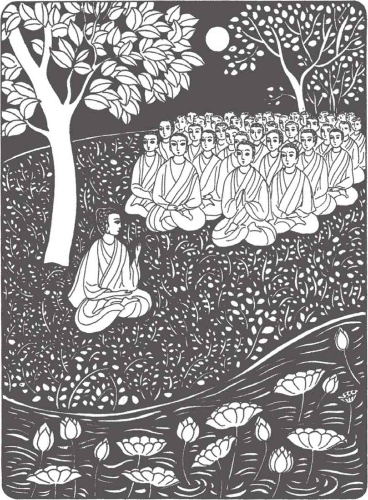
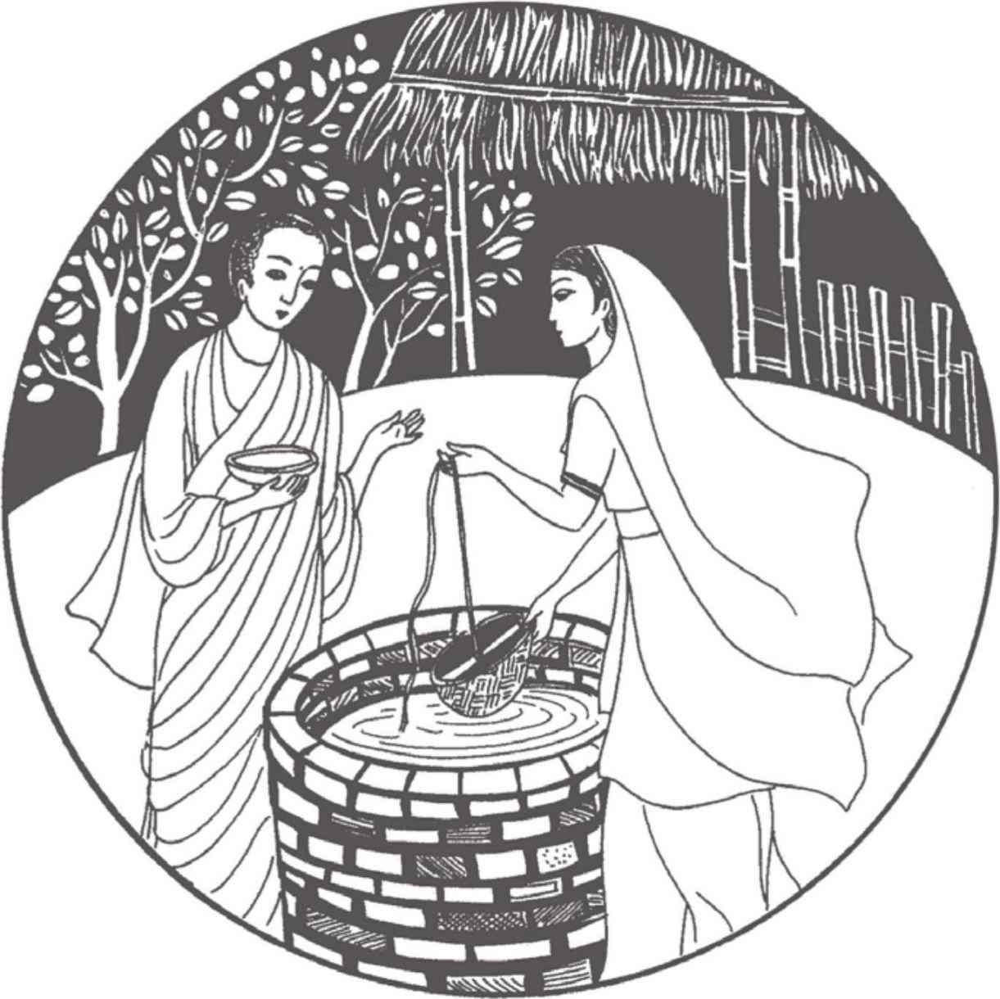
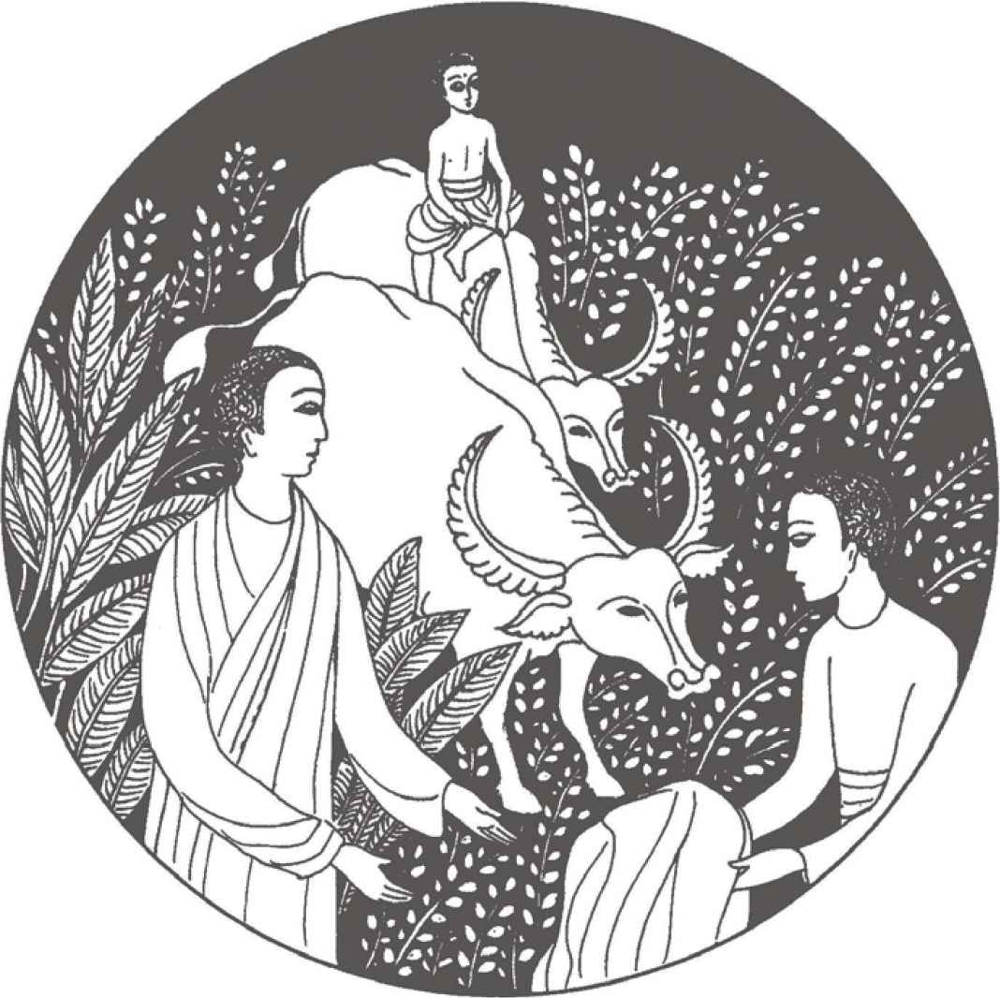
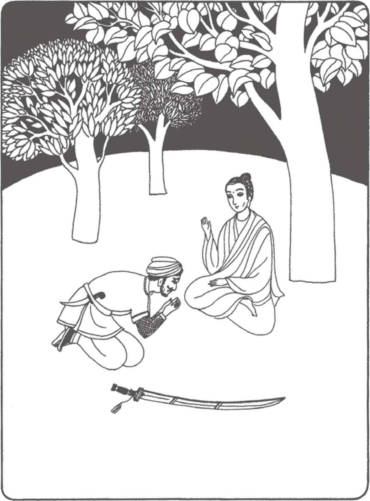
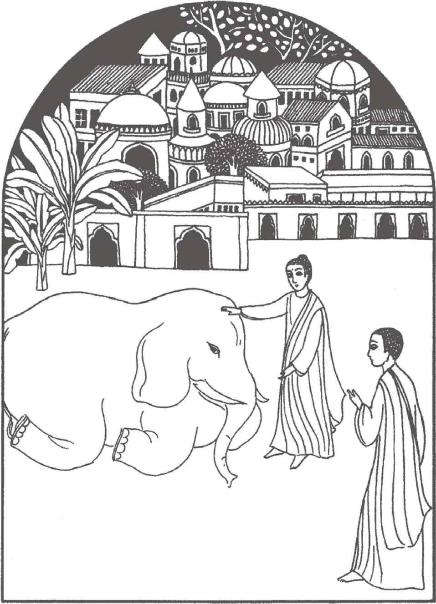
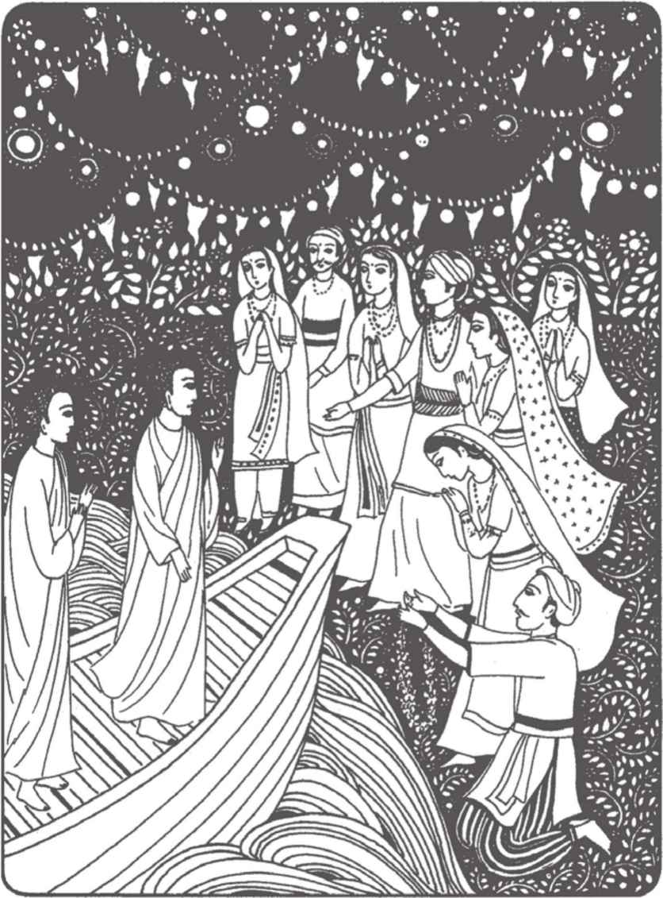
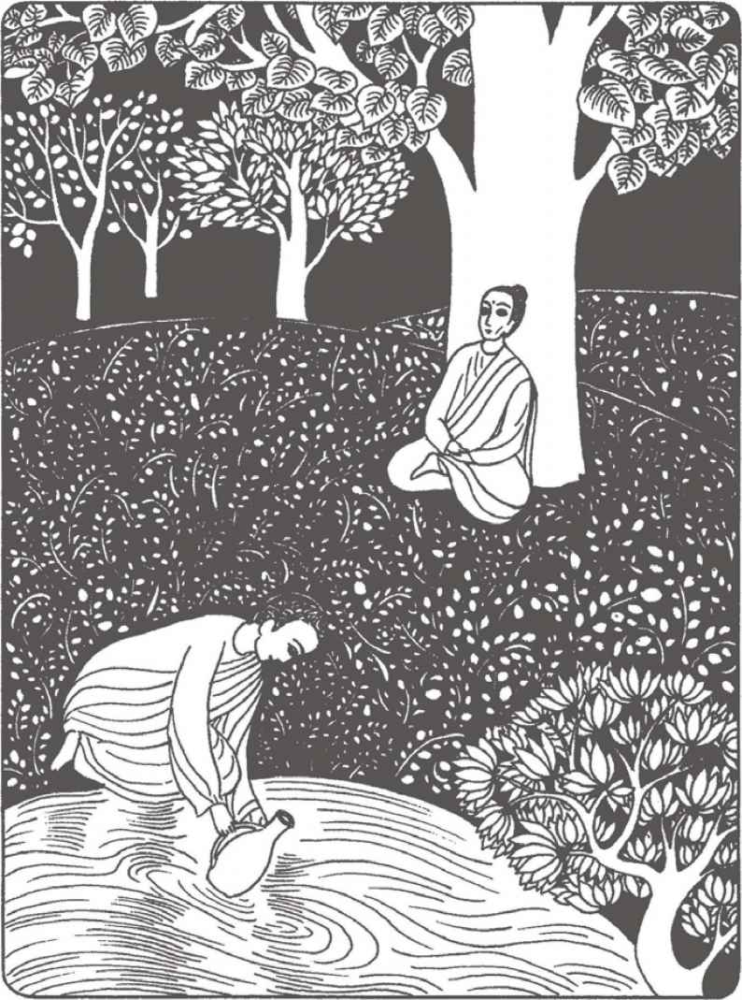
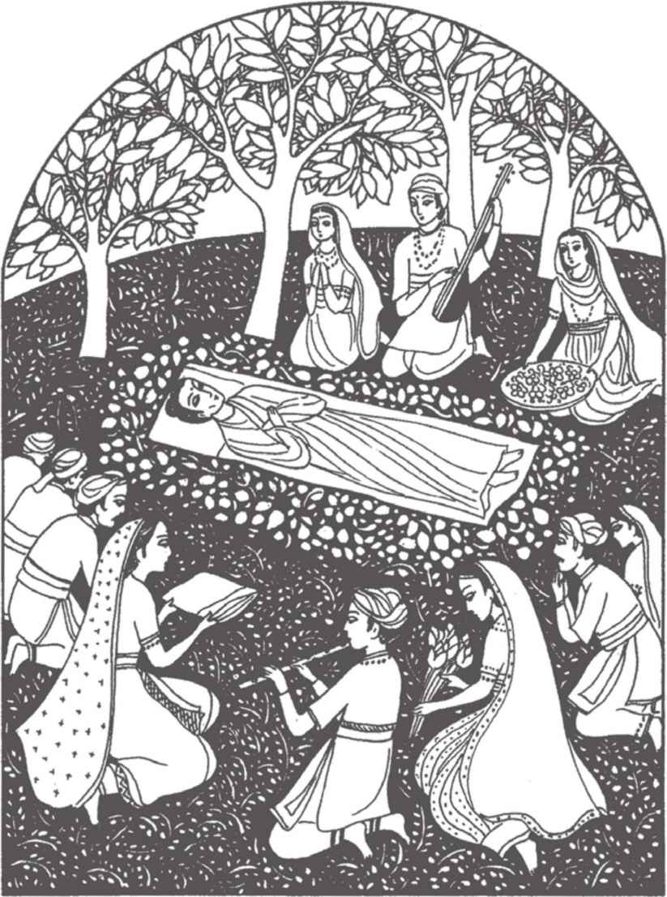
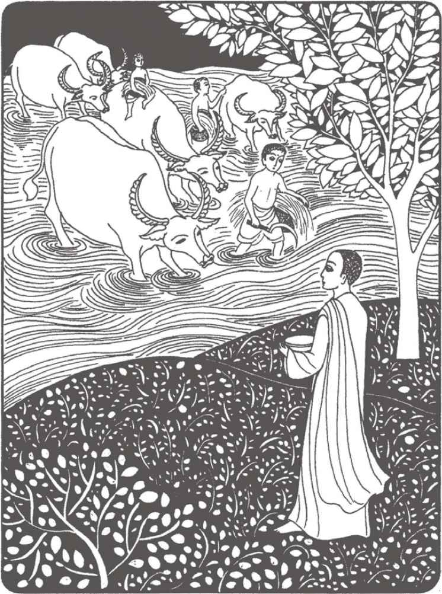

佛陀或他的大弟子，时常会到比丘尼的精舍说法开示。每月一次，比丘尼又会到祇园精舍或东园参加法会。某一年，在舍利弗的建议下，佛陀把安居的时间延长了一个月。舍利弗知道这样的安排，可以让很多比丘和比丘尼在他们各自的地方安居完毕之后，仍有时间来到舍卫城亲听佛陀说法。事实正如他所料，最后齐集舍卫城的僧尼多达三千。而在家的大护法须达多、鹿子母和摩利，更竭尽全力以提供饮食住宿给这些远道而来的僧尼。这年雨季安居后的自恣庆典是在昴宿月月圆日，而并不是在平时的七八月份。
那天，到处都盛开着莲花，因为每年这个时候，都是这种白莲花开放的季节。由于这个原因，九十月间的月圆日，又称莲华日。这晚，佛陀和他三千个弟子在明媚的满月下坐着，莲花的幽香从湖上阵阵飘来。佛陀瞻视默默坐着的比丘和比丘尼，继而称颂他们的勤奋精进。佛陀又把握这个机会，向他们宣讲《安般守意经》。
在场的僧尼当然都已知道觉观呼吸的方法，但他们大部分都是第一次直接听佛陀说法，这也是佛陀第一次把所有以往在这方面的开示全部做出总结。阿难陀尊者细心聆听，因为他知道这次的开示将会成为一部重要的经典，以便能传予所有的僧伽。
耶输陀罗比丘尼和孙陀莉难陀比丘尼都来参加这个法会，她们是几年前在乔答弥比丘尼的带导下受戒为尼的。她俩在迦毗罗卫国以北的一间精舍修行，那里是乔答弥比丘尼设立的其中一个修道中心。耶输陀罗比她的婆婆迟六个月受戒，而受戒一年后，便已成为乔答弥比丘尼的主要助导。
尼众一直以来都尽量参与舍卫城的雨季安居，以便能直接闻得佛陀或他的大弟子开示。摩利王后和鹿子母夫人一向都给予比丘尼全力的支持。最初的两年，尼众都是住在御花园里。第三年，她们才在王后和夫人的慷慨护持下，成立了第一所尼舍。乔答弥比丘尼自觉年事渐长，便刻意致力于栽培新一代的管理人。这些比丘尼，包括了耶输陀罗、顗罗、维摩那、苏玛、末达和纳杜他罗。这晚，她们全都在东园。罗睺罗尊者更把耶输陀罗和孙陀莉难陀两位比丘尼介绍给缚悉底尊者认识，他因为终于有机会与她们相识而觉得非常感动。
佛陀宣说此经：
“各位比丘与比丘尼，如果你们都可以持续修行圆满的觉观呼吸，你们将会获得很大的效益。它可以帮助你们成就四念处和七种正觉因素的修行，从而使你们生起智慧和证得解脱。
“你们应该如以下修行：
“第一口气息：吸入长的气息时，要知道自己在吸入长的气息；呼出长的气息时，要知道自己在呼出长的气息。
“第二口气息：吸入短的气息时，要知道自己在吸入短的气息；呼出短的气息时，要知道自己在呼出短的气息。
“这两口气息能帮助你打断昏沉和妄念，同时使你生起专念和接触当下此刻的生命。昏沉就是缺乏专念。呼吸的觉观，可以让你回到自己和生命里。
“第三口气息：吸入气息时，要觉观全身；呼出气息时，也要觉观全身。

三千比丘和比丘尼都法喜充满地在月色下听佛陀说教：“首先是观察万法的无常。当你了悟万法无常坏灭之性，你便再不受生死之轮所束缚，因而达到舍放和解脱。”
“这口气息能使你因观想身体而与自己的身体真正接触。觉观全身和身体每一个部分，能使你体会到身体存在的奇妙，又可以把生死的过程，在你的体内显露无遗。
“第四口气息：告诉自己吸入气息时会令身体安静平和，告诉自己呼出气息时也会令身体安静平和。
“这口气息能帮助你获得身体上的平静祥和，因而达至心、身、气都融合合一。
“第五口气息：告诉自己吸入气息时感到喜悦，告诉自己呼出气息时也感到喜悦。
“第六口气息：告诉自己吸入气息时感到快乐，告诉自己呼出气息时也感到快乐。
“这两口气息，能带你跨进感受的领域。这两口气息能替你创造滋养身心的平和喜悦。全因为散乱和昏沉都已止息，你才可以回到自己，投入此刻。幸福和喜悦的感觉，会在你心内冒起。
“你住于生命的奥妙，可以亲尝专念所带来的平和喜悦。由于与生命的奥妙接触，你便可以把中立的感觉也化为悦意之感。这两口气息，是替你带来悦意的感受的。
“第七口气息：吸入气息时，要觉观自己心内的活动；呼出气息时，也要觉观心内的活动。
“第八口气息：告诉自己吸入气息时，自己把心内的活动平静下来；告诉自己呼出气息时，自己也把心内的活动平静下来。
“这两口气息能使你深入体会自己生起的感受，不论是悦意、不悦意或中立的，继而让你把它们平伏安稳下来。在这里，‘心内的活动’是指感受。当你觉观自己的感受之后，你便可以看清楚自己感受的根和性。这时，你才可以控制和平伏它们，虽然它们可能是从贪欲、嗔怒或嫉妒所产生的。
“第九口气息：告诉自己吸入气息时，同时觉观自己的心念；呼出气息时，也同时觉观自己的心念。
“第十口气息：告诉自己吸入气息时，同时使自己的心念轻快平和；呼出气息时，也同时使自己的心念轻快平和。
“第十一口气息：告诉自己吸入气息时，同时在集中自己的心念；呼出气息时，也同时在集中自己的心念。
“第十二口气息：告诉自己吸入气息时，同时释放自己的心念。呼出气息时，也同时释放自己的心念。
“这四口气息，带你跨进第三个领域——心。第九口气息令你可以确认自己心里的不同境界，如体会、思惟、分别、快乐、悲哀和怀疑。你要观察和确认这些境界后，才可以彻视心的活动；当你确认心的活动后，才能使你的心寂静平和。这就是第十和十一口气息的功能。第十二口气息让你释放心内的所有障碍。这时，你的心才会重现光明，照见行念的根源，因而可以降伏重重的障碍。
“第十三口气息：告诉自己吸入气息时，同时观照万法的无常性体；呼出气息时，也同时观照万法的无常性体。
“第十四口气息：告诉自己吸入气息时，同时观照万法的坏灭；呼出气息时，也同时观照万法的坏灭。
“第十五口气息：告诉自己吸入气息时，同时观想解脱；呼出气息时，也同时观想解脱。
“第十六口气息：告诉自己吸入气息时，同时观想舍离放下；呼出气息时，也同时观想舍离放下。
“以这四口气息，行者便可以进入心所产生的物象领域，而集中心念以观察万法的实相真性。首先是观察万法的无常。因为万法无常，故万法皆会幻灭。当你了悟万法无常坏灭之性，你便再不受生死之轮所束缚，因而达到舍放和解脱。舍放并不是鄙视或逃避生命，要舍和要放的，是贪爱执取，以能可以超脱生死轮回这万法滋生的温床。一旦证得解脱，你便可以在这生命里活得平和自在，因为这时已没有任何东西可以把你缠缚。”
这就是佛陀怎样教导觉观身体、感受、心和法(心生之物象)的十六个观息之法门。他又说要将此十六法门用于导致正觉的七种因素，它们就是专念观想、审察正法、勇猛精进、喜获法益、心轻自在、集中正定和舍离妄法。
缚悉底尊者已听过《四念处经》，现在加上《安般守意经》，他便可以更深入地投入四念处。他体会到这两次经教的相辅相成，和它们对禅修的重要性。
这三千比丘和比丘尼都充满法喜地在月色下听佛陀说教。缚悉底更在心里暗自感谢舍利弗尊者安排这晚的法会。
一天，不害尊者从外面乞食回来，满身鲜血，几乎不能步行。缚悉底走上前把他搀扶。不害要求往见佛陀。他说他在城里乞食时，因为被人认出他是从前的央掘摩罗便被围殴。不害完全没有还击，反而合起双掌如莲状，由得他们发泄心头之愤。最后，他们把不害殴至吐血。
佛陀看到不害受伤，便立刻嘱阿难陀去取一盆水和毛巾前来，替他清洗伤口和血渍。佛陀又叫缚悉底去采集草药回来，制成膏药，替不害贴上疗伤。
虽然他的伤口剧痛，但不害尊者没有叫喊。佛陀说：“你今天所受的痛苦，可以使你以往的痛苦涤除。在觉察中忍受痛苦，可以抹掉千世的嗔恚。不害，你的衲衣已被撕破。你的钵在哪里？”
“世尊，他们把钵打碎了。”
“我会叫阿难陀给你新的衣钵。”
缚悉底替不害在伤处贴上膏药时，他看到不害其实真的是个不事暴力的好榜样。不害尊者又告诉他一件日前乞食时发生的事。
在森林中的一棵树下，不害遇见一个正在分娩的妇人。可是，这个妇人遇上难产，痛苦非常。不害大叫了一声“这样凄惨的痛楚”之后，便跑去求教于佛陀，问他如何是好。
佛陀说道：“跑回去告诉她说：‘太太，自出生以来，我都从未蓄意伤害过任何的生命。凭此功德，我祝愿你和你的孩子都能平安。’”
不害抗议道：“如果我这样说，便犯了妄语！事实是我伤害过无数的生命！”
佛陀说：“那么你去告诉她：‘太太，自我生于正法后，我便没有蓄意伤害过任何的生命。凭此功德，我祝愿你和你的孩子平安。’”
不害跑回林中对妇人说了这番话，不到几分钟，那妇人便平安地生下了孩儿。
不害尊者在大道上已行了很远，因而获得佛陀的最高赞誉。
那年冬季，佛陀住在毗舍离。一天，正当他在离大林精舍讲堂不远处禅坐时，几个比丘在精舍另一处的园地自杀而死。佛陀知道后，便询问他们自杀的原委。原来，他们是在禅观身体无常坏灭之性后，便对色身产生畏惧，以致不欲生存，佛陀知道这个原因后感到非常不安。
他齐集所有的比丘，对他们说：“我们观想无常和坏灭的目的，是要看清楚万法的实性而摆脱它的藩篱。逃避这个世界，并不可以使我们达到开悟与自主。要达到开悟与自主，得先要洞悉万法的真性。这几位同修没有真正地了解，所以才会做出此逃避生命的愚行。他们这种行为，也同时违反了杀戒。
“比丘们，一个解脱了的人对世法不会执著，但也不会畏惧。执著与畏惧，两者都是缠缚我们的绳。一个真正自由的人已超越了二者，安住于平和快乐之中，这种快乐是不可量度的。一个自由自主的人不会执著于恒常性和独立我体这等狭见，也不会执著于无常和无我的边见。比丘们，你们要理智地本着无执的精神，去学习和修行教理。”接着，佛陀指导他们实习下意识的呼吸，以帮助他们调息和振作起来。
佛陀回到舍卫城之后，更讲说了很多有关破除执著的言教，以对治一个名叫阿利陀的比丘对教理的误解。面对着一群在祇园精舍的比丘，佛陀说道：“比丘们，如果你们误解了教理，就很容易会被困于狭见之中，因而令自己和别人痛苦。你们对教理的聆听、理解和实行，都是需要运用理智的。一个了解蛇的人，会用一支有叉的棍子来按下蛇颈，然后才把它拿起来。如果他拿起蛇的尾部或身部，他便很容易被蛇咬到。正如你会运用智巧来捕蛇，你也应该同样地修学教理。
“比丘们，教理只是形容真理的工具，不要当它就是真理。指着月亮的手指不是月亮，手指只是用来指出月亮的方位。如果你把手指当作月亮的话，你便永远不知道月亮是什么。
“教理就像一艘乘载你渡河到对岸的木筏。我们需要木筏，但木筏并不就是对岸。一个聪明的人到了对岸之后，是不会扛着木筏到处跑的。比丘们，我的言教就像那木筏，是帮助乘载你们往超越生死的彼岸的。好好用那木筏乘载你们到达彼岸，但不要执著它是你的，而不肯放下。不要被困于法理之中。你们一定要懂得把它舍放。
“比丘们，我所传授给你们的言教，如四圣谛、八正道、四念处、正觉七因素、无常、无我、苦、空、单一和无求等，都是需要以开明理智的态度研学的。用这些教理来帮助达到解脱是对的，但谨记不要对它们执持不舍。”
比丘尼的精舍住着五百名尼众，她们时常邀请佛陀和祇园精舍的尊者前往开示。佛陀安排了阿难陀尊者负责选派比丘前往尼舍说法。一天，他选派了婆达比丘。虽然婆达比丘在修行上已证得很深的果位，但他的口才却不见特出。翌日，他乞食后在林中独自用饭完毕，便前往尼舍。比丘尼都热切地接待他，乔答弥比丘尼请他升座开示。
安坐在坐垫之后，他背诵了一首诗：
住于安寂，
见法归源，
无嗔无戾，
和悦充斥。
圆持专念；
得真自在。
出离欲念，
乃大欢喜。
尊者没再多说，只是自行进入甚深的禅定。虽然他说的话仅有几句，但单是他坐在那里，平和安乐的形象已足以使尼众备觉勉励。一些比较年轻的比丘尼对这样短促的开示难免感到有点失望，她们力求乔答弥比丘尼请他多说一点。乔答弥比丘尼向婆达比丘鞠躬顶礼后，转达了尼众的意思。可是，婆达比丘只是再重复了一遍诗句，便自行离座了。
数日后，佛陀获悉婆达尊者的开示。有人向他提议，日后或许应该选派较善辞令的比丘前往说法。但佛陀的回应是，那比丘的临场比他所说的内容更为重要。
一天乞食回来，佛陀到处也找不到阿难陀，罗睺罗尊者和其他的比丘都说没有见过他。只有一个比丘报告，说他好像看见阿难陀在邻近“不可接触者”的村落中乞食。于是，佛陀便叫那比丘前去找他。那比丘找到阿难陀回来，但同时也带了两母女到精舍见佛陀。那女儿的名字叫摩登伽女。
佛陀细听阿难陀这天迟回精舍的原因。数星期前的一天，阿难陀乞食后回精舍的路上突然感到口渴，他在“不可接触者”村里的一个井边停下来。这时，他看见摩登伽女正把木桶放下井里提水。她是一个可爱的女子。阿难陀向她请求一点水喝，但她拒绝了，她告诉阿难陀她是一个“不可接触者”，因此恐怕给僧人供水会污染他。
阿难陀对她说：“我不需要你是贵族高官，我只需要喝一点水罢了。我很乐意接受你的水。请不要怕污染我。”
这一来，摩登伽女便立刻给他供水。她觉得自己对这个英俊和蔼、说话温文的僧人很倾慕。她实已对他充满爱意。她彻夜难眠，满脑子都是阿难陀。那天之后，摩登伽女每天都待在井边，等候着看他一眼。她说服母亲请阿难陀回家吃饭。阿难陀接纳了两次邀请。但当他发觉这少女恋上了自己，便再没有应邀了。
摩登伽女对他日思夜想，逐渐消瘦。最后，她忍不住向母亲倾诉她对阿难陀的爱意，并表示希望他能还俗与她成亲。她的母亲呵责她这般愚昧，爱上一个僧人是不可能有结果的，但摩登伽女坚持她宁死也不会放弃阿难陀。为恐怕女儿受不住，摩登伽女的母亲唯有希望以药物刺激阿难陀，以期他会对女儿的热情有所反应。她来自摩登伽族，对于一些邪教药物是有点认识的。
那天早上，摩登伽女在街上见到阿难陀，便央求他再到她家里吃饭，说这将会是最后一次。阿难陀有信心自己可以对她们母女说教，使摩登伽女放弃对他的痴恋。但在喝下了药的茶之前，他根本就没有机会说教。当他感到双脚麻软、头目眩晕的时候，阿难陀才明白是怎么一回事，他立刻运用呼吸来抗衡药力。前来找他的比丘发现阿难陀的时候，他正跏趺而坐。
佛陀慈和地问摩登伽女：“你很爱阿难陀比丘吗？”
摩登伽女回答：“我全心全意地爱他。”
“你爱他什么？是他的眼、鼻还是口？”
“我爱他的一切——他的眼、鼻、口，他的声音，他走路的姿态。大师，我喜欢他的一切。”
“除了他的眼、鼻、口、声音、走路等，阿难陀还有很多你未知道的美德。”
“它们是什么？”
佛陀回答：“他的爱心就是其中一样了。你知道阿难陀比丘爱什么吗？”
“大人，我不知道他爱什么，我只知道他不爱我。”
“你错了。阿难陀比丘其实是爱你的，只不过不是你渴求的那种爱罢了。阿难陀比丘爱解脱之道、自由、平和、喜悦。由于他对自由和解脱都有所体验，他的脸上常常挂上笑容。他又爱所有的众生，他希望将解脱之道带给所有的人，好使他们都能够享受到自由、快乐与平和。摩登伽女，阿难陀比丘的爱，是来自了解与解脱的。他这种爱不会像你那种爱，给你带来痛苦和绝望。如果你是真的爱阿难陀比丘的话，你便会明白他的爱，而且更会让他继续生活在他选择的解脱之中。假如你也知道怎样像阿难陀比丘般去爱，你便不会再痛苦和感到绝望了。你的痛苦和绝望都是来自你欲私占阿难陀，这是一种自私的爱。”
摩登伽女望着佛陀说：“但我怎样才可以像阿难陀那样爱？”

那天之后，摩登伽女实已对阿难陀充满爱意，每天都待在井边，等候着看他一眼。
佛陀慈和地对她说：“如果你是真的爱阿难陀比丘的话，你便会明白他的爱。你的痛苦和绝望都是来自你欲私占阿难陀，这是一种自私的爱。”
“那就要在爱的同时，能保持着阿难陀比丘的快乐和你自己的快乐。阿难陀比丘就像一股清风，如果你把清风捉住，困在爱的牢狱里，那清风很快便会散灭，而再没有人可以受用它的清新凉快，就是你自己也不例外。摩登伽女，如果你爱阿难陀如你爱一股爽朗的清风一样，你自己也会变作一抹凉风，那时你便可以把自己和别人的痛苦与压力都一并消除。”
“大师，请你教我怎样才可以这样去爱。”
“你可以选择阿难陀比丘的道路。你可以像阿难陀比丘那样，过着平和喜悦的解脱生活，又将快乐带给别人。你可以像他一样，受戒为尼。”
“但我是一个‘不可接触者’！我怎么可以受戒呢？”
“我们的僧团是没有阶级分别的，僧团里已经有几个‘不可接触’的男众受戒为比丘了。波斯匿王十分敬重的苏利陀尊者，便是一个‘不可接触者’。如果你成为比丘尼的话，你将会是第一个‘不可接触者’比丘尼。你愿意的话，我可以请契嬷尼师替你主持授戒仪式。”
摩登伽女高兴不已，立即伏在地上向佛陀求受比丘尼戒，佛陀把她交托契嬷尼师照顾。她们离去后，佛陀便望着阿难陀，然后对众比丘宣说：
“比丘们，阿难陀的戒愿依然无染，但我希望你们要小心处理与外界的接触和关系。如果你们常住专念中，你们便可以知道自己内里的起心动念和外界在发生的一切。越是早一点察觉问题，便越可以更有效地将问题处理。在日常生活中时刻行习专念，你们便能够增长定力以应付必时之需。当你们的定力稳固时，你们的视线便会明朗清晰，处事也会得宜。定与慧是手牵手的，定慧互通，二而为一。
“比丘们，年纪比你们大的女人，要待她们如姐如母，年纪比你们小的女子，要待她们如妹妹或女儿。不要让对女色的吸引成为你们修行上的障碍。如有需要的话，在定功未够深厚之前，尽量减少与女性接触。与她们在一起时，只要说有关研习大道的话题。”
比丘们都很高兴地接受佛陀的指示。
一天，佛陀在一个贫穷的村庄里乞食时，遇到一些小童在污泥路上嬉戏。他们正在用泥沙堆砌着一个城镇，内里有城墙、仓库、住宅，甚至河流。他们看见佛陀和比丘行近时，一个小童对其他的说：“佛陀和比丘路过我们的城镇，我们不是应该给他们供养吗？”
其他小童都觉得这个主意很好，但却说：“我们只是小童，有什么可以供养佛陀？”
提出供养的孩子答道：“听着吧，朋友，我们的泥沙仓库里不是存着很多米粮吗？我们可以拿一些来供养佛陀。”
其他的孩子都高兴得拍手叫好。他们从泥沙仓库里掘起了一把泥土充当他们的米粮，把它放在一片树叶上。想出这个主意的孩子跪在地上，双手恭敬地把泥土代米奉给佛陀。其他小童也在他旁边跪下。小童说：“我们城镇里的人，现在敬上仓库的米食，希望你会接纳。”
佛陀微笑。他在小童的头上轻轻拍拍，说道：“小孩子，谢谢你们给我们供养这珍贵的米，你们真有心思。”
佛陀转过来对阿难陀说：“阿难陀，请你收下这些供养。回到精舍时，用一点水与它拌匀，抹在我房子的泥砖上。”
阿难陀接过了那把泥土。小童请佛陀坐在一棵榕树下的大石上，阿难陀与众比丘也围聚在一起。
佛陀给小童说了一个故事：
“多世以前，有一个太子名叫卫尸朋他罗。他是一个慈心慷慨的人，他常把自己的财物与贫穷和有需要的人分享。他的妻子嘛达利也有同样的心量，她知道丈夫很欢喜帮助别人，因此她对丈夫送那么多的财物给别人，从来都没有怨言。他们有一个名叫阇邻的儿子和一个名叫讫利尸纳吉纳的女儿。
“在一次饥荒中，卫尸朋他罗太子取得他父王的同意，从仓库里分派布米粮饷给饥民。人民的情况非常恶劣，以致仓库的储存几乎派得一空，这引起了一些大臣的微言，他们意图阻止太子继续这样做。首先，他们提醒大王，如果太子继续这样，国家将会受害。他们透露太子曾送出了一头宫中的宝象，使大王也为之愕然。最后，他们成功说服大王把他唯一的儿子送到阇夜吐罗的边远山区，让他一尝艰苦简朴的生活。卫尸朋他罗、嘛达利和他们的两个子女，便这样被放逐了。
“在往山区的旅途中，他们遇到一个乞丐。太子把自己身上的外衣脱下，送给了他。再遇上其他穷苦人时，嘛达利又把自己的衣服施赠他们。不久之后，阇邻和讫利尸纳吉纳也将身上的衣服布施了。一路上，他们一家人把全部珠宝财物都给了有需要的人。未到达山区，他们已什么都没有了。最后，太子更将他们乘坐的一车两马都施与他人。太子抱着阇邻，嘛达利也把讫利尸纳吉纳抱起来，就这样，他们毫无怨悔地步行，直至抵达阇夜吐罗。他们一边走，一边哼着歌谣，不觉得有一点的烦恼，他们心里逍遥自在。
“这段路程很长。到达山上时，卫尸朋他罗和嘛达利的双脚都红肿流血。幸好他们在山坡上找到一间被弃置的房子，这是从前一个隐士居住过的。他们打扫一番后，便搜集了大堆的枝叶做床。森林里有足够的水果野蔬供他们食用。两个孩子很快便学会搜集食物、用泉水洗衣、播种和园作。太子和妻子一起教孩子们认字写字，把大片的树叶权充纸张，有刺的树枝做笔。
“虽然他们生活艰苦，但他们都很满足地过了三年平静的生活。一天，卫尸朋他罗和嘛达利在外采摘野果回来，发觉一对儿女被人掳走。他们在附近的村落四处寻找，也没有他俩的下落。
“最后，他们带着疲惫和失望回家，指望孩子们已自行归来。他们在房子里见不到孩子，但却被一个王宫里派来的官差吓了一跳。当官差告诉他们阇邻和讫利尸纳吉纳都平安无恙，在王宫里与大王在一起时，他们都喜出望外。他们查问事情的原委时，官差告诉他们说：数日前，一个宫中的夫人在市集见到有人在卖孩子，她认出两个孩子就是太子的一对儿女。于是，她急忙回家告诉她当参谋的丈夫，他立刻到市集告诉那商贩把孩子带到宫中，更保证他会获取厚酬。大王也认出破衣污脸的孙儿，他发觉自己实在非常挂念你们。
“大王问道：‘你是在哪里找到这两个孩子的？你把他们卖多少钱？’
“但商贩未及回答，那参谋官便先说：‘陛下，女的卖一千两黄金和一千头牛，男的卖一百两黄金和一百头牛。’
“当时每人都觉得非常奇怪，大王便问道：‘为什么女的会卖得比男的贵那么多？’
“参谋官答道：‘你肯定珍惜女的比男的为多，你从来都不责骂公主们的劣行，就是宫中的婢女，你都待她们很好。你只有一个独子，而你却把他放逐到虎豹出没和只得野果做食的山区，你不是很明显地重女轻男吗？’
“大王不禁流泪，‘请不要再说下去，我明白你的意思。’
“大王得悉商贩也是从山上的另一个男子那里把孩子买回来的，于是，他给了那商贩一些银两，差他带领军警前去缉拿绑匪。拥抱着两个孙儿，大王细问他们这几年来在山上的生活状况。他下令把儿媳接回都城。自此，大王十分珍惜儿子，更协助他致力于救援贫苦大众的工作。”
小童们都很喜欢这个故事。佛陀笑着对他们说：“卫尸朋他罗太子很高兴与众人分享他所有的东西。今天，你们与我分享了你们仓库里的米粮，你们使我非常高兴。你们如果每天给别人一点点的礼物，也可以令他们很高兴。这些礼物未必是要买回来的，把在田里摘的一朵花送给你们的父母亲，已经会令他们非常高兴；一句感谢的话或一点爱心，也是很珍贵的礼物；一个慈祥的目光或表示关怀的举动，也可以替别人带来快乐。每天都给你们的家人和朋友一点礼物吧。我和比丘们要走了，但我永远都会记着你们今天的供养的。”
小童答应他们会相邀多一些朋友一起前往祇园精舍探望佛陀和比丘，他们很想听佛陀说故事。
下一年的夏季，佛陀回到王舍城说教。之后，他又前往灵鹫山。戌博迦到那里探访他，并邀请佛陀到芒果园住几天。佛陀接纳邀请之后，便相约阿难陀在那儿会合。这位医师的芒果园林令人清新凉快。那里的树，已是第八年结果了。戌博迦一早便替佛陀打扫好房子，又每天都做些素菜给佛陀供食。他提议佛陀暂停乞食几天来恢复体力，又用一些山果根叶泡了一服草药给佛陀调养。
一天，他们一起共坐时，戌博迦说：“世尊，有些人说你让比丘吃肉，他们扬言乔达摩可以容忍杀牲口来供自己及弟子所食。一些人更指责你要别人给僧团供肉。我知道这不是真的，但我仍希望听听你在这方面的意见。”
佛陀回答道：“戌博迦，那些说我准许杀牲口做食的人，不是在说真话。其实我已不止一次谈过这个问题。如果一个比丘看到别人为给他供食而杀动物，那比丘当然要拒绝受供。就是他不是亲眼目睹而只是闻说，他也应该拒食。再者，就是他对所供之食有此怀疑，也一定要拒绝。戌博迦，依照乞食的习惯，除非他知道供者是因为给比丘供食而杀牲口之外，一个比丘是应该接受任何乞到的食物的。知道比丘发愿慈悲的人，都会只供养素食给僧人。但有时，他们真的只有肉类食品。另一些人则因为没有接触过佛、法、僧，因而并不知道僧人吃素。在这种情形之下，比丘为免冒犯供者而令供者失了接触大道的机会，便应该接受他们的供食了。
“戌博迦，总有一天，人们会明白比丘是不会想杀动物的。那时，便再没有人会给比丘供肉，而比丘便可以全部素食了。”
戌博迦说：“我是相信素食比较对身体有益的，素食的人觉得比较轻快和没那么容易生病。我已持素有十年了。我发觉我的健康很好，而且更培养了我的慈悲心。世尊，我很高兴获得你给我的明确指示。”
戌博迦同时也赞许僧团改变了吃隔夜食物的习惯，那些食物是会变坏而导致生病的。佛陀很感激戌博迦，并邀请他到精舍再为比丘们讲说基本的卫生习惯。
戌博迦的芒果园宁静旷阔，到处都散布着给比丘尼住的寮房。一天傍晚，一位名叫妙巴的年轻比丘尼有一些问题要和佛陀商讨。她乞食后回芒果园的途中，经过一处幽静偏僻的小径时，突然被一名年轻男子拦住去路。她感觉到这男子不怀好意，于是便开始观察呼吸以能保持镇定清醒。她直望入这男子的眼里说：“先生，我是个修行佛陀大道的尼姑，请你让路给我回去尼舍。”
那男子说：“你还这么年轻貌美，为什么要把头剃光、身穿黄袍这么浪费青春啊？为何要活得像个苦行头陀？听我说吧，小姐，你那动人的身段应该穿着迦尸的丝绸纱丽才适合。唉，我真的从未见过像你这么漂亮的女人。让我来教你身体上的享受吧，跟我来。”
妙巴保持着镇静：“不要胡说。我要寻找的快乐，是从解脱觉悟之道得来的，五欲只会导致痛苦。给我让路吧，我将会非常感激你对我的体谅。”
可是，那男子不肯：“你的双眸美极了，我从没见过这般美丽的眼睛。我是不会这么愚蠢地把你放过的，我要你跟我来。”
他伸手去抓住妙巴，但妙巴避开了，她说道：“先生，不要碰我。你是不可以侵犯尼姑的。我选择了修道的生活，是因为已厌倦了被欲望嗔心所负累的人生。你说我的眼睛美丽，好吧，我就把它挖下来给你。瞎了也总比受你污辱为好。”
妙巴的语气十分坚决。那男子有点动摇，他知道这个尼姑是真的会这样做的，他退后几步。妙巴继续说：“别让你的欲念驱使你犯罪。你不知道频婆娑罗王已下令要把所有冒犯佛门僧尼的人严加惩罚吗？如果你再不检点，如果你再威胁我的贞洁或性命，你必会被拘捕处分的。”
刹那间，这年轻男子的理性恢复过来。他也体会到盲目的狂情真的只会导致痛苦。他踏步让开，给这尼姑让路，又在后头说：“尼师，请原谅我。我希望你在精神之道上成功达到你的目标。”
妙巴直往前行，没有回望。
佛陀盛赞这位年轻比丘尼的勇敢和坚贞，他说：“女尼在僻静的路上行走是非常危险的，这其实也就是我当初不允许女子受戒的原因。妙巴，由现在起，比丘尼都不得独自出外。不论是渡河、入村乞食或穿过森林田野，比丘尼都不可独行。比丘尼也不许独睡，不论在房子里或树下，比丘尼都不可独睡。她们出外或睡眠，都时刻要另有最少一个的比丘尼做伴，以能互相照应保护。”
佛陀转过来给阿难陀指示：“阿难陀，请你记下这条新例，并要求所有的长者比丘尼将这条律例列入戒律中。”
佛陀离开戌博迦的芒果园后，便与一众的比丘一起前往那烂陀。他们专注地慢慢步行，每个比丘都留心细察着呼吸。同路上，有两个苦行师徒在他们的行列后头跟着走。老师名叫善毗瑜，他的弟子叫婆罗达多，他们一路上谈论着佛陀的教化。善毗瑜对佛陀的教理诸多批评和讥讽，但奇怪的是，他的徒弟却屡屡与他辩驳，认为佛陀的言教值得钦敬。婆罗达多以滔滔的辩才说服他的老师。前行的比丘，都难免听到了他们在后面说话的内容。
那天晚上，比丘们在庵没芭娜帝伽这处茂密的树林里歇宿。这里是属于王室的地带，频婆娑罗王曾布告人民，所有的精神修道者都可以在有需要时在庵没芭娜帝伽作息。善毗瑜和婆罗达多也在那儿度宿。
翌日早晨，比丘们一起讨论那对苦行师徒的对话。佛陀听闻后，便对他们说：“比丘们，当你们听到别人讥讽或批评我或正法时，你们不要生起嗔怒或愤恨不平的感觉，这些感觉只会对你们有损无益；又当你们听到他人赞叹我或正法时，不要让快乐、享受或满足的感觉生起，这些感觉也是对你们有害的。正确的态度，是应该细心观察别人的批评里哪些部分是真，哪些部分是假。只有这样，你们才会在学习上有机会成就和进步。
“比丘们，多数称赞佛、法、僧的人都只具备很表面的浅见。他们都欣赏比丘们清净无染和简朴宁静的生活，但他们再看不到更深的层面了。那些深得法要的人，不会说太多称赞之词。他们都明白觉悟的真实智慧，这智慧高深奥妙，超越一般言说思想。
“比丘们，这世上有无数的哲理、学说和理论，很多人在这些论说上无止境地互相辩论。以我所查得的数字，就有六十二派主要的论说，它们包含了目前世上数以千计的哲学和宗教理论。从解脱觉悟之道的角度来看，这六十二派的论说都含藏百般妄见，造成很多障碍。”
接下来，佛陀便给他们解说这六十二派论说的中心思想，同时揭露它们错误之所在。他先说有关过去的十八种学说——永恒四论、部分永恒四论、有限与无限四论、无尽含糊四论，以及相信无因二论。他继而解说四十四种有关未来的学说——相信死后灵魂存在的十六论、相信死后没有灵魂的八论、相信死后没有灵魂存在或不存在的八论、断灭七论，以及认为现在就是涅槃的五论。指出这些学说的错误之后，佛陀说道：“一个称职的渔夫，会将渔网放下水里来捕取海中的鱼虾。当他见到这些鱼虾竭力想跳出网外的时候，他会对它们说：‘无论你们跳得多高，你们始终都仍在网内。’渔夫说得对。千万的理论学说都落在这六十二派论说之网内。比丘们，不要堕入这个梵网之中。这样做会浪费你们很多的时间，更可能使你们失去修行正道的机会，不要落于空谈猜度的网内。
“比丘们，这所有的学说和信念，都是由于对事物的领会有误和被感受所误导而生起的。如果不实修专念，根本就没可能见到思想感受的真性。当你能彻视思想感受的根本真性时，你才可以看到万法缘生和无常的性体。这时，你们便不会再被困于贪欲忧惧之网，以及六十二妄论的梵网之内了。”
开示之后，阿难陀尊者往外散步，并专注集中地忆记刚才佛陀所说的每字每句。他想：“这是很重要的经，我将叫它《梵网经》。这个网，囊括了这世间的所有妄论教条。”
离开庵没芭娜帝伽之后，佛陀先去那烂陀，然后再前往鸯伽的一个大城市——瞻波。鸯伽是频婆娑罗王管辖下的一个人口众多、土地肥沃的地区。佛陀在那里时，住在满布馥香莲花的伽伽罗湖畔一片森林里。
许多人都特意来到这里听佛陀说法，其中有一个名叫苏纳档达的年轻富者婆罗门。在这个地区，苏纳档达的聪明才智，是人所仰慕的。他的一些朋友曾劝他不要拜访佛陀，他们认为这样做，会给这个沙门乔达摩太多面子。但苏纳档达却和颜悦色地告诉他的朋友，他是不会轻易错过认识像佛陀这样有非凡深度的人的，他认为这是千载难逢的好机会。
“我需要增广我的见闻，”苏纳档达说，“我要知道沙门乔达摩在哪一方面比我高超，而我自己又在哪方面胜过他。”
五百个婆罗门决定加入苏纳档达的行列，他们一起步行前往伽伽罗湖，对苏纳档达充满信心。他们肯定他会让大家看到婆罗门的教理比佛陀的超胜。他们都相信苏纳档达不会羞辱他们的阶级教派。
面对早已被人群包围着的佛陀，苏纳档达呆住了一会儿，不知道说什么才好。看见这样，佛陀为免他窘恼，自行先说：“苏纳档达，你可否告诉我们，一个真正婆罗门的先决条件是什么？有需要时，请你引述《吠陀》作据。”
苏纳档达非常高兴，《吠陀》是他的专长，他说：“沙门乔达摩，一个切实的婆罗门应该具备五个条件——外貌俊朗端正、善于持诵祭仪、血统清纯可追索七代之远、要有贤德的行为和有智慧。”
佛陀问道：“这五样条件中，哪些最被重视？如果或缺其一，又可否仍然算是真正的婆罗门？”
想了一会儿，苏纳档达说明最后两个条件才真正是不能缺少的，外观、祭仪的擅长以及血统的纯净都不是绝对需要。那五百婆罗门听到苏纳档达这样的响应，都感到不快。他们全都举起手来挥动着，以表示不同意他的说法。他们认为他是受了佛陀的盘问而有所动摇，认为他的反应实在令婆罗门丢脸。
佛陀转过身来对他们说：“各位嘉宾！如果你们对苏纳档达是有信心的话，请你们保持肃静，让他继续说下去；假如你们对他是没有信心的话，便请叫他回座，好使我与你们其中一人继续论说。”
每个人都沉默下来。苏纳档达望着佛陀说道：“沙门乔达摩，请容许我对我的朋友们说几句话。”
苏纳档达转过头来，指着坐在前面属于他们阶层的一位年轻男子说：“你们都看到我的堂弟鸯伽迦吗？他是个英俊潇洒的少年。他的举止温文高雅，除了沙门乔达摩之外，便很少人可以与他的容貌相比。鸯伽迦对《吠陀》也非常精通，而且对祭仪的种种礼节十分熟悉。他纯洁的血源，从父母双方都可追索七代之远。相信没有人可以对他这三个条件有所怀疑的了。但假如鸯伽迦是个奸淫杀掠、偷拐掳骗的醉汉狂徒，那时，他的俊朗面容、祭仪熟技和纯净血统又有何价值呢？好朋友，我们一定要承认贤德和智慧才是一个婆罗门最必要具备的条件。这是所有人的真理，并不单是乔达摩僧人的。”
人群都热烈鼓掌。待掌声停下来，佛陀又问苏纳档达：“贤德与智慧两者，又有一样比较重要吗？”
苏纳档达回答道：“沙门乔达摩，贤德是来自智能的，但智能的增长又有赖贤良的德行。它们两者，是不可分割的。这就像用一只手洗另一只手，又或一只脚替另一只脚搔痒。贤德与智慧是互长互养的，贤德使智慧现前，智慧令行为更趋贤良，这两种质性都是生命里至为珍贵的。”
佛陀回应道：“非常好，苏纳档达！你说出了真义。贤德与智慧，确是生命里的至宝。你可再申说吗？怎样才可以把贤德和智慧发挥至最高的境界？”
苏纳档达微笑着合上双掌，向佛陀鞠躬顶礼，说道：“大师，请你指点我们。我们虽然知道这些原理，但你才是证了大道真理的人。请你告诉我们怎样才能够发挥贤德与智慧到最高的境界吧。”
佛陀对他们宣说解脱之道，告诉他们开悟的三次第——戒、定、慧。持戒生定，定能生慧，慧能令我们更深入地持戒。持戒越深，定力越长。甚深的禅定，又可启发更高的智慧。佛陀又讲解怎样观想因缘互生法以破除恒常和独立个体的妄见。观想缘起，可以帮助我们断除贪、嗔、痴，因而达至解脱、平和与喜悦。
苏纳档达听得着迷。佛陀说完后，苏纳档达站起来合上双掌，说道：“乔达摩大师，请接受我的感谢。你今天使我重见光明，把我从黑暗中带导出来。请你让我皈依佛、法、僧。同时，我也希望请你和比丘明天到我家里，让我给你们供养。”
佛陀与苏纳档达这天的诚切交流，在这一带的各阶层都引起了震撼。一群婆罗门的知识分子都追随了佛陀为师，其中包括在离车难伽那村的著名婆罗门阿摩伽和他的老师布伽罗萨帝。当婆罗门投皈佛陀门下的人数日渐增多时，一些婆罗门和其他的宗教领袖便难免愤气填胸了。
他们还在庵没芭娜帝伽的时候，缚悉底曾向目犍连尊者请教当时不同的宗教运动，目犍连为他总结了所有的宗别派系。
首先有富兰那・迦叶的一宗，他的门徒是不信道德礼教的，他们坚持好与坏只是传统习惯引起的观念。
末迦梨・俱舍利子的信徒，是宿命主义者。他们相信一生中所发生的，都是先天注定而不是个人的能力可以改变的。就是一个人在一千或五百年后得到解脱，这也是一早便注定了的，与他自己的努力与修行无关。
阿耆多・翅舍钦婆罗所教的，是享乐主义。他相信人是由地、水、火、风四种元素所成，一旦死后，便一无所有。他因此认为应该在有生之日，尽量经历世间的享受。
以迦罗鸠驮・迦旃延为首的一宗，则持相反的见解，属于无因论之感觉论者。他们相信一个人的肉体与灵魂，都是永不幻灭的。他们认为人是由七种元素形成——地、水、火、风、空、苦乐、灵魂为独立之要素，生与死只是外表形态因元素的散聚而产生的短暂现象。
舍利弗和目犍连两位尊者，都曾属于删阇夜・毗罗胝子的宗派。删阇夜教的见解是在某一个情形下的真理，未必在另一个情形下也是真的。一个人对环境事物的审察，才是最佳的度量。
尼乾陀・若提子带导的一群，是异行的苦修者。他们不穿衣服，又对所有众生都严持不杀之戒。尼乾陀・若提子所教的，是一种双重宿命论。他相信宇宙中有两种基本力量，生命与非生命。这一宗派在当时非常受人尊崇，因此在社会上有很大的影响力。比丘们与耆那教的苦行者常有接触，因为他们都是同样的尊重生命。但他们也同时有很多的分歧，因而引致一些比丘与耆那教的一些弟子时有冲突。目犍连尊者对这派的苦行尤为反对，直斥他们过分极端。因此，目犍连便成为这些头陀特别针对的目标。
佛陀回到舍卫城后，住在东园。他在这里的访客川流不息。一天早上，鹿子母夫人前来造访。当佛陀看到她全身衣发湿透，便问她：“鹿子母，你曾到哪里去？为何衣发尽湿？”
鹿子母夫人哭着诉说：“世尊，我的孙儿刚死去。我想前来见你，但忘了带备雨伞。”
“鹿子母，你的孙儿多大？他因何而死？”
“世尊，他只有三岁，是死于伤寒病的。”
“可怜的小孩。鹿子母，你有多少孩子及孙儿？”
“世尊，我有十六个孩子，九个已结了婚。我有八个孙儿，现在只剩下七个了。”
“鹿子母，你是否很喜欢有这么多的孙儿？”
“当然了，世尊，越多越好。如果他们的人数如舍卫城的人那么多，我便不知会多么快乐了。”
“鹿子母，你知道舍卫城里每天有多少人死去吗？”
“世尊，有时会有九至十个的，但每天最少都会有一个。在舍卫城，没有一天是没人死去的。”
“鹿子母，如果你的孙儿数目如舍卫城的人那么多，你的头发和衣服岂不是天天都湿透？”
鹿子母合起掌来：“我明白了！我真的不应该想要有像舍卫城人口那么多的孙儿。一个人越是多牵挂，便越是多痛苦。你时常都这样教导我，但不知怎的，我总是忘记。”
佛陀轻轻微笑。
鹿子母告诉他：“世尊，你总是在雨季之前才回到这里，一年中其他的时间，你的弟子都非常想念你。没有你在，我们来到精舍也觉得很没意思。我们都不知道做什么才好，通常只会在你的房子附近走走，便回家去了。”
佛陀说：“鹿子母，勤修正法比前来精舍造访更为重要。况且，你来到精舍也必定有其他的尊者说法。你可以向他们请示修行的法要，法教和导师绝无别异。请不要因为我不在这里便荒废你的修行啊。”
站在旁边的阿难陀尊者想出一个主意：“在这里种植一棵菩提树，应该会有帮助的。这样，信徒前来的时候便可以把这棵菩提树代替你的位置，他们甚至可以向它鞠躬，以象征对你顶礼。我们又可以在树下建一石台做坛，让信徒可以供花。他们可以绕树而行，观想佛陀。”
鹿子母夫人说道：“这主意真好！但你从哪里找来菩提树啊？”
阿难陀答道：“我可以在优楼频螺佛陀证道那儿取来菩提树的种子。别担心，我会拿得种子，把它栽至发芽，再种成大树。”
鹿子母夫人感到比较轻快和安慰了一点，她向佛陀和阿难陀尊者鞠躬礼辞后，便回家去了。
在同一个雨季里，阿难陀因提出了一个关于缘起的问题，以至佛陀对比丘们宣讲缘生法的十二种因缘关系。
他解说：“缘起之法理至为深奥，你们不要以为单凭一般言说开示便可以得其要领。比丘们，优楼频螺迦叶尊者能够入正法之道，都是因为闻得缘起之法。我们之中备受尊重的舍利弗尊者，也是因为听到一首有关缘起的偈语而入正道。你们需要每一刻都观想缘起之法性。当你们看到一片树叶或一滴雨点时，观想所有令这片叶和这点雨可以存在的远因近缘。你们必须知道这世界是千丝万缕的因缘所互相牵引、交织而成的。此有，故彼有；此无，故彼无。此生，故彼生；此灭，故彼灭。
“任何生灭之法，都是与其他所有的生灭之法相连。一中含多，多中含一。没有一，便没有多；没有多，便没有一。这就是缘起法的奥义。如果你们洞悉万法的性体，你们便可以超越生死所引起的所有烦恼。这样，你们才可以冲破生死的巨轮。
“比丘们，缘生法的连锁关系有很多层次，大致可分为四类——主因之正缘、增上之助缘、相续无间之行缘和心生物象之攀缘。
“主因是世法现象生起的必需条件。例如，一粒米，就是一棵稻米的主因。帮助增加这粒米生长成稻的种种因素，就是助缘。在这个例子里，这些助缘包括了阳光、雨水、泥土等。
“相续无间的行缘，是导致物象生起的过程中，潜伏进行着每刻微细因缘相续的因素。没有这不断进行着的过程，又或过程中受到干扰而中断的话，稻便生不成了。所有提及的物象世法，都其实是心识所产生的。米、稻、阳光、雨水、泥土等，全都是因心法攀尘所生起的。心所也就是世法生起的基本因素之一。
“比丘们，苦恼是因为有生有死才存在的。那什么引起生和死？是无明。首先，生与死都只是心智产生的概念。这些概念，是无明的产品。当你们深切透视世法万象之后，你们便可以降伏无明，因而超越生死的概念。超越了生死之念，你们便能降伏烦恼。
“比丘们，有死之念是因为有生之念，这等妄念都是来自有独立个体的‘我’这个妄见。有我的妄见，来自执取。执取的产生，是因为爱欲。有爱欲，是因为我们看不清感受的真性。看不清感受的真性，是因为我们被困于六根六尘的接触之中。我们被困于六根六尘的接触之中，是因为我们的心并不清澈平和。我们的心并不清澈平和，是因为我们的心有起心动念。心的起心动念，是因无明所致。这十二种因缘关系相互牵引，彼此密切联系。在一种因缘关系中，可以见到其他十一种关系。当中缺少了一节，其余的十一节也便不会再存在。此十二因缘就是死、生、有、取、爱、受、触、六入、名色、识、行、无明。
“比丘们，无明乃十二因缘之始因。幸好观照缘起的法性，可以使我们能够摒除无明，超越烦恼。一个觉悟的人，可以在生死之海的惊涛骇浪上跨过，而不堕溺其中。一个开悟的人，利用十二因缘之法，如同车轮。一位觉者，虽住于世而不落其间。比丘们，不要逃避生死。你们只须把自己提升到生死之上。超越生死，是‘真正伟大者’的成就。”
在数日后的一个研法会上，摩诃迦叶尊者提醒僧众，说佛陀已曾多次宣讲缘起之法，因而此法可被视为正觉之道的核心教理。他又重申佛陀曾以一撮芦苇来比喻缘起法。佛陀当时说过，世法的存在并非因为有个创物主，而是因缘而生的。无明引致起心动念，而这些行念又再复产生无明，正如芦苇相互倚傍而立。一枝芦苇倒下，其他的就都相应而堕，这是宇宙万象的真相——多从一生，一从多起。我们观察得够深入，便可见到一中有多，多中含一。
在这同一个雨季，几个婆罗门合谋，意图诬告佛陀与一个女子发生关系而令那女子怀孕。他们找到一个名叫轻斜的年轻貌美的婆罗门女子，告诉她婆罗门的急剧失势，是因为许多年轻人被佛陀教唆成为他的弟子所致。为了保护她的信仰，轻斜便答应与他们合作。
她每天前来祇园精舍，都身穿一袭美丽的纱丽，手携一束鲜花。她并不会准时前来参加法会，而只是站在讲法堂的附近，等待着信众离场。起初，当她被人问及在那儿干什么时，她总不回答，只是微笑。数日后，她开始有所反应，但也只是说：“我去我要去的地方。”再过几个星期，她便开始给人含糊的答复，“我要前去找沙门乔达摩。”最后，她又被人听到这样说，“在祇园精舍度宿，很是不错！”
很多人都觉得她的话刺耳，一些信众开始有点怀疑，但都没有提出疑问。一天，轻斜出现在佛陀的法会里，她的肚子明显地隆起来。佛陀正在说法时，她突然站起来，大声说道：“乔达摩师父！你这么有口才说法，地位又那么受人尊重，但你对我这个被你弄大了肚子的可怜女子，却全不理会。我的孩子是你的，你愿意负起你这亲生骨肉的责任吗？”
众人一阵骚动，每双眼睛都注视着佛陀。佛陀只是淡淡地微笑，答道：“姑娘，只有我和你才知道你声称的是否属实。”
众人无法再按得住他们的惊讶，几个人怒气冲冲地站起来。轻斜忽然感到恐慌，生怕别人会打她一顿。她找寻出口离开，但在慌乱中却不小心跌倒。正当她挣扎着想站起来的时候，一块又圆又大的木块从她的腹部堕到地上，正落在她脚上。她疼痛得大叫一声，忙抓着差点儿被压扁的脚趾。她现在的肚子变得平坦了。
群众都顿时松一口气。一些人不禁大笑起来，另一些则对轻斜讥骂。契嬷比丘尼上前，轻轻搀扶轻斜离开讲堂。她俩出去后，佛陀便再恢复说法，就像没有事情发生过一样。
佛陀说：“信众们，就如光明驱散黑影一般，觉悟之道可以拉倒无明之堵。四圣谛、无常、无我、缘起、四念处、七正觉因、三门、八正道，全都像狮子吼般被宣说过，因而悉破了无数的妄见邪说。狮子是禽兽之王，离开洞穴时，它伸展身体，眺视四面八方。搜寻猎物之前，它会发出如雷贯耳的吼叫声，其他动物无不震惊而逃。雀鸟高飞，巨鳄向水里潜，狡狐也急忙钻进洞里去。就是村中的大象，虽然有彩带装饰和金伞为盖，都被这吼声吓得四处乱跑。
“信众们，觉悟之道的宣讲，就正如狮子吼！邪说为之震惊。当无常、无我和缘起法被宣说时，一向从无明和昏惑中找寻安稳的人天众生，都立时醒觉起来。一个人见到耀目的真理时，他会惊叹：‘长久以来，我们都抱着危险的妄见，以无常为常，又以为有个独立的我。我们误当苦恼为享乐，视短暂作永恒。我们又错认假的，以为是真。现在是时候让我们扯下迷惑颠倒的妄见之墙了。’
“信众们，觉悟之道使人类得以消除妄见的厚厚遮掩。一个觉者出现时，大道便如涨潮的涛涌声般到处回响。潮水高涨时，所有的妄见全都被冲走。
“信众们，一般人很容易堕入四种陷阱：第一种是对感官之欲的执取不舍，第二种是对狭见的执著，第三种是对正法的怀疑，第四种是有‘我’之妄见。觉悟之道帮助我们不堕入这些陷阱。
“信众们，缘起之法可以帮助解决每一种障碍。在日常生活中，你们应该时刻观照身体、感受、心和心生之物象的互依互缘之性。”
翌日，阿难陀在大堂里重复了佛陀的言教，他称这经为《狮子吼经》。
这个雨季里，很多比丘都患上了疟疾，一些比丘因太瘦弱而不能往外乞食。虽然其他的比丘都很乐意与他们分食，但因乞来的食物通常都有咖喱在内，不适合有病比丘的肠胃。因此，佛陀特准在家众替这些比丘备食。他们会烹调一些容易消化的食品，如加有蜜糖、乳汁、蔗糖和油等营养材料的米粥。由于这些食物的帮助，比丘们也慢慢康复了。
一天禅坐后，佛陀听到很多乌鸦的叫声。察看之下，他发现一些比丘正拿喂哺病僧的食物给乌鸦们吃。他们解释说，当日上午，几个有病的比丘都没有胃口。过了中午，比丘们都不许进食。当佛陀问他们为何不留着食物待明天再吃时，比丘们提起有关不可吃隔夜食物的规条。佛陀告诉他们，以后有病的比丘，不用持守过午不食之戒，并说如有一些食物是可以保留的，便可留至翌日。
不久之后，一位医师从城里到来造访舍利弗尊者，他建议有病的比丘吃一种特别泡制的草药。之后，比丘们的健康便很快恢复了。
雨季过后，舍利弗尊者向佛陀道别，准备到外地弘法。佛陀祝愿他旅途平安，身心都了无挂虑。他又希望舍利弗这次努力的弘法，不会遇到太多的障碍。舍利弗尊者表示感谢后，便起程离去。
当天下午，一个比丘前来，向佛陀申诉舍利弗尊者待他的不是。他说：“我今天问舍利弗尊者往哪儿去的时候，他不仅没有回答，还把我推倒在地上。跟着，他未有道歉，便继续上路了。”
佛陀对阿难陀说：“我相信舍利弗应该不会去得太远，派一个学僧前去追上他，我们今晚要在祇陀讲法堂召开集会。”
阿难陀照佛陀的吩咐去做。傍晚时，舍利弗尊者已与学僧回到精舍了。佛陀告诉舍利弗说：“舍利弗，我们大家今晚在讲法堂集会。一个比丘投诉，说你把他推到地上，而且全无歉意。”
那天下午，目犍连和阿难陀两位尊者在精舍内四处通传晚上的集会。他们说：“你们都被邀参与今晚在讲法堂的集会，舍利弗师兄今次有机会表现他的狮吼了。”
当晚没有一个比丘缺席，他们都想看看舍利弗尊者如何应付那些对他一向埋怨的比丘。舍利弗尊者是佛陀最信任的弟子之一，因而成为很多比丘妒忌和误会的对象。有些比丘认为佛陀对他过分信任，觉得舍利弗在僧团的影响力太大。一些被佛陀指责过的比丘，更认为这是因为舍利弗在佛陀面前道说他们的长短。很多比丘简直觉得舍利弗讨厌，他们不能忘记数年前佛陀邀请舍利弗共分法座。
阿难陀尊者还记得八年前有一个名叫俱迦利的比丘住在祇园精舍，他对舍利弗和目犍连的成见，就是佛陀也劝他不来。俱迦利认为他俩极其虚伪，所做的一切，都只是为了自己的野心。佛陀曾私下与他细谈，告诉他这两位长者其实非常真诚，所作所为也都是出自一片慈心。可惜俱迦利满怀都是嫉妒和怨恨，对这些话听而不闻。最后，他离开了精舍，前往王舍城找提婆达多尊者，更成了他日后的亲信。
也就是因为同样的原因，阿难陀尊者起初才不肯充当佛陀的侍从。没有他所提出如不与佛陀同房共食这些条件，阿难陀也知道很多的师兄弟都会对他抗拒。有些比丘就是觉得佛陀没有给予他们足够的照顾。阿难陀明白，他们这种愤恨的感觉是会使他们离弃佛陀的。
阿难陀又记得一个来自挢赏弥的调牛聚落村落的女子，名叫摩刚提卡，因为觉得佛陀没有对她特别关怀而怀恨于心。她是一个美艳的婆罗门。她遇到佛陀时，佛陀已四十四岁。当时，摩刚提卡对佛陀一见倾心，一直想知道佛陀对她有没有另眼相看。她想尽办法引起佛陀的注意，但佛陀只是如对一般人那样对待她。长久下去，她对佛陀的爱慕变为恼恨，后来她成为富萨的郁提纳王的妻子，便曾屡次用她地位的影响力来散播佛陀的谣言。她更对有关方面施压，以防止佛陀举行公开的法会。当郁提纳王的一个妃子三昧瓦提成为佛陀的在家弟子后，摩刚提卡便千方百计加害于她。遇到这种种的难题，阿难陀向佛陀建议离开挢赏弥，往比较友善的地方弘法。但佛陀却问他：“假如我们在别处也遇到同样的羞辱和困难，我们又怎么办？”
阿难陀回答：“再往别处去。”
佛陀不同意，“那是不对的，阿难陀。每次遇到困难，我们都不应该气馁，我们应该在困难中把问题解决。阿难陀，如果我们实践平等心，我们便不应被羞辱毁谤所困扰。毁谤羞辱我们的人，是伤害不了我们的，到头来只会伤害他们自己。当一个人向天上吐涎，上天不会为之气结，涎沫也只会跌落在吐涎的人的脸上。”
阿难陀对舍利弗应付目下情形的能力绝不担心，佛陀信赖舍利弗是理所当然的。舍利弗实际上是僧团里的贤能长者，在带导僧团方面，佛陀也要借助他的深思远见。他是几部经的著述者，其中包括《大象足印经》。在这部经里，舍利弗以他的果行所见，用十分创新的角度来讲说四大元素与五蕴的关系。
佛陀进入讲堂时，众比丘都站立起来。他示意他们坐下，然后自己才坐下来。他嘱舍利弗坐在他旁边一张椅子上，佛陀对他说：“一个比丘指控你把他推倒在地上而又没有道歉。你有什么话要说吗？”
舍利弗尊者合上双掌站起来，他先向佛陀鞠躬，继而向僧众作礼。他说：“世尊，一个不修行、不观照身内之体又不留意自己行为的僧人，是会把同修推倒在地而又不道歉的。
“世尊，我仍记得你十四年前对罗睺罗的教导。那时他只有十八岁，你教他观照地、水、火、风以培养他的慈、悲、喜、舍四无量心。虽然你当时的教诲是对罗睺罗而说，但我也同时学习。过去的十四年里，我都努力去遵照这教导，而内心对你无限感激。
“世尊，我修习要更似‘地’。地宽而广，有容量去接受和应变。不论别人把清香纯洁如鲜花、香水或乳汁等物放在地上，或将肮脏臭秽如屎、尿、血、黏液和痰涎等淌在地上，大地都会平等接受，不执不厌。
“世尊，我曾静思观想我的身心以能更像大地。一个不观照身内之体、不留意体行的僧人，是真的会把同修推倒而不道歉便离去，这不是我的行径。
“世尊，我修习要更似‘水’。无论我们把芳香或秽臭之物扔到水里，水都会一样接受，无执无厌。水博大流动，有变化洁净的功能。尊敬的佛陀，我曾静思观想以使身心更似水。一个不去观照身内之体、不留心自己体行的僧人，是会把同修推倒而不道歉便离去，这不是我的行径。
“世尊，我修习要更似‘火’。火能化烧万物，不论是美的或是不洁的，它都全无执著和厌弃。火能燃烧与净化。尊敬的佛陀，我曾静思观想以使身心更像火。一个不观照身内之体、不留心体行的僧人，是会把同修推倒而不道歉便离去，这不是我的行径。
“世尊，我修习要更似‘风’。风可以载送好与坏的种种气味，全无执著或厌弃。风能改变、清净和发放。尊敬的佛陀，我曾静思观想以使身心更像风。一个不观照身内之体、不留意自己体行的僧人，是会把同修推倒而不道歉便离去，这不是我的行径。
“世尊，就像一个‘不可接触者’的小孩，身穿破衣、手持烂钵在街上乞食那样，我专意修习不持虚慢和骄傲之心。我试图把自己的心变作一个‘不可接触者’的小童之心。我也修习谦卑心，不敢将自己放在别人之上。尊敬的佛陀，一个不观照身内之体，又不留意自己体行的僧人，是会把同修推倒而不道歉便离去，这不是我的行径。”
舍利弗尊者本想继续说下去，但指控他的那个比丘已忍受不住了。他站起来，把僧袍的一角拉上来披在肩上，向佛陀鞠躬。合上双掌，他向佛陀承认：“佛陀世尊，我违反了戒条，我对舍利弗的作供是假的。在你和僧众面前，我现在自忏过失，更誓愿永远不再犯戒。”
佛陀说道：“也难得你肯在大家面前认错，我们都原谅你。”
舍利弗尊者合掌说道：“我不会对这位兄弟有任何埋怨，我更想借此机会请求他原谅我以往对他冒犯之处。”
那位比丘合掌对舍利弗鞠躬致礼，舍利弗也同样回礼，整个讲堂都洋溢着喜悦。阿难陀尊者站起来，说道：“舍利弗师兄，请在这里多留几天。各位兄弟都想有多点时间与你在一起。”
舍利弗尊者微笑答允。
现在雨季已过，佛陀便到野郊的乡村里去。一天，他在为伽摩那族人讲道。很多听众都是年轻人，他们对沙门乔达摩闻名已久，但这是他们第一次有机会亲见其人。
一个青年合掌问道：“大师，以往曾有不少婆罗门的教士到这里来说教，每一位教士都说自己的一派学说胜于别的，这令我们觉得非常混乱，我们真的不知应该追随哪一条道路。到头来，我们对全部都失去了信心。我们闻得你是开悟了的大师，你可否告诉我们应该相信哪一套说法？谁说的是真理，谁说的又是假道呢？”
佛陀答道：“我明白你为什么会有那么多的疑虑。朋友，不论那些言说是很多人重复过的，或是记载在圣典上的，又或是出自人人敬重的导师口中的，你们都不要轻易相信。只要接纳那些合符道理、有贤德者支持，兼能在修行中带来幸福与裨益的教理；放弃那些不合符道理、没有贤德者支持，而又不能在修行中带给你幸福与裨益的言说。”
伽摩那族人请佛陀给他们多说一点。他再说：“朋友，假设有一个全被贪、嗔、痴所奴役的人，他的贪、嗔、痴会给他带来快乐还是苦恼？”
众人回答：“大师，贪、嗔、痴会令那人的行为带给他自己和身边的人很多痛苦。”
“贪、嗔、痴的生活，是贤人智者所会支持的吗？”
“不会的，大师。”
佛陀又说：“又假设有一个依慈、悲、喜、舍而生活的人，他替别人拔苦以使别人快乐。他替别人的幸运而高兴，又会以平等心待人，全舍执著。这种生活会为他们带来痛苦还是快乐？”
“大师，这种生活当然会替他自己和身边的人带来欢乐了。”
“慈、悲、喜、舍会是贤人智者所鼓励和支持的吗？”
“当然了，大师。”
“我的朋友，你们现在已够资格辨别什么才是应该接纳的东西了。只要相信和接纳那些合符道理、贤智支持和为你及他人带来裨益快乐的，一切与此等原则违背的，都要摒弃。”
这些伽摩那族的青年，都从佛陀的说话中得到很多勉励。他们觉得佛陀之道，不要求别人无条件地信奉，佛陀之道真正尊重思想的自由。当天，好些伽摩那族人都请求成为佛陀的门徒。
沿途上，佛陀在阿拉毗村落停下来，他和八个比丘在一处公众楼舍内与当地一些居民一起接受供食。用饭之后，正当佛陀准备开始说法时，一个年老的农夫喘着气走进礼堂。他来迟了的原因，是要寻找一只走失了的水牛。佛陀看得出这农夫整天都没有吃过东西，于是便叫人给这老人一点咖喱饭，待他吃完才开始举行法会。很多人都因此感到不耐烦，他们不明白为何要因为一个人而延误佛陀的开示。
农夫吃过饭后，佛陀便说：“敬爱的朋友，我刚才如果让老农夫饿着肚子听法，他一定不能集中，那便会很可惜了。没有什么比饥饿更难受。饥饿摧残我们的体肤，又使我们无法安稳快乐。我们时刻都不要忘记那些饥饿的人。不吃一餐已经不是味儿，更何况是几天甚或几个星期？我们必定要确保这世上再没有被迫挨饿的情况。”
阿拉毗之后，佛陀沿着恒河朝西北往挢赏弥去。途中，他停下来观察一块浮木被水冲向下流的情形。指着那浮木，他呼唤比丘，说道：“比丘们！如果那浮木没有被河岸阻顿下来、没有下沉、没有遇到沙洲、没有被拾起来、没有堕入涡流或从内里枯烂，它便可以一直流入海里。这与你们在修行道上一样。如果你们不被河岸阻顿下来、不下沉、不遇到沙洲、不被拾起来、不堕入涡流或从内里枯烂，你们也肯定能达到觉悟解脱的大海。”
比丘说：“世尊，请你详细申述一下。被河岸阻顿、下沉，又或遇到沙洲是什么意思？”
佛陀答道：“被河岸阻顿，就是被六根六尘所纠缠。如果你们精进修行，便不会为六根六尘互相接触所产生的感受而缠缚了。下沉的意思，就是成了欲念和贪求的奴隶，它们会剥夺你应该用在修行上的精力。为沙洲所阻碍，就是为了私欲而忧虑，永远只顾追逐名利而忘却了以觉悟为目标。被人拾起来的意思，就是迷失自己于散乱之中，与损友虚度时光而不事修行。堕入涡流，就是为五欲所困。五欲就是财、色、名、食、睡。从内里枯烂的意思，就是过着虚伪的生活，欺骗僧伽而同时以正法来达到自己的欲望。
“比丘们，如果你们精进修行而不堕入这六个陷阱，你们便必能证得觉悟之果，如那片浮木可以毫无障碍般直流入海里。”
佛陀在说这些话时，一个路过的牧童也停了下来细听，他名叫难陀。他被佛陀的话感动得即刻走过来，请求佛陀收他为徒。他说：“大师，我很希望能够像这些兄弟一样成为比丘。我想追随精神之道。我答应一定会全意学道。我会避免被河岸阻顿、下沉，被沙洲障碍，被人拾起来、堕入涡流又或从内里枯烂。请你接纳我为你的门徒。”
佛陀很喜欢这个少年明亮的面容。他知道这个少年虽然一定不曾上学念书，但却是个勤奋能干的小伙子。佛陀点头以示同意，并问他说：“你年纪多少？”
难陀回答：“大师，我十六岁。”
“你的父母在世吗？”
“不在，大师，他们都死了。我没有其他亲人。我只替一个富主看顾水牛，以能有栖身之所。”
佛陀又问：“你可以一日只吃一餐吗？”
“我这样做已经有很长时间了。”
佛陀说：“正规来说，你是应该到二十岁才可以加入僧团的。一般人未到二十岁，是未够成熟去适应过出家的生活的，但你很特别，我就让僧团这次破例吧。你就以沙弥的学僧身份来修行四年，再正式受具足戒。回去你雇主那里放下水牛，并问得他的批准让你离开吧。我们在这里等你。”
少年回答道：“大师，我想没有这需要了。这些水牛都非常驯良，它们是可以不用我带领自行回到牛房去的。”

罗睺罗被这巨型动物的温驯所感动。他与缚悉底分享了骑在牛背上那逍遥的感觉，又告诉缚悉底，他很想知道佛陀看见他这个样子时的反应。
佛陀说：“不，你一定要自己带水牛回去，并向你主人请辞。”
“但我回来找不到你们又怎样？”
佛陀微笑：“别担心。我答应你，我们会在这里等你的。”
难陀把水牛带回牛房时，佛陀对缚悉底说：“缚悉底，我会将这少年交给你照顾。我相信你一定会很清楚怎样带导和支持他的。”
缚悉底合掌微笑。缚悉底尊者现在已三十九岁，他知道佛陀为何要他指导难陀。很久以前，佛陀宣讲《看顾水牛经》，都是因为认识了当时像难陀一般也是牧童的缚悉底。在修行道上，缚悉底知道自己可以好好地带导难陀。他又知道他的好朋友罗睺罗尊者，也会从旁帮助他，罗睺罗现在三十六岁。
缚悉底的弟妹都已成家立室，有他们自己的家庭。他们从前住的茅房，早已不存在了。缚悉底回忆起一次与罗睺罗回优楼频螺的造访，那是在卢培克婚后移居他乡的时候。那时，芭娜和媲摩仍是相依为命，以卖饼食为生。缚悉底和罗睺罗两比丘步行至尼连禅河。缚悉底一直没有忘记他给罗睺罗的承诺，要让他一尝骑在水牛背上的滋味。他向在岸边放着水牛的小童呼唤，着他们帮忙把罗睺罗扶到牛背上去。最初，罗睺罗有点犹豫，但跟着他便脱下僧袍交给缚悉底。罗睺罗被这巨型动物的温驯所感动，他与缚悉底分享了骑在牛背上那逍遥的感觉，又告诉缚悉底，他很想知道佛陀看见他这个样子时的反应。缚悉底微笑，他知道如果当初罗睺罗留在释迦国继承王位，他必定会错失了这次骑水牛的滋味。
缚悉底的心神回到目前一刻的时候，刚好难陀也回来了。那天晚上，他替难陀剃头，又指导他怎样在穿袍、持钵、行、立、坐、卧时，都要做个专注的比丘。难陀为人成熟勤恳，因而缚悉底很乐意教导他。
缚悉底回想起几年前，有十七个青年加入竹林的僧团。最年长的一个才十七岁，名叫优婆离，而年纪最小的，只有十二岁。他们全都来自富有人家。最初，是优婆离请求他的父母让他出家成为比丘。当他的父母批准后，他的十六个好朋友便相继要求他们的父母让他们也成为比丘。加入僧团后，他们便要依照僧律，每天午前一食。第一晚，最年轻的几个男孩饿得哭了起来。当佛陀早上起来，询问为何前一夜听到小孩的哭声时，才知道有比丘纳了这些小童入僧团里。佛陀说：“从现在开始，我们只可以接纳二十岁或以上的人加入僧团。我们不能期望小童能过没有家庭的僧团生活。”
那些男孩虽然可以留下来，但佛陀让十五岁及以下的多吃一餐。他们后来全都成为正式比丘。缚悉底突然想起，当时年纪最小的一个，现在都已经二十岁了。
一天，佛陀在善来山的鞞沙伽罗园林坐着时，对众比丘说：“比丘们，我想给你们讲说真正伟大的人的八种觉证。阿耨楼陀尊者也曾经讲说过这些觉证的内容。它们是大智者体证的真理，有助于一般人对治颠倒昏沉，以使他们能转迷为悟。
“第一所觉证的，就是一切世法的无常与无自性。观照世法无常和无自我之性，你们便可以解除苦恼，达至开悟、平和与喜悦。
“第二所觉证的，就是越多的欲念会产生越多的苦恼。世间的一切罪苦，都是来自贪欲。
“第三所觉证的，就是少欲简朴的生活，才会导致平和、喜悦与安宁。在简单的生活中，才会有时间集中于大道的修行和帮助别人。
“第四所觉证的，就是只有努力精进，才可达至觉悟。怠惰与沉迷欲乐之中，都是修行的大障碍。
“第五所觉证的，就是无明乃了无止境的生死轮转之起因。你们要谨记时刻多闻多学，以增长你们对一切事物的真正了解和发挥你们的辩才。
“第六所觉证的，就是贫穷会导致愤恨，因而引起循环性的恶念邪行。在广行布施的时候，行大道者应以平等心对待所有的人，不论是朋友、敌人、过去曾犯错或目前造成伤害的人。
“第七所觉证的，就是虽然我们有住世的任务去教导和帮助他人，但也绝不可以为世务所缠。出家的修行人，只得三衣一钵，他们应该过简朴的生活，以慈悲视众生。
“第八所觉证的，就是我们不只是为自己开悟而修行，而是要全然贡献自己于带导他人入觉悟之门。
“比丘们，这就是真正伟大者的八种觉证。所有真正伟大的人，都因为这些觉证而达至彻悟。无论在哪里，他们都会以这些体证来指导他人，开阔别人的视线，以使人人都找寻到导致解脱觉悟之道。”
当佛陀回到王舍城的竹林精舍，他获悉薄伽梨比丘病重的消息，并知道他很想见佛陀最后一面。薄伽梨比丘的侍从前来谒见佛陀。他向佛陀三鞠躬后，说道：“世尊，我的师父病重。他现在寄住在一位造陶瓷的在家弟子家中，嘱我前来代他向你顶礼。”
佛陀对阿难陀说：“我们立即前去探视薄伽梨比丘。”
薄伽梨比丘见到佛陀步进他的房间时，竭力尝试坐起来。
“不用了，薄伽梨，”佛陀说道，“不要坐起来。阿难陀和我会坐在床边这两张椅子上。”
与阿难陀坐下后，佛陀说：“薄伽梨，我希望你会恢复体力，痛苦减少。”
“世尊，我的体力正迅速减弱，而因为疼痛加剧，我实在感到很辛苦。”
“那么，我希望你没有担忧悔疚的苦恼。”
“世尊，我是有担忧悔疚的苦恼的。”
“我希望你的悔疚不是因为曾犯戒律所致。”
“不是，世尊，我一向都严持戒律，心中无疚。”
“那你担忧和后悔的是什么？”
“我悔疚的是我久病以来，未能亲往探视世尊你。”
佛陀用微带责备的语气说道：“薄伽梨，不要担心这些。你活了无疚的一生，这就已经是我们师徒间最难能可贵的了。你以为要见到我的面容才是见佛吗？这外在的身体是不重要的，最重要的是我所教之道。你见到佛所教的，就是见到佛。如果你单是见到我这个身体而不见我所教的，那便完全没有价值了。”
静默了一会儿，佛陀问道：“薄伽梨，你明白我和你的身体，都是同样的无常不实吗？”
“世尊，我能很清楚地体会到这点。身体不断在生、死和变化，我也明白到感受也是无常虚幻，不断地在生、死和变化，思想、行念和意识也都依循生死的规律。它们全部都是不永恒的。今天你来访之前，我曾观想五蕴无常之性。我见到生命的五条川流——色相、感受、思想、行念和意识，全都没有独立的自性。”
“好极了，薄伽梨！我对你很有信心。五蕴内的一切，都不存自性。张开眼睛看清楚，哪里没有薄伽梨？什么不是薄伽梨？生命的美妙，到处皆是。薄伽梨，生与死都再不能碰触你。对你四大元素假合的身体，置之一笑；对你体内起伏的疼痛，也只需置之一笑。”
薄伽梨微笑，眼里闪着泪光。佛陀站起来离开。佛陀和阿难陀离开之后，薄伽梨请他的朋友把他连人带床地扛到仙人山上去。他说：“像我这样的人，怎能在房间里死去？我要在辽阔天空之下的山边辞世。”
他的朋友于是抬了他上仙人山。那夜，佛陀禅坐至深夜。刚天亮，他便告诉几个经过他房子的比丘，说：“前去探访薄伽梨比丘，叫他不要害怕，他将会很安详无悔地入灭。告诉他要安心，我对他很有信心。”
当比丘们找到在仙人山的薄伽梨比丘时，他们把佛陀的讯息传递给了他。这时，薄伽梨说：“朋友，请你们把我从床上移到地上去，我怎可以在高床上接听佛陀之语？”
他们照他所要求的去做，再重复一遍佛陀所说的。薄伽梨合掌说道：“兄弟们，回到精舍时，请你们代我向佛陀作三鞠躬，并告诉他薄伽梨比丘已不久于人世，又受着严重的疼痛。告诉他薄伽梨清楚见到五蕴的无常和无自性。薄伽梨已不再受五蕴所缚。临终时，薄伽梨已释放了所有的恐惧和忧恼了。”
比丘们说：“师兄，放心吧。我们回去时，会替你向佛陀三鞠躬和转告你的遗言的。”
比丘们刚离开，薄伽梨比丘便入灭了。
那天下午，佛陀与数名比丘爬上仙人山，蓝天没有点滴的云。只见一丝的轻烟从山下的一间房子里缓慢地袅袅上升，在空气中飘浮了一会儿，便散失得了无痕迹。望着广阔圆浑的天际，佛陀说道：“薄伽梨已得到解脱了，再没有妄想心魔可以扰乱他了。”
佛陀继续他的行程，前往那烂陀和毗舍离。一天，在大树林的大林精舍里，佛陀对比丘们说：“作为众生之一，人类多少都必定要受苦。不过，那些虔于学习和修行正法的人，是会比其他人少受很多的苦的。这是因为他们具有了解的慧力——他们修行的果实。”
当日非常闷热，佛陀和比丘都坐在美丽的娑罗树荫下。他用手捡起一小撮泥土，提在他的拇指和食指之间，问道：“比丘们，如果我们将这泥土与伽耶山相比，哪一样较大？”
“当然是伽耶山大得多了，世尊。”
“正是如此啊，比丘们。那些因修习正法而生慧的人，他们所受的苦比起那些沉沦于无明的人所受的，实在少得太多了。无明把痛苦扩大了亿倍。
“比丘们，又譬如一个被箭射中的人，他会感到疼痛，但如果他被第二支箭射在同一位置上，他的疼痛将会是双倍的严重；又如果他被第三支箭射中同一位置，他要受的疼痛就更加严重得超出千倍了。比丘们，无明就是第二和第三支箭，它会加强痛楚。
“由于能深切了解，一个行者便可以替自己和他人防止痛苦加深。当不安的肉体或精神感受生起时，智者并不会担忧、埋怨、饮泣、捶胸、扯发、折磨自己的身心或晕倒，他会平静地观察他的感受，而很清楚知道这只是一种感受而已。他知道他并不是那感受本身，而且更不是受制于这种感受。这样，痛苦便不能缠缚他。当他有痛苦的感觉时，他知道那痛苦感觉的存在。但他没有失去他的平和镇定，没有担忧，没有畏惧，更没有怨言。因此，他的痛苦便只是肉体上的，而不能扩散和扼杀他的整体。
“比丘们，你们要精进修行甚深的察觉，以能得到慧果的产生，因而脱离痛苦的藩篱。那时，生、老、病、死，便再不会对你们造成任何扰恼。
“一个比丘要去世的时候，他应该投入于观照身体、感受、心和心生的物象之中。他的每一静态和行动，都应该尽在专念之中，就是他的感受，也应该投于专念。那比丘应该观照身体感受的无常性和互依性，以使他不会再被身体和任何好与坏的感受所缚束。
“如果他需要气力来抵受痛苦，他应该这么观想：‘这是一种需要我全部气力来抵受的痛苦。这痛苦并不就是我，我不是这痛苦，我没有被这痛苦控制。我此刻的身体和感受，就像一盏油尽芯枯的灯，快将熄灭。灯的光，只是因缘而现、因缘而灭，我不被缘所困。’如果一个僧人这样修观，平和解脱便会现前。”
初雨的来临，将炎夏的热气顿消，佛陀回到祇园精舍结夏安居。他再次对比丘和比丘尼讲说缘起之法。一个比丘起来问道：“世尊，你说意识是形相的基本，那么，是否所有世法都是由意识而生呢？”
佛陀答道：“对。色相只是意识的客体对象，主体与客体是意识的一体两面。没有客体，就不可能有意识。意识与意识的客体，是互依而存的。就因为意识的主客两体不可分割的关系，它们便可说是因心想而生的了。”
“世尊，如果色相是由意识所生，那么意识不也就是宇宙的来源？有没有可能知道意识或心识是从何而来的？它起自何时？我们可否说心是有开始的？”
“比丘们，始与终都只是心智构造的概念。其实，并没有真正的始或终，只有当我们被困于无明之中的时候，才会产生始与终的念头。人就是因为被困于无明，才会堕落生死轮转之中。”
“如果生死轮转无始无终，我们又如何跳出生死呢？”
“生和死也都只是无明所生的意念。超越了生与死和始与终的念头，便是超越了这个了无止境的轮转。比丘们，我今天就说这么多了。谨记修习深观万象，我们日后再谈这个问题。”
法会之后，缚悉底尊者留意到大部分的僧众都沉默不语，他也感到自己没有掌握到佛陀所说的要领。他打算在法理研讨会的时候，再细心聆听长者们的意见。
接下来的一次法会，阿难陀尊者被推荐代表僧众发问一些问题。他第一个问题就是：“世尊，‘世间’和‘世法’的意思是什么？”
佛陀说：“阿难陀，世间是所有会变化和散灭的东西之总称。一切世法都存在于十八界——六根、六尘和六识——之内。你们都知道六种根本的感应器官，就是眼、耳、鼻、舌、身、意；六种客体的外尘物象，就是色相、声音、香臭、甜苦等味、触碰之感和心生之物象；六种因为根尘接触而产生的意识，就是看见、听闻、嗅觉、味觉、触觉和心想意识。十八界之外，便没有世法；十八界之内的，全都落于生死、变化和散灭的范畴之中。因此，我说‘世间’是这些会变化散灭的物象的总称。”
阿难陀再问：“世尊，你常说一切法皆空，那又是什么意思？”
佛陀说：“阿难陀，我说一切法皆空的意思，就是因为一切世法皆无自性。六根、六尘或六识，都绝无个别独立的自体。”
阿难陀说：“世尊，你曾说过解脱之三门是缘起性空、无相无作、无愿无求，你又说过一切法皆空，那么，是否因为一切法也落于变化散灭，故而说它是空？”
“阿难陀，我时常都讲空与观空，观空是可以帮助人超越生死的一种禅修妙用。今天，我会多讲一些关于观空的。
“阿难陀，我们现在全坐在讲堂里，这里面没有市集、水牛或村落。我们可以说，讲堂内是空无不在这里的东西，但却有在这里面的东西。换句话说，这讲法堂是空无市集、水牛和村落，但存有着比丘。你同意我的说法吗？”
“同意，世尊。”
“法会之后，我们将会离开讲堂，而比丘便不再在这里了。那时候，讲堂就会是空无市集、水牛、村落和比丘了。你同意吗？”
“同意，世尊。那时，讲堂内将空无刚才所说的东西。”
“阿难陀，满的意思，指满是一些东西；而空的意思，是指空无一些东西。‘满’与‘空’两字，本身没有独立的意思。”
“世尊，请你再详细解释。”
“你们细心想想。空，是空无一些东西，就如空无市集、水牛、村落和比丘，我们不可以说‘空’是可以独立存在的。‘满’也是一样的道理。满，永远都指满是一些东西，如满是市集、水牛、村落和比丘，‘满’也不是可以独立存在的。目前，我们可以说讲堂是空无市集、水牛和村落。正如一切法，当我们说一切法皆满，它们满是什么呢？又如我们说一切法皆空，它们空无什么呢？
“比丘们，世法的空，意指空无恒常与不变的自性，这就是一切法皆空的意思。你们知道一切法都落在变化散灭之中，因此，它们便不可以说是有独立个别的自体。比丘们，‘空’的意思，是空无自性。
“比丘们，五蕴之中，没有任何一蕴是具有恒常不变之性的。色身、感受、思想、行念和意识，都全部没有自性，它们没有恒常不变之性。有自性，必须要具备恒常不变之性。去观想以能见到恒常不变之性的不存在，便是观空。”
阿难陀说：“一切法无我体自性，这点我是明白的。但，世尊，世法其实存在吗？”
佛陀悄悄地垂望他身前一张小桌子上面放着的一碗水，他指着那碗水，问阿难陀说：“阿难陀，你会说这碗里是满还是空？”
“世尊，这碗里满是水。”
“阿难陀，拿这碗到外面，把水全倒去。”
阿难陀尊者依照佛陀的指示去做。他回来时，把碗放回桌上。佛陀拿起碗来倒持着，问道：“阿难陀，现在，这碗是满还是空？”
“世尊，现在不满了，它现在是空的。”
“阿难陀，你是否肯定这碗是空？”
“肯定了，世尊，我肯定这碗是空的了。”
“阿难陀，这碗已不再满是水，但它却满是空气。你已经又忘记了！‘空’指空无什么，‘满’指满是什么。现在的情形，碗里是空无水，但满是空气。”
“我现在明白了。”
“很好。阿难陀，这碗可以是空或满。但当然，是空是满，都先要有这碗啊。没有碗，便也不会有空或满。讲法堂也一样，要说它是空是满，首先就要有那讲堂的存在。”
“啊！”比丘们都突然齐声低叹。
阿难陀尊者合掌说道：“世尊，那么，世法实在是有的，法是真实的。”
佛陀微笑：“阿难陀，不要被字眼儿作弄。如果世法是空无自性的现象，它们的存在，便不是一般意识中的存在了。它们的所谓存在，仍然存着‘空’的含意。”
阿难陀合掌说：“请世尊申说解释。”
“阿难陀，我们已经说过空和满的碗，我们也说过空和满的讲堂，我又约略谈过空义。让我多谈一些关于‘满’。
“虽然我们刚才都同意桌上的碗是空无滴水，但如果我们看深入一点，会发觉这不是尽真的。”
佛陀把碗拿在手中，望着阿难陀，说：“阿难陀，在形成这个碗的错综交集元素中，你见到有水的存在吗？”
“我见到，世尊。没有水，陶匠便没法搓成陶土来造成碗。”
“正是，阿难陀。虽然我们曾说碗是空的，但看深一层，我们可以看到碗里实有水的存在。碗的存在，是有赖水的存在。阿难陀，你又可以见到碗里有火的存在吗？”
“可以，世尊。造碗的过程，是需要火来完成的。看深入一点，我见到火和热力的存在。”
“你还见到什么？”
“我见到空气。没有空气，火便没法燃烧，而且陶匠也没法生存。我见到陶匠那工巧技熟的一双手，我见到他的意识，我见到烧陶瓷的烘炉和炉里堆着的柴薪，我见到那些木所来自的树，我见到令树木生长的雨水、阳光和泥土。世尊，我可以见到令这碗生起的千万相互切入的元素。”
“好极了，阿难陀！观想这碗，便可以见到导致它存在的所有互依的元素。阿难陀，这些元素是在碗内和碗外都存在着的。你的觉察，也是其中之一。假若你把热力回归太阳那里，把陶土回归大地，把水回归河里，把陶匠回归他的父母处，又把柴木回归林树，那碗还会存在吗？”
“世尊，那碗不能再存在了。如果你把所有的元素都回归它们的本源，碗是不能再存在的。”
“阿难陀，观照缘生之法，我们便知道碗是不能独立存在的，它只可以与其他一切法互依而存，一切法都是互相依赖以生死存亡。一法的存在，代表着所有法的存在；一切法的存在，代表着一法的存在。阿难陀，这就是相互切入和相即的原理。
“阿难陀，相互切入的意思，即‘相入’，是‘此中有彼’，‘彼中有此’。例如，我们看见碗时，可以见到陶匠；看见陶匠时，又可以见到碗。相即的意思，是‘此是彼’，‘彼是此’。例如，浪就是水，而水也就是浪。阿难陀，讲堂里目前没有市集、水牛或村落，但这只是从一个角度而言。实际上，没有市集、水牛和村落，这讲堂也不会存在。因此，阿难陀，当你望着这空无一物的讲堂时，你应该可以见到市集、水牛和村落的存在。没有‘此’，便没有‘彼’。‘空’的真义，就是‘此是因彼是’。”
比丘们都在全然的静默中聆听着。佛陀的话，给他们留下很深刻的印象。过了一会儿，佛陀又拿起那空碗，说道：“比丘们，这碗并不能独立存在。它在这里，是有赖所有其他非碗的存在物，如泥土、水、火、空气、陶匠等所致的。一切世法也如是，每一法都与其他法互依而存。一切法的存在，都是循着相切和相即的原理。
“比丘们，深入细看这碗，你们便可以见到整个宇宙。这碗里含藏着整个宇宙。只有一样东西是这碗所空缺的。那就是个别独立的自性。个别独立的自性又是什么？它是全不倚靠其他元素而可以独立存在的自体。没有一法是不倚靠其他法而存在的，没有一法具备着独立的自体。这就是‘空’的义理，‘空’是指空无自性。
“比丘们，人的基本元素是五蕴。色相不含藏自体，因为色相不能独立存在。色相之内，有受、想、行、识。感受也是同样一个道理。感受没有自体，因为它不能独自存在。感受中有色、想、行、识。其他三蕴，也是同一原理。没有一蕴是具有个别自体的，五蕴互依互存。因此，五蕴皆空。
“比丘们，六根、六尘和六识也全都是空的。每一根、尘、识都有赖其他的根、尘、识才能存在，没有一根、一尘、一识是有独立个别的自性的。
“比丘们，让我重述一遍以使你们易于记忆。此是，故彼是，一切世法都是互依而存。因此，一切法皆空。‘空’之义，是指空无独立的自性和个体。”
阿难陀尊者说：“世尊，一些婆罗门的学者和其他教团的要领，曾扬言沙门乔达摩是教导断灭论的，他们都说你导人于否定生命的一切。他们对你的误会，是不是因为你说万法皆空呢？”
佛陀答道：“阿难陀，婆罗门的学者与其他教团的要领都说错了。我从没有教导过断灭之论，也从没有导人于否定生命。阿难陀，邪见之中，有两种见解是最容易使人陷入缠网的，那就是‘存在’和‘非存在’的见解。前者认定万物都有恒常独立的自性，后者认定所有一切都是幻象。如果你们偏信其一，都是没有见到实相真理。
“阿难陀，一次伽遮耶纳比丘问我：‘世尊，什么是邪见？什么是正见？’我告诉他，邪见就是陷于‘存在’或‘非存在’任何一边的见解。当我们见到实相真性，我们便不会被这些见解缠缚。一个有正见的人，会明白万法生死的程序。因此，他便不会再被存在或不存在的念头困扰。当苦恼生起时，有正见的人会知道苦恼在生起；苦恼减退时，他也知道苦恼在减退散灭。万法的起灭，都不会骚扰一个有正见的人。恒常与虚幻这两种邪见都是太极端的，缘起之法超越了这两种极端，落于中道。
“阿难陀，‘存在’与‘非存在’都是不合乎实相的意念，实相超越了这些意念的领域。超越了‘存在’与‘非存在’的意念的人，才是觉者。
“阿难陀，不单只‘存在’与‘不存在’是空，生与死也是空，它们都只是意念而已。”
阿难陀尊者问道：“世尊，若然生死都是空，那你又为何常说世法无常，不停地在生在灭？”
“阿难陀，在相对的意念上而言，我们才说世法不停在生灭。但从绝对的角度而言，一切法性当然就是无生灭了。”
“请世尊你详释。”
“阿难陀，就拿你种在讲法堂前的菩提树做例子吧。它何时出生？”
“世尊，它是四年前，种子发芽那一刹出生的。”
“阿难陀，在那一刻之前，菩提树存在吗？”
“不，世尊，在这之前，菩提树并不存在。”
“那你的意思是指菩提树从无而生起？有‘法’是可以从无而生起的吗？”
阿难陀默然不语。
佛陀继续说：“阿难陀，宇宙里没有一法是从无而生起的。没有种子，就不会有菩提树。菩提树的存在，有赖它的种子，树就是种子的延续。在种子未生根之前，菩提树已经存于种子之内。法已存在，又何须出生？菩提树的本性，本来无生。”
佛陀问阿难陀：“种子生根入土之后，种子有死去吗？”
“有，世尊，种子死去以能生树。”
“阿难陀，种子没有死去。死的意思，是从‘存在’进入‘不存在’。宇宙中哪有一法会从‘存在’进入‘不存在’？一片树叶、一粒微尘、一丝烧香的烟——没有一样是会由‘存在’进入‘不存在’的，这些法都只是转化为另一些法罢了。那菩提种子也是一样，种子没有死，它只是转化为树。种子和树，都无生无死。阿难陀，那种子和那树、你、我、比丘、讲堂、一片树叶、一粒微尘、一丝烧香的烟——全都无生无死。
“阿难陀，一切法都无生无死。生与死都只是心识意念，一切法都非空非满、非成非坏、非垢非净、非增非减、非来非去、非一非多，这所有都只是意念。观照万法的空性，我们才可以超越所有分别的意念，而体证万物的真性。
“阿难陀，万物的真性，就是非满非空、非生非死、非聚非散。就是基于这种真性，世间的生与死、满与空、聚与散才生起。如果不是这样，又怎能出离生死、满空和聚散呢？
“阿难陀，你曾试过站在海边看着海面上此起彼伏的浪潮吗？‘无生’与‘无死’就如海水，生与死就如同波浪。阿难陀，有长浪与短浪、高浪与低浪。波浪起伏，但海水依然。没有海水，就没有波浪。波浪回归海水。水是浪，浪是水。虽然波浪升起后又成过去，但如果它们明白它们是水，它们便可超越生死的概念。那时，它们便不会再担忧、惧怕或因生死而苦恼。
“比丘们，观照一切法的空性是很微妙的，它能使你们从恐惧、忧虑和苦恼中解脱出来，它能帮助你们超越生死的世界。你们应全然投入于这种观照的修行中。”
佛陀说完了。
缚悉底尊者从没有听过佛陀说得像今天这样深奥。佛陀的大弟子，眼里都放着异彩。缚悉底觉得他明白佛陀的话，但却未能深得其法要奥义。他知道阿难陀将会在未来数日内，重复今天法会的全部内容。到时，他便可以有机会听到大弟子们研讨佛陀所说的法理，而从旁学习了。
一天清早，目犍连尊者满眼泪光地来见佛陀。佛陀问他发生了什么事时，目犍连答道：“世尊，我昨夜禅修的时候，念头离不开我的母亲。我观想着对她的感情。我知道自己年幼时曾令她悲伤过，但这并不是我现在感到痛苦的原因。我的痛苦，是因为自疚在母亲生前或临终时都帮不了她。世尊，我母亲的罪业深重。我肯定一直以来，她生前作恶的业力都令她受苦。在我的禅定中，我看见母亲瘦如饿鬼，蹲在一处阴暗污秽的地方。我看见她身边有一碗饭，便拿起来给她吃。可是，当饭被送到她口里时，却突然变成了烧红的炭，只见她痛苦叫喊，全吐出来。世尊，这个影像是不会离开我的。我真不知道应该如何替她减消罪业，以能帮助她从这些痛苦中释放出来。”
佛陀问道：“她在生的时候做了哪些罪行？”
目犍连答道：“世尊，她没有尊重生命。她的工作是需要杀很多牲禽的。她又不行正语，她说的话往往令别人非常难堪。她就像把活树锄起以种植枯树一般。我也不敢再计算她的罪行了，我只知道她对五戒全都毁犯了。世尊，我愿抵受任何的痛苦，以使我母亲的罪业转过来。世尊，求求你大慈大悲，告诉我应该怎么办。”
佛陀说：“目犍连，我很被你对母亲的孝心所感动。父母对我们的恩德，如天高海阔般深厚。做人儿女的，应该时刻都不要忘记此恩此德。在没有佛和圣贤在世之时，父母就是象征佛与圣贤。目犍连，你已在你母亲生前尽力事孝，你对她的关怀，在她死后亦仍然继续，这足以表示你对她的爱和孝心是何等深切。看到你这样，我也非常安慰。
“目犍连，儿女对父母的最大孝敬，莫过于活着贤良幸福的一生。这就是对父母的最好回报，因为这样做，便达成了他们对儿女的期望。目犍连，你便是过着这样的生活了。你那平和喜悦、贤良幸福的生活，是大家争相效法的模范。你曾帮助他人寻得大道，回向你一生的功德给你母亲吧。这样，她的罪业便可以有所改变。
“目犍连，对你应该怎样帮助母亲，我有一个提议。在安居最后一天的自恣日，你可以请僧众一起做个转化罪业的仪式，以你们诵经的功德回向给你的母亲。僧团里有很多定力深厚、德高望重的比丘，他们和你的诵经力量加起来，必定对超度你的母亲有很大的功效。希望你母亲的恶业可以因而消减，让她有机会得入正法之途。
“我相信僧团里必定有其他和你一样情形的人，我们应该替所有人的父母安排这个法事。去与舍利弗商讨在自恣日举行这个仪式吧，好让年轻人有个机会报答他们在生或已过世的父母亲和先人。
“目犍连，很多人都只在父母过世之后才懂得感恩。有父母健在，其实是最大的幸福。双亲是子女快乐的泉源。儿女应该珍惜父母在生的时候，尽量去了解他们和令他们快乐。但不论父母仍在生或已过世，爱心的行动都能为他们带来快乐或功德。帮助穷困残弱、探访孤独者、赦免囚犯、放生屠房的禽畜、植树等，都是可以转化现状和带给父母快乐的慈悲之行。在自恣日，我们要鼓励大家致力于这些善举。”
目犍连很是安慰，向佛陀鞠躬顶礼。
那天下午行禅后，佛陀在精舍大门遇见波斯匿王。正当他们互相作礼之际，七个耆那派的苦行头陀路过。他们是不穿衣服、修行异行的，就是须发和指甲，他们也不剃剪。大王看见他们，便上前说道：“贤德的出家人，我是波斯匿王，憍萨罗的大王。”波斯匿王对他们再两次鞠躬，才回到佛陀身边。他们离开后，大王便问佛陀：“世尊，依你看，刚才的苦行者中，有没有已证得阿罗汉果位的呢？又或他们其中，有没有接近证得这等果位的？”
佛陀回答道：“陛下，你过着君主的生活，可能比较熟识政治和政界的人，因此，你当然认为自己看不出修行人的成就了。但事实却是，谁都很难在只有过一两次面缘，便看得出那人是否已开悟。要知道一个人修行的程度，是需要与他共同生活，细察他在不同环境下的反应和与别人的交谈，才能了解他智慧、德行和果行的程度。”
大王很明白，他说：“世尊，这就像我派遣探子往别处侦查一样，他们乔装得没人可以辨认出来。就是他们回到宫中，我也看不出他们是谁，直至他们把所有的化装洗掉。对的，我很同意你的说法。当你认识一个人不够深刻的时候，是没法了解他的智慧、德行和果行的高低的。”
佛陀邀请大王与他一起步回他的房舍。到达之后，佛陀着阿难陀摆放两张椅子让他们坐下。
大王对佛陀吐露心声：“世尊，我已经七十岁了。我希望用多些时间在精神的修学之上。我认为自己应比以前多点行禅和坐禅。可是，宫中的事务实在太费时和吃力了。有时我来到你的法会时，已累得没法把眼睛张开，我感到很惭愧。世尊，我也同时犯了暴食的过失。有一天，我吃了太多才前来精舍，那使我非常渴睡。我还以为到外面散步行禅会让我清醒过来，哪知我愈加想睡。你与我同行着一条路径，我也全没察觉，以至于撞你一个正着。你还记得吗？”
佛陀笑起来，“当然记得啦。陛下，你就是要少吃啊，这样做便会使你头脑和身体都轻快一点，并且对你在处理国家大事和修行上都有裨益。你或许应该请摩利王后和跋吉梨公主替你打点每天的饭食啊，她们可以给你少一点吃的，而仍然留意着营养上的均衡。”
大王合掌礼谢佛陀的建议。
佛陀继续说：“用多一点时间去照顾身体健康与精神上的修行是应该的。你这一生，已没有太多时间剩下来了。陛下，假如你的亲信通知你，有一座高山从东面移至，沿路上压死了每一样的生物。正当你开始忧虑时，另一个部属又告诉你，有一座高山从西面移至，也是沿路上压毁所有的东西。南北两面也有同样的消息传来。四座山都同时迫近都城。你知道无法逃避这次的浩劫。你又没有方法制止那几座山移来。陛下，你会怎么办呢？”
大王考虑了一刻，说道：“世尊，我相信我只可以做一件事。那就是要遵照正法，最有意义和平静地度过剩下来的时间。”
佛陀称赞大王：“对了，陛下！那四座山，就是生、老、病、死。老和死已经迫近我们，而我们是不能逃避的。”
大王合掌说道：“世尊，当我记起死已临近，我便明白应该在余下来的日子，好好地依教奉行，过些平静、专注和有利他人及后世的生活了。”
大王起来向佛陀鞠躬后，便请辞离开。
那个雨季，很多婆罗门和各教团的信徒都在舍卫城聚集。他们在区内举办讲座、演说和论坛等活动，并邀请了很多城里的居民参加。论坛上，不同的教派都有机会发表他们的教理。佛陀的几个在家弟子也有参与这些论坛，之后，他们告诉佛陀和比丘他们的所见所闻。所有可想及的形而上学问题都被提出来讨论，而每个辩者都认为自己教派的理论最为正确。虽然论坛开始时气氛非常融洽，但到最后终结时，便变成大声互相喝骂。
佛陀于是告诉他们一个寓言故事：
“从前，一个聪明的帝王请了几位天生盲目的人到王宫里来。他带他们去触摸一只大象，并要他们形容大象的模样。那个抚摸象腿的盲人，认为大象似房屋的支柱；那个抚摸大象尾巴的，认为大象有如毛扫帚；那个触摸大象耳朵的，便说大象似个藤箕；摸到大象肚子的那个盲人，则说大象如大桶；抚摸头部的，就说大象似个大缸；而触摸到象牙的一个，则说大象如一棍棒。当他们坐下来研究时，各持己见，因而演变成一场剧烈的争论。
“比丘们，你们所见所闻的，都只是片面的真相。如果你们以为这就是全部的实相，你们便会下一个歪曲的结论。一个修行人，应该抱着谦卑和开明的心态，要自知对事物未有全面的了解。我们要不停地努力深入学习，才会有进步。一个大道上的行者一定要明白，执著自己的见解是绝对的真理，才是妨碍我们证得真理的绊脚石。要在大道上有进展，两个必要的条件就是谦卑与开明的心怀。”
雨季安居之后，许多僧人都与佛陀道别，前往各地去弘法。佛陀的一个最受尊重和能干的比丘补纳尊者告诉佛陀，他有意回到家乡说教正法。他来自东海一个叫输卢那的海岛。
佛陀说：“我听闻你的家乡仍有大部分地区非常落后，而且当地的居民又很蛮横暴力，我真不知道你是否应该到那儿弘法。”
补纳尊者答道：“世尊，正因为那里的人仍是野蛮落后，我才有需要到那儿说教。我可以教导他们慈悲与不需暴力之道，我相信我是会成功的。”
“补纳，如果他们对你喝骂诅咒，你又怎么办？”
“尊敬的佛陀，那不算得什么，他们还没有向我掷石头和垃圾。”
“但如果他们真的向你投掷石头、垃圾呢？”
“尊敬的佛陀，那仍不算是什么，他们还没有用棍棒打我。”
“那他们真的用棍棒打你又如何？”
补纳尊者大笑，“我仍会觉得他们很温和，他们仍未有杀我啊。”
“补纳，如果他们真的要杀你又怎样？”
“我认为会这样发生的机会很低。世尊，果真是这样的话，我也会视此为有意义的牺牲，因为我的死，将会是背着慈悲与和平讯息的身教。每个人都要死。为大道而死，我决不言悔。”
佛陀赞叹道：“补纳，你真了不起！你有足够的条件和勇气到输卢那弘法。其实，我问你这些问题，都只是让在旁的比丘从中学习。我对你的才干和你一向不事暴力的精神，全无疑问。”
补纳尊者从前是个商人，他与他的姐夫一起以输卢那的货品跟舍卫城的商人贸易。他们当时是以船和牛拖车来旅运的。一天，正当他等着一批船运的货物到舍卫城的时候，补纳看见一队比丘在乞食。他当即被比丘的祥和仪容所慑，便决定前往祇园精舍听佛陀说法。法会之后，补纳已再不想做商人，而想做比丘了。他把所有的货品和金钱都给予他的姐夫，随即加入了僧团，受戒为比丘。他在修行上的进展很好，很快便成了一位能干的导师，在憍萨罗和摩揭陀一带弘法已久。比丘们对他这次回乡宣道，都有十足的信心。
第二年春天，佛陀东回。他在毗舍离和瞻波停下来，沿着河岸而行，一直抵达海边的地带说法。一天，他正站在海边时，阿难陀对他说道：“世尊，听到潮水的声音和望着起伏的海浪，我细观自己的呼吸以投入当下这一刻，我顿时感到身心圆满自在。海洋真使我有焕然一新的感觉。”佛陀点头。
另一天，比丘们停下来与一个渔夫谈话。阿难陀尊者问他对海洋的感觉。那渔夫魁梧俊朗，肤色被阳光晒得古铜一般，他告诉阿难陀说：“海洋的很多方面，我都十分喜爱。第一，是海岸那微斜的沙滩，使我们能轻易将船艇和渔网拖进水里；第二，就是海洋永远都留在同一位置，使我们不用担心找不到它；第三，海洋永不会吞没死尸，它一定把尸体冲回岸上；第四，所有的河流——恒河、耶牟那河、阿夷罗跋提河、萨罗河、牟那河——全都流入大海里，把自己的名字身份，都置诸脑后，而海洋也全把它们接纳下来；第五，虽然河流不停地倾入海里，但海洋的水位却保持不变；第六，海水永远都是咸的；第七，海洋里有美丽的珊瑚、玳瑁和宝石；第八，海洋是无数生物的收容所，滋长着大如数百尺的动物，以及细如针眼或尘埃的微生物。尊者，我相信你现在可知我如何喜爱海洋了。”
阿难陀羡慕地望着那渔夫，虽然他只是个淳朴的渔夫，但他竟然说话像个诗人。阿难陀转过来对佛陀说：“这人对海洋的赞美，确是一流的口才！他爱海洋，就如我爱觉悟之道一样。我们现在可以多闻一点法教吗？”
微笑着，佛陀指向一堆大石，说：“让我们在那儿坐下，然后我给你们讲说觉悟之道的特色吧。”
比丘们和渔夫一起随着佛陀。大家都坐下之后，佛陀便说：“我们这里的兄弟给我们形容过海洋八样奇妙的特征，现在让我来宣说正道的八样同样奇妙的特征吧。第一，正法就像海洋岸边的沙滩，让渔夫易于拖拉船艇。法理中，每个人都可以由浅入深、循序渐进地跟着层次进展。正法的宽广，可以容纳不同根性的人。不论你是老或幼，受过教育或只字不懂，每人都可以找到不同的法门去适应各自的需要。
“第二，正如海洋永远住于一处，法理也永不变迁。戒律已很明确地传授了。正法就住于所有守持戒律的行者。正法是不会失传或被取替的。
“第三，就像海洋不会留着尸体不放，正法也不会容忍无明、怠惰和毁戒。不是真正修行的人，都会被淘汰出来的。
“第四，正如海洋平等接纳所有川流，正法也平等接纳所有阶级的人。又像河流放下它们的身份名字，加入僧团的人都放下他们的阶级、家族和地位，以能当上比丘。
“第五，正如海水的水位不变，无论正法有多或少的追随者，它也依然一样，没有增减。正法并不是数目可以衡量的。
“第六，正如海水永远是咸的，虽然正法的教化门径和修行方式包罗万象，但它的法味始终如一，那就是解脱之味。假如所教的不能导致解脱，那便不是正法。
“第七，正如海洋藏有珊瑚、玳瑁和珍宝，正法含藏着无上尊贵奇珍的教理，如四圣谛、四正勤、五蕴、五力、七正觉因和八正道等。
“第八，正如海洋给众多大小的生物一个滋长的处所，正法也接受众生的皈依，不论他们是没有教育的小童或是伟大的菩萨。在正法的无数弟子中，就有很多已证得‘入流’‘一返’‘不还’或阿罗汉果位的。
“像海洋一般，正法是灵感的来源、无量的宝库。”
阿难陀尊者合上双掌，望着佛陀，说：“世尊，你是一位精神的大导师，同时也是一个诗人。”
离开海岸，佛陀前往巴连弗城和毗舍离，然后再朝着他的故乡前进。刚进入释迦国的三摩伽摩城，他便获悉耆那教派的教主若提子去世的消息，并知道他的教团已分裂成水火不容的两派。双方除了彼此力斥对方误解教理之外，更各自拉拢信众的支持以增加势力。他们的信徒因而感到非常困扰，无所适从。
舍利弗的侍从学僧周那，将这个情形详细报告阿难陀尊者。他对这次耆那教的纠纷十分清楚，因为他曾在若提子曾经布教的波婆城地区居住过一段时间。阿难陀也转告这个情形给佛陀知道，并说：“世尊，我真不愿见到僧团在你入灭之后也四分五裂。”
佛陀拍拍阿难陀的肩膀，说道：“阿难陀，现在有比丘时常就教理的问题争辩吗？他们对四念处、四正勤、五蕴、七正觉因和八正道等教理，有分歧的意见吗？”
“没有，我从没有见过比丘在教理上争执。但这可能是因为你仍健在，我们都依皈你的福德。我们因为听从你的教诲，才可以和平相处。但你走了之后，我们便可能在戒律、僧团的体制甚或弘法的方式上，都会开始有不同的意见了。这些分歧一旦演变为冲突时，很多同修信众对大道的信心便会动摇。”
佛陀安慰他：“阿难陀，你不用担心。如果僧团内对四念处、四正勤、五蕴、七正觉因和八正道等教理有所争论，这才是真正要担心的事。否则，如戒行、僧团体制和弘法方式等枝节问题上的分歧，是不值得去忧虑的。”
虽经佛陀再三安抚，阿难陀的忧心仍未能止息。最近便有消息传来，曾一度是佛陀侍者的苏纳卡特尊者，因为对僧团不满，已经在毗舍离离弃了僧团。他现正举办讲座演说，旨在非议佛陀和僧团。他扬言沙门乔达摩只不过是个普通的人，没有特别深远的见地。他说乔达摩只教导个人的解脱，对社会漠不关心。苏纳卡特正传播着混沌扰乱的种子。舍利弗尊者也知道这个情况，并且与阿难陀分忧。
阿难陀又知道王舍城的僧团也酝酿着不满。在提婆达多尊者的领导下，几个比丘正密谋组织一个新的僧团，脱离佛陀的领导。好几个能干的比丘都与提婆达多勾结，他们包括瞿迦梨、迦留罗提舍、骞荼达婆和三闻达多等尊者。提婆达多是佛陀最有才干的大弟子之一，舍利弗尊者时常在人前赞美他，又待他如知己。对于提婆达多近来对佛陀变得异常嫉妒，阿难陀也感到大惑不解。他知道暂时还未有人向佛陀透露这些事情，他恐怕在不久的将来，便要亲自告诉佛陀这些坏消息。
翌年，佛陀回到舍卫城结夏安居，他住在祇园精舍，而佛陀就是在这里宣说《法印经》的。
“我今天要为你们讲说妙理，请你们都把心里的杂念清除，以能平和安稳地听讲、纳受和理解。
“比丘们，一些法理的特征，可以成为正法的印志。我所教的法理，有三法印，它们就是空、无相和无愿无求。此三特点也就是导致解脱的三门通道，因此，三法印又可称为三解脱门。
“比丘们，第一法印是‘空’。‘空’并不是‘不存在’的意思，它是指没有东西可以独立存在的意思。‘空’是指空无独立的自性个体。你们都知道，‘存在’和‘非存在’的两种信念都是有偏差的。一切法因缘而生。此是因为彼是，此非因为彼非；此生因为彼生，此灭因为彼灭。因此，‘空’的性体就是互依。
“比丘们，观察万法的互依性，便能体会一切法都存在于彼此之内，以及一法之中含藏万法之理。脱离一法，便了无他法。观照十八界的六根、六尘和六识，观想五蕴的色、受、想、行、识，你们会发觉没有一法一蕴是可以独立而存的，它们全都互相依赖以能存在。当你们见到一切法的空性时，你们便不会再追逐或逃避任何的法。你们这时便超越了对一切法的执著、分别和偏见。观照空性，就如开启了自由的第一扇门，‘空’是第一解脱门。
“比丘们，第二法印是‘无相’。‘无相’就是要超越思想意识的分别。当人们不能体悟万法的互依互缘和空性，他们便误认世法是个别独立存在的现象。他们以为此与彼各不相关，独立而存。这样观看世法，就如同用分别心之利剑，把实相斩成零散的碎片。这样做，便无法看得到实相的真面目了。比丘们，一切法都是因缘而生，互依互存。彼有此在，此存彼中，一法蕴藏一切法，这就是相间存在与相间切入的意思了。此中有彼，彼中有此；此即是彼，彼即是此。如果你们这般观想，便会发觉平常一般的领会是充满错误的了。思想意识的眼睛，不能如慧眼般看得清晰准确。思想意识之眼会误当绳索为毒蛇。有慧眼的明亮，绳索的真相显露无遗，而蛇的影像便顿然消失。
“比丘们，所有心智的概念，如存在、不存在、生、死、一、多、起、灭、来、去、垢、净、增、减等，都只是思想上的分别心所形成的。从无为的绝对角度而言，实相的真相是不能只限于这些概念范畴之内的，因此，一切法都是无相的。你们要这样观想，来破除所有有关存在、不存在、生、死、一、多、起、灭、来、去、垢、净、增和减等念头。这样，你们才能获得解脱，‘无相’就是第二解脱门。
“比丘们，第三法印是‘无愿无求’。‘无愿无求’的意思，是不去追逐任何的事物。为什么？一般人通常会尽量逃避一法，而又去追逐另一法。许多人都想逃离贫困，追逐富贵。修道者则会抗拒生死，以能获得解脱。但既然一切法都是相间存在着，相互而通，那我们又怎可能舍此逐彼？生死之内有涅槃，涅槃之内有生死，生死与涅槃不是个别的实体。如果你们排斥生死以逐涅槃，你们便没有掌握到万法互依互缘之性体了，你们便还未有掌握到一切法的‘无相’与‘空’性。观想‘无愿无求’才能彻底消除所有的追逐和逃避。
“解脱和觉悟不是存在于你们本身之外。我们只需要张开眼睛，便可以看到我们本身就是解脱与觉悟。一切法和一切众生，都潜藏着圆满觉悟之性。不要向外寻找。如果你们用觉察之光去照亮自己，你们便会立刻体证觉悟。比丘们，世间的一切，包括涅槃与解脱，都是离不开你的心意识而成立的。别再往别处寻找了。心意识所产生的物象，是离不开心想意识而存的。不要再追逐任何的法，包括婆罗门、涅槃和解脱。这就是‘无愿无求’的意思。你们自己，就是你们要找的东西。‘无愿无求’这妙门，可以带领你们达到自由，这就是第三解脱门。
“比丘们，这就是法印和三解脱门之教理。三解脱门是至高无上的妙法，你们应全心全力去依法修行。你们如果依教奉行，必定能够证得解脱。”
佛陀讲经完毕，舍利弗尊者站立起来，向佛陀鞠躬顶礼。其他的比丘也跟着鞠躬，以表示对佛陀的谢意。舍利弗尊者向大家宣布，将会在翌日举行一个专研会来研究佛陀这天的经教。他告诉僧众这经的深广奥义，又嘱他们要全力把它钻研、理解和实行。缚悉底尊者知道这经与佛陀前一年说的《观空经》关系密切，他也看到佛陀如何引导他的门徒从浅易进展至深奥的教理。缚悉底望向大弟子摩诃迦叶、舍利弗、补纳和目犍连等欢欣的脸上。缚悉底记得一年前佛陀讲毕《观空经》时，他们也跟着舍利弗尊者向佛陀鞠躬的情形，他体会到师徒之间的密切关系是何等重要。
第二天午后，夜墨卢和谛殊罗两位尊者到佛陀的房子来。他俩是婆罗门种姓的兄弟，以精通语言学和古典文学闻名于世。他们诵经时，声线清若银铃、壮如铜鼓。向佛陀鞠躬作礼之后，佛陀请他们坐下。
夜墨卢尊者说道：“世尊，我们想与你商讨有关弘法的言语问题。世尊，你通常都以摩揭陀开示，而摩揭陀却不是多数比丘的母语，更何况很多地区的居民都不懂摩揭陀。因此，比丘们便要把教理翻译成地道的方言。我们在受戒为比丘之前，曾有幸研读过许多不同的方言俚语。我们发觉到你高深教理的奥义，都受到很多种土语的限制而未能清楚表达。我们希望获得你的同意，把你所有的教理都用古文吠陀语写成。这样一来，比丘们便可以一致用一种言语说教，而同时又可避免了翻译的错漏。”
佛陀沉默了一会儿，然后说道：“你们的建议，是不会有益处的。正法是活的法，用来传播正法的语言，应该是人们日常应用的。我不想教理用一种只有学者才明白的言语来传播。夜墨卢和谛殊罗，我希望我所有的出家和在家弟子，都能以他们的母语修习正法。这样，正法才可以保持它的重要性和通达性。正法是要可以用于现世的，更要与地区性的文化融汇。”
明白了佛陀的意愿，夜墨卢和谛殊罗尊者便向佛陀鞠躬请辞。
一天风雨中，一个名叫郁低耶的苦行者来造访佛陀。阿难陀带领他到佛陀的寮房，把他介绍给佛陀认识。郁低耶坐下后，阿难陀给他送上一条毛巾拭干身上的雨水。
郁低耶问佛陀道：“沙门乔达摩，究竟世界是永恒的，还是会有一天灭亡的？”
佛陀微笑说：“郁低耶头陀，如果你允许的话，我不会回答你这个问题。”
郁低耶又问：“世界是有限还是无限的？”
“我也不会回答这个问题。”
“那么，身体和精神是一还是二？”
“这个问题，我也不会回答。”
“你死了之后，仍会继续存在吗？”
“这个问题，我亦不会回答。”
“也许你是认定了死后并非继续存在或停止存在，对吗？”
“郁低耶头陀，我是不会答这问题的。”
郁低耶觉得莫名其妙，他说：“沙门乔达摩，你对我所问的问题，全不回答。那么，有什么问题是你会回答的？”
佛陀答道：“我只会回答那些可以使身心苦恼得以消除的修行问题。”
“你认为你的教化，可以拯救世上多少的人？”
佛陀默然端坐，郁低耶头陀再没有多问。
看到头陀正在怀疑佛陀是真的不想回答他，还是不知道怎样回答他，阿难陀对他有点同情，于是说道：“郁低耶头陀，或许以下的例子，会帮助你明白我师父的用意。试想一个住在四面都有围墙壕沟巩固着的王宫里的大王，他的王宫只得一个进出口，而且又日夜都有巡逻守卫，陌生人是绝对不许进入的。守卫更在围墙上时做检查，以确保墙上没有任何缝隙可让小动物穿过。大王在他的宝座上坐着，全不需要理会有多少人进入王宫，他知道守卫是一定不会让不速之客进来的。这个情形就像沙门乔达摩了。他不用理会有多少人追随大道，他只知道教导正法能帮助学道的人熄灭贪、嗔、痴，而证得平和、喜悦和解脱。如果你问我的师父有关怎样做才可以替自己身心做主的问题，他一定会给你答复。”
郁低耶头陀明白阿难陀的比喻，但他实在被太多形而上学的问题困扰着，所以便再没有发问了。他离开的时候，仍是对这次与佛陀的见面不甚满意。
数日后，另一个名叫瓦卡瞿他的苦行头陀也来造访佛陀。他向佛陀提出的问题，与郁低耶的同一性质。其中一个问题就是：“沙门乔达摩，你可否告诉我，究竟有没有‘自性我体’？”
佛陀默然而坐，没说一句话。跟着问了几个问题全都没有得到回应后，瓦卡瞿他便离开了。他离开之后，阿难陀尊者问佛陀：“世尊，你曾在法会中谈过‘无自性’的问题，为什么你刚才不答瓦卡瞿他有关‘自性’的问题？”
佛陀答道：“阿难陀，我所教的空无自性，是用来引导禅修的，它并不可以当作一种学说教论。如果把它这样看待，便很容易纠缠其中。我常说教理只是用来渡河到对岸的木筏，又或指向月光的手指，我们是不应该被教理缚住的。瓦卡瞿他头陀想把我说的当作学说看待，但无论是关于‘我’或‘无我’，我都不想见他被困于其中。如果我告诉他有个‘我体’，那便与我所教的互相违背；如果我告诉他‘没有我体’，而他却执著此说，这也对他无益。因此，我认为不答他比答他要适当。人们以为我不懂答这些问题，总比他们被困于边见狭见为好。”
一天，阿耨楼陀被一群苦行者拦住去路，他们要阿耨楼陀回答他们的问题，才让他通过。他们问道：“我们听闻沙门乔达摩是个已经彻悟的大师，他的教理更是极其深奥。你是他的门徒，因此，我们要你答这个问题——沙门乔达摩死后，他会继续存在还是停止存在？”
他们要阿耨楼陀从以下的四个答案中选择一个：
沙门乔达摩死后，会继续存在。
沙门乔达摩死后，会停止存在。
沙门乔达摩死后，会同时存在和不存在。
沙门乔达摩死后，不会继续存在，也不会停止存在。
阿耨楼陀比丘知道其中没有一个答案是与正法相符的，他于是保持缄默。他们想尽办法，也不能使他选出一个答案来。最后，尊者说道：“我的朋友，以我的了解，这四个答案之中，没有一个能准确地反映沙门乔达摩的正教。”
苦行者不禁大笑起来，其中一个说：“这个一定是新受戒的比丘。他根本就没有能力回答我们的问题，也难怪他这样推搪。我们放过他好了。”
数日后，阿耨楼陀尊者将苦行者的问题向佛陀提出来，说：“世尊，请你给我开示，好使日后再被问起这些问题时，我也知道应该怎样应对。”
佛陀说：“阿耨楼陀，从意念的知识上，是找不到沙门乔达摩的。沙门乔达摩在哪里？阿耨楼陀，从色相上，可以找到乔达摩吗？”
“不，世尊。”
“从感受中，可以找到乔达摩吗？”
“找不到，世尊。”
“从思想、行念和意识上，可以找到乔达摩吗？”
“不，世尊。”
“那么，阿耨楼陀，从色相以外，可以找到乔达摩吗？”
“不可以，世尊。”
“在感受以外，可以找到乔达摩吗？”
“不，世尊。”
“在思想、行念和意识以外，可以找到乔达摩吗？”
“不，世尊。”
佛陀望着阿耨楼陀：“那你从哪儿可以找到乔达摩？阿耨楼陀，就是你现在正站在乔达摩前面，你也无法抓住他，更何况在他死后！阿耨楼陀，乔达摩的真绪，一如万法的真绪，都不可以用意念的知识或分别心的类别来衡量和捉摸得到的。视每一样的法，都要以它与其他法的相互因缘关系为本。要领会乔达摩，必要从所有平常当作是非乔达摩的事物着眼，才可以见到乔达摩的真貌。
“阿耨楼陀，如果你想见到莲花的真绪，必先从平常认为是非莲花的东西里见到莲花。这些东西包括太阳、池水、云、泥土和热力等。只有这样，我们才可以撕破狭见的罗网，这分别心所形成的生、死、这里、那里、存在、非存在、垢、净、增、减等牢狱。要能见到乔达摩，也是同一道理。那些苦行者的四个概念——存在、不存在、同时存在和不存在、非存在非不存在，都是蜘蛛网中的蜘蛛网，永远都不能抓持住实相这巨鸟。
“阿耨楼陀，实相并不是文字言语或意念知识所能表达得到的。只有禅定所生的智慧，才可以使我们确认到实相的真绪。阿耨楼陀，一个从未尝过芒果的人，你是没法用言语来表达芒果的真正味道，并让他知道是怎样的。我们只有从亲身的体验，才可以掌握到真相。这也是我时常劝比丘们不要在理论上浪费宝贵的时间，而应多实习彻观一切的原因。
“阿耨楼陀，一切法的性体，都是‘如是’的，这是万法之妙性。莲花从‘如是’而生起，阿耨楼陀从‘如是’而起，乔达摩也从‘如是’而生。我们可以称所有从‘如是’生起者为‘如来’，一切法从‘如是’生起，又将回归何处？一切法都回归到‘如是’。归到‘如是’，也可称为‘如去’。其实，一切法都没从哪儿来或到哪儿去，因为它们的本性‘如是’。阿耨楼陀，‘如是’的更正确意思，应该是‘无从来者’和‘无所去者’。阿耨楼陀，从现在开始，我将叫自己‘如来’。我喜欢这名词，因为它可以避免因分别而生起的字眼儿，像‘我’或‘我的’。”
阿耨楼陀微笑说道：“我们都知道我们全都从‘如是’而生起，但我们会只让你专用‘如来’这个名号。每次当我们如此称呼你的时候，便会提醒我们所有众生都具有这无始无终的‘如来’本性。”
佛陀也微笑，说：“阿耨楼陀，这个‘如来’很喜欢你这提议。”
阿难陀尊者当时也亲闻佛陀与阿耨楼陀这番对话。他随阿耨楼陀到房外的时候，提议他们应与其他的僧众，在翌日的研讨会上分享这天的话题。阿耨楼陀欣然答应，他说到时会以在舍卫城初遇苦行者的对话作序。
虽然缚悉底比丘从未被佛陀责备过，但他很清楚自己的不足之处。缚悉底在修行道上，仍有一大段的路要走，但他对降伏六根的精勤和意志，则可能就是佛陀再没有对他多做批评的原因。每当有其他的比丘或比丘尼被纠正的时候，缚悉底都会以他自己犯错的心情去听受训导。他这样的学习态度，使他在修行上有很多的进益。他尤其留意佛陀对罗睺罗的训示。罗睺罗在修行上已有很大的进展，这也间接令缚悉底在修行上获益不浅。
一次，他俩坐在森林附近一处草坪上的时候，缚悉底对罗睺罗诉说他对于自己能成为佛陀的弟子，感到如何幸运。他透露自己已对俗世的生活全无留恋，因为他已尝到真正的平和、喜悦和自由。罗睺罗告诫他说：“你现在这感觉可能是真的，但别这么容易自满。修行最重要的，是要不停看守着自己的六根，做它们的主人。就是佛陀的大弟子们，也从来不敢在这方面的修行上有半点松懈。”
罗睺罗告诉缚悉底关于一位才智过人又有言语天分的懵祗沙比丘。他同时也是一个很有才华的诗人，曾作了几首偈颂来赞美佛、法、僧。佛陀对他的诗偈也甚为欣赏。最初加入僧团的时候，懵祗沙是在舍卫城外依止尼拘律树伽毗比丘的。尼拘律树伽毗去世后，懵祗沙便前来祇园精舍。一天，他与阿难陀在外面乞食时，懵祗沙告诉阿难陀他心中很是困恼，并希望阿难陀可以给他辅助。原来懵祗沙心中对几位前来精舍供食的少妇起了非分之想。阿难陀很明白，像懵祗沙这样的一个文人雅士，是很容易为美色动摇的。于是，阿难陀刻意利用懵祗沙对美感的敏锐，来引领他从美的角度去看转迷成悟的大道，使他不再执迷于障碍修行的刹那娇艳。阿难陀教他如何用觉察之光照亮所有法的空性与无常。依着阿难陀的指示去做，懵祗沙终于成了他感官的主人。有感于这次的经验，懵祗沙写了一首僧众日后都耳熟能详的诗：
披上袈裟后，
我仍像水牛盼食般，
追逐欲望。
自觉惭愧！
大将之子，
善于箭术，
竟能冲出
千军之重围。
安住专念中，
就是美女当前，
也不会被征服。
我追随的世尊
如太阳之光。
在此道上宁静漫步，
欲念全消。
成了自己感官的主人，
我平步前行。
虽遇无数障难，
却动摇不得我的平稳。
由于懵祗沙天赋才华，他有时不免会贡高我慢、漠视他人。幸而他勤修专念，所以能够自知骄慢的生起。就这个主题，他也作了一首偈：
乔达摩的门徒，
降伏你们的傲慢！
恃骄之道
只会导致苦恼。
掩藏我慢的人
正步向地狱，
一如那个趾高气扬的，
全无两样。
倒不如以平和的心
寻找幸福。
修习专念
实践三学。
要得真正成功
必先降伏骄慢。
又由于懵祗沙的彻视深察，他已因超越烦恼的障碍而有了很大的变化，舍利弗尊者也证明懵祗沙已证得“不还”的果位。他开悟那天，作了一首诗以表达对佛陀的感激：
沉醉少年梦
我四处游荡，
穿越郊野和市井，
直至得遇佛陀！
以纯粹的慈悲，
佛陀与我分享妙法。
信念苏醒
我披上袈裟。
住于察觉中，
身心专注，
感恩觉者
我才得证三学！
光明的种子
世尊广植四方。
众生沉沦暗黑，
他给我们引见大道——
四圣谛、
八正道、
平和、喜悦与自在。
他的言教深奥，
一生无咎清高，
他巧导众生解脱。
此恩此德难图报！
在一次特别为年轻比丘举办的教坛上，舍利弗尊者以懵祗沙比丘为例，告诉学僧们，在懵祗沙修行的初期，他遇到很多心境上的困扰。幸而他对修行的坚定，使他把这些境界降伏，证得真慧。“因此，”舍利弗告诉这班年轻僧人，“千万不要堕入任何心理不平衡的状况之内，不论是自卑还是自大。如果修行正确的专念，你便能够察觉到心内和身外的一切活动，因而不会轻易被困于其中。学会怎样把持六根，就是在大道上进展的至妙之法。”
听着罗睺罗诉说懵祗沙的事迹，缚悉底感到自己已经很熟悉懵祗沙。虽然他曾与懵祗沙见过面，但却未有机会与他真正交谈。他决定要找个机会跟他结交，因为他知道在懵祗沙的修行经验中，有很多值得他学习的地方。
缚悉底还记得一次佛陀曾用海洋来比喻把持六根的修行。佛陀说：“比丘们，你们的眼睛，就像潜藏着怪兽、漩涡和险流的深海。如果你们不循正念，你们的船只便会被海怪、漩涡与急流袭击和吞噬。同样的，你们的耳、鼻、舌、身、意，也是危机四伏的。”
回忆起这些话，缚悉底的理解倍增。六根果真是如海洋般，随时会有被暗涌淹没的危机。罗睺罗的忠告实在值得听从——他真的不可以太自满。佛陀教化的修行，最重要的是持之以恒。
一天下午，坐在祇园精舍的房子外面时，佛陀给一些比较年轻的比丘说了个故事，提醒他们要把持六根，以免迷失于昏沉惘乱之中。佛陀述说：“一天，一只白鹰低飞，迅速地用它的利爪捉拿了一只鹌鹑。白鹰再飞上高空时，小鹌鹑开始痛哭起来。它埋怨自己没有听从父母之言，留在父母指明的安全地带。它自叹：‘早知落得如此下场，我就听从他们的话了。’
“白鹰问道：‘那么，你的父母叫你这可怜虫留在哪里？’鹌鹑答道：‘在那刚翻过泥土的新田。’
“出乎鹌鹑的意料，那白鹰竟然说：‘我随时随地都可捉到任何一只鹌鹑，我就让你回到那田里多活一小时吧。一个小时后回来，我就会再把你捉回，捏破你的小脖子，把你吃掉。’白鹰于是滑翔而下，暂时在新田里释放了鹌鹑。
“小鹌鹁也出人意料，竟立刻爬到一堆刚掘起了的泥土上面，站在那里挑衅白鹰：‘唏，白鹰，你为何要多等一个小时？为什么你不现在就来抓我？’
“怒火上冒，白鹰把双翅贴紧身旁，直冲下田去。这时，鹌鹑第一时间闪避，躲入了那堆泥土下面的凹坑。白鹰飞到那土堆时，利爪刚错过了鹌鹑，更因冲力太猛，它撞地而死。
“比丘们，你们一定要时刻专注于防守着六根，作为它们的主人。如果你们稍有不慎，离开正念，便会堕入魔道，危险重重了。”
僧团里的一些诚恳而又天资聪敏的年轻比丘，令缚悉底感到非常鼓舞。一天，他和另一些比丘一起前往质多家里应供。质多一向都潜心学佛，由于他有广大的心量，人们对他的尊重和爱戴，如同敬重给孤独长者。质多一向喜欢宴请高僧到他家里，接受他的供养和研讨法理。这天，他请了十位大弟子和两个年轻的比丘，缚悉底和伊师提婆。供食完毕，质多向各僧人鞠躬作礼后，请教比丘们说：“各位尊者，我曾听过佛陀开示《梵纲经》里说的六十二种外道学说。我又曾听过其他教派的信徒提问有关生、死和灵魂的问题，如：世界是有限还是无限、短暂还是永久、身心是一还是二、如来死后会否继续存在、他是否会同时存在和不存在，或非存在和非不存在。尊者们，这些玄见密论是从何而生起？”
虽然质多已再三提问，但没有一个比丘敢对质多的问题做出解答。缚悉底开始觉得有点窘，耳朵渐红。就在这时，伊师提婆打破沉默。他望着长者比丘问道：“尊敬的长者，我可以解答质多居士的问题吗？”
他们答道：“比丘，你可依随你的意思回答他的问题。”
转过头来，伊师提婆对质多说道：“善士，这些见解和问题，都是来自他们的我执妄见。只要他们摆脱了有独立个体这个概念，他们便不会再被这些问题缠扰了。”
质多显然觉得这个年轻比丘的答复很不错，说：“尊者，请你解释清楚一点。”
“一般没有机会接触正觉之道的人，都会以为自己就在身体之内，又或身体是在自己之中。同样的，他们也以为感受与自体无异，又或感受存于自体之内和自体存于感受之中。这些人对思想、行念和意识，都是持着同样的见解。他们都被困于有个‘我’的妄见之中。也就是因为这样，他们才会落于那《梵纲经》里所说的六十二妄见，因而产生那些有限无限、短暂永恒、是一是二、存在不存在等疑问。质多居士，当你勤习修行，破了我执这个妄见的时候，你便会发觉这些全都是毫无意思的问题了。”
“说下去。”质多越发觉得这年轻比丘答得动听，他虔敬地问道，“尊者，你是哪里来的？”
“我来自阿般提。”
“尊者，我也曾听闻过一个从阿般提来的比丘，他名叫伊师提婆。据说这位比丘很了不起，聪明能干。可惜我只闻得其名，而未有机会与他会面。你见过他吗？”
“是的，质多，我见过他。”
“尊者，那你可否告诉我这位天才的年轻僧人在哪里？”
伊师提婆没有回答。
其实，质多早就估计到这位年轻比丘就是伊师提婆，于是问道：“阁下是否就是伊师提婆比丘？”
“对，大人。”伊师提婆答道。
质多高兴极了：“这真是我极大的荣幸！尊敬的伊师提婆尊者，我的芒果园和我的住所都设备齐全，是休憩的好地方。我希望你会时常来探望我们。我们将会乐意供应你各种需要，如食物、衲衣、医药和住宿等。”
伊师提婆没有作响，比丘们谢过质多后便离开了。之后，缚悉底听说伊师提婆一直都没有再回去探视质多。伊师提婆不求赞誉和美食，就是得到一个如质多般有名望的人供养，他也全不动心。虽然缚悉底再也没有遇见伊师提婆，但他给缚悉底留下的那个聪颖谦逊的比丘形象，则深深印记在缚悉底的心里。缚悉底发愿要以伊师提婆为榜样，更希望有机会路过阿般提的时候，前去拜访他。
缚悉底知道佛陀是如何喜欢那些有决心、智慧，以及关怀别人和给人快乐的年轻比丘。佛陀曾表示他全寄望这些年轻比丘承传他的法教于后世。但缚悉底察觉到，无论对什么年纪和根性的比丘，佛陀都一视同仁，尽心尽力地去教导他们。有一些比丘是会遇到较多的问题，其中有一个比丘，就曾经六次离去再返，而仍然得到佛陀的欢迎，给他重试的机会。就是对那些连观息十六法也不能牢记的比丘，佛陀也是不厌其烦地继续给予他们慈言与鼓励。
祇园精舍有一个名叫跋达梨的比丘。虽然佛陀很清楚这个比丘的短处，但他却视而不见，好让跋达梨有机会自行改进。跋达梨时常违反一些僧规。例如，午食时，比丘是应该留在座中至用食完毕。站起来作别的小差或添食，都是规例所不容许的，这规例叫“一次坐食”。跋达梨一直都未能奉行此规，他的行为令精舍里其他的比丘非常不满。佛陀曾多次教他在每早起床时反问自己：“我今天要怎样才能使同修们快乐？”但他几个月后，仍全无改善。一些比丘开始受不了，便严词以对地呵斥他。佛陀知道了之后，便在集会上对僧众训示。
他说：“比丘们，僧团里固然会有一些有缺点的人，但他们的内心，始终都会保留着一点信念和爱心的种子。如果我们不尽力去与他们沟通以求互相了解，帮助他们滋长这信念与爱心，这点仅存的种子，也就可能荡然无存了。就如一个失去了一只眼睛的人，他的家人和朋友，必定会尽力保护他余下的眼睛，以免他再遭不幸。因此，比丘们，对你们的同修兄弟慈爱一点，以能保存他们信念与爱心的种子吧。”
缚悉底当时也在场听着佛陀说这番话。他很被佛陀的爱心感动。他抬头时，望见阿难陀抹去脸上的泪痕，因而知道阿难陀也是同样被感动了。
虽然佛陀是这样慈悲温柔，但情况有需要的时候，他也有严谨的一面。一个佛陀也帮不来的人，便当真是没有希望的了。一天，缚悉底亲闻佛陀与一个名叫髻设的驯马师一段有趣而动人的对话。
佛陀问髻设：“你可否告诉我怎样驯服马匹？”
髻设答道：“世尊，马匹有不同的脾性。有些很驯良，只需要数句温婉的说话便可以令它自然驯服；另一些比较困难，但也只需刚柔并重的方法；更有一些非常难驯的，对付这些的时候，要用非常严厉的方法。”
佛陀笑问：“假如你遇到一匹马，用三种方法也都无效，那你又如何？”
“世尊，在这个情况之下，我便唯有把马匹杀掉了。如果我让它活下去，它的坏脾性是会感染其他马匹的。世尊，我也真想知道你是如何训练你的弟子的。”
佛陀浅笑，说：“我也是和你一样。一些比丘只对温和的态度有反应；另一些需要刚柔并重地对待；也有一些，是只会在严格的管束下才有所进步。”
“你又如何处置那些不受任何一种方法影响的僧人呢？”
佛陀说：“我也如你一样，会把他杀掉。”
驯马师惊讶得目瞪口呆：“什么？你会杀他？我以为你是反对杀戮的。”
佛陀解释说：“我不是像你杀马一样杀我的门徒。当他对刚才说的三种方法都无动于衷的时候，我便不会让他再留在僧团里。我不会再接纳他为弟子，这将会是极大的不幸。在僧团修行正法的机会是千载难逢的，失去了这个机会，还不是像精神的扼杀吗？这不单只是那人的不幸，也同时是我的不幸，因为我对那人是非常关怀和爱护的。我会不停地希望，望他会有一天再放开怀抱，回来与我们一起修行。”
很久以前，缚悉底曾听过佛陀责骂和辅导罗睺罗，他又见过佛陀矫正一些其他的比丘。他现在才明白佛陀责骂的背后，是深切的爱。虽然佛陀从未说明，但缚悉底是明白佛陀对他的爱护的，他只须望进佛陀的眼里便知道。
那天晚上，佛陀接待了一个访客。阿难陀着缚悉底奉茶。这位客人是个气宇轩昂、一派贵族仪容的武士，上路时背上背着一把闪闪生光的宝剑。他在祇园精舍外面下骑时，将宝剑插在马鞍上。舍利弗带他到佛陀的房子。他身体魁梧，步伐很大，而且目光炯炯有神。阿难陀告诉缚悉底，他的名字叫卢醯特沙。
当缚悉底进来奉茶的时候，他看见卢醯特沙和舍利弗坐在佛陀前面的矮凳上，阿难陀则站在佛陀后面。奉上茶后，缚悉底便站到阿难陀的身旁，也在佛陀背后。他们静静地喝茶。过了很久，卢醯特沙才说：“世尊，有没有世间是没有生、老、病、死的？有没有一个世界的众生是不会死亡的？用什么行进方法，才可以离开此有生死之地，而到达那无生死的世界？”
佛陀答道：“没有任何行进方法，可以让你离开此生死的世界。无论你走得多快，就是比光速还要快，也是没法离开的。”
卢醯特沙合上双掌，说道：“我知道你在说实话。我知道其实不论怎样快速，都没有任何行进方法可以使我们逃离这生死的世界的。我记得我在前生的一世，是个会飞行得如箭般快的人，我一步便可由东海跨过西海。我那时曾决意要跨出有生老病死的世界，去找寻一处不受生死煎熬的世间。我日飞万里，不停地持续飞行，全没有停下来吃喝或休息。我以这样的速度飞行了一百年，但依然找不到我的目的地。最后，我死在路上。世尊，你的话千真万确！就是有超越光速的能力飞行，也没有人能逃出生死。”
佛陀又说：“可是，我没有说过一个人不可以超越生死啊。细听吧，卢醯特沙，你是可以超越这世间的生死的，我会告诉你这条道路。在你这躯体内，蕴含着生死的种子，但在这同一躯体内，你也可以找到超越生死的法门。卢醯特沙，观想你的身体，将你的觉察力照到你高大躯体内显露着的生死世界。一直观照，直至你见到无常、空、无生、无死等一切法的实相。这时，生死的世界就会在你面前消失，而无生无死的世界就会自然显现出来。你这时便会从悲忧畏惧中释放自己。你并不需要遨游以便离开生死的世界，你只需要向你体性的深处里洞视。”
缚悉底看见舍利弗在听着佛陀说话时，眼里闪耀着如星星般的光芒，卢醯特沙的脸上也泛起着无限的喜悦，缚悉底更是深受感动。谁又能测量佛陀的教理有多高超奥妙？它简直就像一曲动人心弦的乐章。今次，缚悉底又更清楚地明白到，解脱之钥，其实就在自己的手里。
又是雨季安居的终结，佛陀回到南方。沿途上，他在鹿野苑停下来。三十六年前，佛陀就是在这里宣讲第一说的教理——四圣谛。虽然这就像是昨天的事，但一切都已经有了很大的变迁。自佛陀初转法轮以来，正法已被弘传到整个恒河流域的国家。为了纪念法轮在这儿初转，居民们建立了一个纪念塔志记，而且又筑了一所精舍给比丘们在这里修行。佛陀在这里给民众说法和鼓励之后，便起程前往伽耶。
路上，他又在优楼频螺停下来，以能探视那古稀的菩提树。奇怪的是，那老树竟比从前更青葱可爱。森林里现在都遍布着小小的房舍。频婆娑罗王也准备建塔纪念佛陀在此证觉。佛陀到村里探访村童，他们与往昔的小孩一样天真活泼。当日的牧童缚悉底，现在已是僧团里一个备受敬重的四十七岁长者。村童收割了一些树上刚熟的木瓜供奉佛陀。村里每一个小孩，都懂得念诵《三皈依文》。
佛陀从伽耶再朝东北前行往王舍城。他刚抵达都城，便直往灵鹫山。在那儿，他遇见富楼那尊者，他给佛陀报告在输卢那海岛的弘法情形。他刚与数个比丘在那里安居完毕。海岛上皈依佛、法、僧的居民，已超过五百。
接下来的几天，佛陀往访当地的各个修道中心。一晚，正当他在其中一所中心里禅坐时，听到一个僧人诵经的声音。他发觉那声音里带有一点不安，就像那僧人很是颓丧似的。佛陀知道这个僧人必定是在修行上遇到了困难。第二天早上，佛陀向阿难陀尊者询问时才知道那诵经的僧人就是苏纳。佛陀还记得几年前在舍卫城与他相识的情形。
苏纳尊者是依止摩诃契咤纳尊者为比丘的，他跟摩诃契咤纳尊者在婆波特山上修习了几年。苏纳是个年轻的富家子，生性聪颖，举止优雅，但体质却有点虚弱。因此，他当比丘之后，需要特别费力才经得起居无定所、日食一餐的生活。虽然如此，他修行的意志却始终没有动摇。一年之后，他的导师把他引见给当时在舍卫城的佛陀。
那初次的会面，佛陀问苏纳说：“苏纳，你的身体好吗？你在修行、乞食和弘法上，有没有遇到问题？”
苏纳答道：“世尊，我很好，暂时还没有遇到什么困难。”
佛陀着阿难陀替苏纳打点一切，让他在佛陀的房子度宿。阿难陀于是便把另一张床铺放在房子里。那夜，佛陀在房子外面禅坐，直至深夜三时。由于这个原因，苏纳便彻夜难眠。佛陀进来时，便这样问他：“你还没有睡吗？”
“世尊，我还没有睡。”
“你不累吗？那你为何不朗诵一些已背熟了的偈颂？”
于是，苏纳尊者便高声朗诵了《安般守意经》的十六首偈语。他的声线清澈洪亮，而且念得一字不漏，非常畅顺。佛陀赞叹道：“你念得美极了！你受戒了多久？”
“世尊，我受戒刚超过一年，我只曾试过一次安居罢了。”
那便是佛陀与苏纳的初次会面。现在，当佛陀听到苏纳的唱诵，他知道苏纳是过分用功了。他嘱咐阿难陀陪他前去苏纳的寮房。看见佛陀，苏纳立刻起身，上前顶礼。佛陀请苏纳和阿难陀都坐在他的身旁，然后便问苏纳：“你出家之前是个乐师，对吗？你是专攻西塔琴的弹奏的，是吗？”
“对，世尊。”
佛陀又问苏纳：“如果你在弦线很松时弹那西塔琴，效果会是怎样？”
苏纳答道：“世尊，琴弦太松，西塔琴会走音。”
“那么，琴弦太紧又会怎样？”
“世尊，琴弦太紧的话，会很容易断。”
“如果弦线刚好，不太松也不太紧，那又会如何？”
“世尊，假如琴弦的松紧恰到好处，西塔琴便会奏出美妙的音乐来。”
“正是如此，苏纳！如果一个人怠惰懒散，他在修行上必定无所成就；但如果一个人过分用功，他也会心疲力竭，难以振作。苏纳，你要量力而为，不用压迫身心至其极限。这样的修行，才会证得道果。”
苏纳尊者站起来向佛陀鞠躬，以表示感谢佛陀对他的了解和提示。
一天下午，戌博迦医师来访佛陀，正好佛陀从竹林回来，戌博迦于是便问佛陀可否与他一起步上灵鹫山。看佛陀爬着石级，戌博迦心里充满仰慕。七十二岁的佛陀，仍然是那么体强力壮，他轻松地缓步而行，一手持钵，一手提着一边的衲衣。阿难陀尊者以同样的姿态而行。当戌博迦说要替佛陀持钵时，佛陀微笑着把钵交给他，说道：“你可知道，‘如来’已经持着钵爬了这座山不下数百次，一向都没有问题的。”
这盘旋着山边而上的精雕石级，是戌博迦的父亲频婆娑罗王所供建的。爬完最后的几级，佛陀便邀请戌博迦在他房子外面的大石上坐下。戌博迦询问佛陀的健康状况和旅途的情形，跟着，他便细心打量阿难陀尊者和佛陀，然后用沉重的语气说道：“世尊，我觉得我应该让你知道这里的情形。僧团里发生的事，对政局是有直接影响的。因此，我认为你应该知道所有在发生的事。”
医师告诉佛陀，提婆达多尊者想取替佛陀在僧团里的地位，已经是很明显的事实。提婆达多在僧团里和在上层的当权派都已有不少的支持者，瞿迦梨便是他的谋士。他又得到迦留罗提舍、骞荼达婆和三闻达多等几位比丘的支持，他们全都有不少的学僧在他们的带导之下。提婆达多尊者本身才智兼备，口才一流，很多比丘都非常尊敬他。虽然他没有正面做出对佛陀和大弟子的敌视宣言，但他却时常对人提及佛陀的高龄，质疑佛陀继续领导僧团的能力。他更曾经暗示佛陀的教导方法落伍，不再适合时下的年轻人。提婆达多深得几位富者门徒的支持，而戌博迦就更不明白为何阿阇世太子对提婆达多特别拥护。频婆娑罗王是如何尊敬佛陀，阿阇世太子就是如何尊敬提婆达多。太子给提婆达多在伽耶山上建了一座修道中心，就在佛陀昔日给迦叶兄弟和他们的一千门徒宣讲《火经》的地点。太子每几天便会亲自送食物到那里作供。因此，那些希望讨好太子的商人和政客，便都前往那里参加法会和作供。提婆达多的势力已逐渐增长，目前已有三百至四百名比丘表明愿意支持他。
戌博迦望着佛陀，低声说道：“世尊，我并不觉得刚才所告诉你的需要担心，但有一件事，却是真正使我忧虑的——我听闻阿阇世太子已开始对自己不能策政感到很不耐烦了。他觉得父亲已独权太久，一如提婆达多想你传衣钵给他一样没耐心。以我所知，提婆达多更给太子灌输了很多坏主意。世尊，这些都是我上次回宫替他们检查身体时得到的印象。万一频婆娑罗王遇到厄运，你和你的僧团都难免会受牵连。世尊，请你小心为要啊。”
佛陀答道：“戌博迦，我非常感谢你给‘如来’的详细报告。知道刻下的情形，实在是很重要的。别担心，万一不幸有此情况出现，我是不会令僧团受到拖累的。”
戌博迦向佛陀鞠躬后，便回到山下去。佛陀叮嘱阿难陀不要对别人透露这天戌博迦所说的话。
十日后，佛陀在竹林给三千弟子说法，频婆娑罗王也在座上听讲。佛陀说教证果必需的“五力”，它们就是信力、精进力、念力、定力和慧力。
佛陀刚说法完毕，还未及有时间给人提问，提婆达多已站了起来，向佛陀顶礼。他说：“世尊，你已年纪老迈，健康大不如前。你应该过一些平淡的生活，以能安享晚年。世尊，对你而言，领导僧团的责任太重了。请你退休吧。我愿意替众比丘服务，做他们的领袖。”
佛陀望着提婆达多，答道：“提婆达多，很感谢你对我的关心。不过，‘如来’的身体仍然健康，还有足够的体力去带导僧伽。”
提婆达多转身过来，面对群众。三百个比丘立时站起来，合上双掌。提婆达多再对佛陀说：“还有很多比丘是同意我所说的。世尊，请你不用担心。我是有能力领导僧伽的，就让我来替你释下重担吧。”
佛陀说：“够了，提婆达多，不要再多说。僧团里虽然有好几位比你能干的大弟子，但我仍没有请他们任何一人接班为僧团的领袖，那我又怎会把这位子让给你？你还未有资格去带导群僧。”
提婆达多尊者自觉被当众羞辱，他面红耳赤，满脸怒容地再坐下来。
翌日在灵鹫山上，阿难陀对佛陀倾诉：“世尊，我对兄长提婆达多的行为，感到非常痛心。我恐怕他会因为被当众羞辱而对你报复，也恐怕僧团从此分裂。如果你批准的话，我想私下与提婆达多谈谈，希望给他一点劝告。”
佛陀说：“阿难陀，我昨天这样严厉对待提婆达多，是想大家清楚知道他不是我心目中要传衣钵的人。他现在要如何对付我，全是他一人要担当的事。阿难陀，如果你认为与他谈谈会使他平静下来，你便去试试吧。”
数日后，戌博迦再次来访佛陀。他告诉佛陀，提婆达多正计划把僧团分党结派，但对他将会采取什么样的方法，他暂时仍无法知道。
这天正是佛陀在竹林每周一次的法会日，一大群信众前来听他说法，包括了频婆娑罗王和阿阇世太子。阿难陀尊者留意到，从其他修道中心前来的比丘人数，要比先前两次法会的人数多。提婆达多尊者也在座，他坐在舍利弗和摩诃迦叶两位尊者中间。
再一次，提婆达多在佛陀刚说法完毕便站起来向佛陀顶礼。他说：“世尊，你常教导比丘过无欲无求的生活，只要在生活上有最必需的东西便足够。我现在想提出五条新的僧规，以使我们的生活更为符合简朴的原则。
“第一，比丘们应该只在森林里居住，而不准在村中或城里投宿；
“第二，比丘们应该只是靠乞食维生，而不准接纳信众在家里的供食；
“第三，比丘们应该用别人丢掉的破布缝制衲衣，而不准接受在家众在这方面的供养；
“第四，比丘们应该只睡在树下，而不准睡在房间或屋内；
“第五，比丘们应该只吃素食。
“世尊，如果比丘能依照这五条规例，他们一定可以达到无欲无求的生活。”
佛陀答道：“提婆达多，‘如来’不可以接纳你提出的新例为必守的僧规。当然，自愿居于森林的比丘是可以随时这样做的，但其他的比丘仍可以在精舍、村中或城里居住。任何只想乞食的比丘，是可以拒绝接受在家众在家里的供食，但那些认为接受在家供食可能有助于法理宣扬的比丘，则仍然可以这样做。用破布缝衣，也应该是随比丘的发心而行，只要他们没有超出拥有三衣的原则，比丘们是可以接纳这方面的供养的。我当然高兴见到比丘发心只睡在树下，但那些仍然睡在房间屋内的比丘，我也一样欢迎。只吃全素的比丘固然是难得，但只要比丘们知道在家人不是专意为供养他们而杀生，他们是仍可接受含有肉类的食物的。提婆达多，在现行的僧规中，比丘们都有很多机会与在家人接触。这样，他们才可以将教理与别人分享，从而使更多的人接触到正觉之道。”
提婆达多尊者问道：“那你是不肯接纳这些新例了，对吗？”
佛陀答道：“对，提婆达多，‘如来’不能接纳。”
提婆达多鞠躬后再坐下来，嘴角挂上一丝暗自满意的微笑。
当天晚上，佛陀在竹林的房子里休息时，对阿难陀说：“‘如来’其实是明白提婆达多的用意的，我相信僧团里很快便会生起缺裂。”
事隔不久的一天，阿难陀在王舍城遇见提婆达多尊者，他们在路旁停下来寒暄几句。提婆达多向阿难陀透露自己已经另立僧团，给追随他的僧众举行自己的戒诵、忏仪、安居和自恣日。阿难陀听到这消息之后，非常难过，立刻回去告诉佛陀。接下来在竹林举行的忏仪上，阿难陀留意到有数百位惯常参加的比丘都缺席了，他知道他们一定是去了提婆达多的中心。
忏仪之后，几个比丘前来谒见佛陀，他们说：“世尊，跟了提婆达多的比丘，都不停怂恿我们加入他的僧团。他们认为提婆达多的僧规比你的严正。他们都拿你那次不肯接纳提婆达多的建议为证明。他们都说竹林僧伽生活太宽容，根本与在家人的生活没有两样。他们又说，你只是空谈过简朴的生活，没有真正积极地施行严规，他们都认为你虚伪。世尊，我们并没有被他们说服，因为我们都对你的智慧充满信心。但一些比较年轻的比丘都缺乏修行的经验，尤其是那些经提婆达多授戒的，都倾向于信服他那五条严例。他们已决定今晚离开僧团，前去加入提婆达多的行列。我们只是认为应该让你知道。”
佛陀答道：“请你们不要在这件事上太劳心。最重要的，是你们要好好修行，做一个清净高洁的僧人。”
几日后，戌博迦到灵鹫山造访佛陀，告诉他提婆达多已有五百多的僧众追随，他们全都居于提婆达多在伽耶山的修道中心。戌博迦又告诉佛陀，在城中正在进行的秘密政治活动，提婆达多也是活跃的分子之一。因此，他建议佛陀公开宣布提婆达多已不再属于佛陀的僧团。
提婆达多成立了独立僧团的消息，很快便传开了。比丘们到处都被问及此事。舍利弗尊者指示他们以简单的答复回应，只需说“种恶因的人，自然会受恶果之报。导致僧团分裂，是严重地违反教义”。
一天，佛陀与几位比丘谈起戌博迦建议他正式宣布提婆达多不再属于僧团一事。舍利弗尊者参详之后，说道：“世尊，我们一向以来都在众人面前赞许提婆达多尊者的才智与德行，现在如果又当众宣称与他脱离关系，是否适当？”
佛陀说：“舍利弗，你过去称赞提婆达多，是否在说真话？”
“世尊，我那时当然是真的称颂他。”
“你现在公开斥责提婆达多的行为，是否也是说真话？”
“当然了，世尊。”
“这样便没有问题了。最重要的，就是要说真话。”
数日后的一次在家众的集会上，比丘向信众宣布提婆达多已被逐出佛陀的僧团，因而僧团再不会替他的行为负责。
在这一连串的行动中，舍利弗和目犍连两位尊者都异常沉默。就是信众对于此事的提问，他们都三缄其口，不愿作答。察觉到这个情形，阿难陀便问他们：“师兄们，你们对提婆达多的行为一直都没有表示意见，是否你们别有打算？”
他们微笑。目犍连尊者说道：“对，阿难陀。我们有自己的方法服务佛陀和僧众。”
外间流传着很多关于僧团分裂的闲言，大多数都是认为归咎于嫉妒和器量小。另一些则怀疑别有内情，以致佛陀要公开声言与提婆达多脱离关系。不过，他们对佛陀和他僧团的信心，始终没有被动摇。
一个风雨交加的早上，城中的人都惊闻频婆娑罗王要让位给阿阇世太子的消息，新王就位的加冕仪式已拟定在十日后的月圆日举行。对于没有直接从频婆娑罗王处获悉此消息，佛陀觉得有点意外。一向以来，频婆娑罗王做重要决定之前，都必定与佛陀商议。因此，佛陀对今次事出突然，觉得很值得怀疑。几日后戌博迦再度来访时，便证实了佛陀的疑虑是对的。
佛陀与戌博迦一起在山径上行禅。他们踏着缓慢悄静的步伐，一边观察着自己的呼吸。行了一段时间，佛陀便请戌博迦与他一起坐在大石上。这时，戌博迦才告诉佛陀，阿阇世太子已经把频婆娑罗王软禁，大王被困于宫中。除了王后之外，没有其他人可以与大王见面。就连大王的两位最信赖的谋士，也同样被软禁。他们的家属还被瞒骗，以为他们在宫中有要事商议，不能回家。
戌博迦知道这么多的内情，都只是因为他日前入宫替王后治病，才得知详情。王后说，一个多月前的一晚，御前守卫发现太子悄悄进入大王的寝宫，形迹可疑。搜查之下，他们发现他身藏利剑。于是，他们只好将他押见大王。大王望着儿子，说道：“阿阇世，你为何要携利剑入我寝宫？”
“父王，我是想来杀你的。”
“但你为何要这样做？”
“我要自己为王。”
“你为什么要杀父以为王？只要你与我商量，我是一定会让王位给你的。”
“我不相信你会这样做。但我显然是错了，请你原谅我吧。”
大王问他：“这是谁出的主意？”
阿阇世太子起初不肯回答，但经过盘问之后，他承认是提婆达多尊者的主意。虽然当时已是深夜，大王仍召见他的两位谋士，询问他们的意见。其中一位认为图弑大王是死罪，因此应该同时处决太子和提婆达多，他还建议所有的比丘都需处死。
大王却不同意，“我不能杀阿阇世，他是我的亲生儿子。至于比丘们，他们已经申明不会负责提婆达多的行为。佛陀实在有先见之明，他早已预料到提婆达多尊者会有此妄为，因而与他断绝关系。但我也不想处决提婆达多尊者，他是佛陀的近亲，而且曾是一位受敬重的比丘。”
另一个谋士赞叹道：“陛下，你的慈悲真是无量！你堪称佛陀的真正弟子，但你如何处置这个局面呢？”
大王说：“我明天会向百姓公布我要让位给我的儿子，阿阇世太子。他的加冕将会在十日后举行。”
“但太子意图刺杀之罪又如何处置？”
“我原谅我的儿子和提婆达多，我希望他俩会从我对他们的宽恕有所领悟。”
两位谋士和太子，都对大王深深作揖。大王还吩咐守卫不要将此事外扬。翌日，提婆达多听到大王让位的消息后，便赶往城中谒见太子。后来，太子只告诉王后，提婆达多到来是与他商议加冕仪典的安排。但王后却发觉两日后，大王与两位谋士都被软禁。戌博迦这样终结他的报告：“佛陀世尊，我日夜祷告，都只是希望太子会在加冕后释放大王和他的谋士。”
第二天，一个王使派请柬来，礼请佛陀和比丘前往参观加冕大典。全城的卫兵都已忙着张灯结彩，布置街道。佛陀又知道提婆达多尊者将会带同六百比丘前往观礼。佛陀于是召见舍利弗尊者，对他说道：“舍利弗，我不打算参加加冕大典，也不希望我僧团里的比丘参与。我们不能对这次不公平的暴行做出任何支持的表现。”
佛陀和他比丘的缺席，在大典上明确可见，人们的心里都生起了疑问。不久之后，大众都知道了频婆娑罗王和他的谋士遭受软禁的事实，全国的人民都开始对新王朝做出默默的反抗。虽然提婆达多尊者自称领袖，但一般人都看到他门下的比丘与佛陀的比丘有很大的分别。信众开始停止供养提婆达多的徒众，他们此举也同时代表着对新任大王的谴责。
阿阇世王为此非常气恼，但他却不敢对佛陀或他的僧团有所行动。他知道如果他对佛陀不利，民众必然会起而反抗。再者，邻近的国家也一向对佛陀非常景仰，如果佛陀受害，他们也必定不会坐视不理。憍萨罗的波斯匿王更有可能会出动军队，以保护佛陀。阿阇世王唯有再与提婆达多从详计议。
已是很晚的一夜，佛陀正在灵鹫山上禅坐。他突然张开眼睛，见到一个半掩树后的人，佛陀呼唤他出来。在明朗的月色下，那人上前，将一把利剑放在佛陀的脚下，然后像要奉献贡品般俯伏在地。
佛陀问道：“你是谁？为什么来到这儿？”
那人高声说道：“乔达摩大师，请让我向你顶礼。我是被派来刺杀你的，但我就是下不了手。你刚才禅坐的时候，我已曾提起此剑不下十次，但我却不能提足走近你。我不能杀你，但又怕主人会因而杀我。你刚才叫唤我时，我正在考虑着如何是好。请容我向你鞠躬致歉！”
佛陀问道：“是谁差使你刺杀‘如来’的？”
“我不敢道明主人是谁！”
“好吧，我不勉强你说出主人的名字。但他怎样吩咐你？”
“大师，他教我从那条路径上山，又指示我成事之后从那条路径下山。”
“你有妻儿眷属吗？”
“没有，大师，我还未娶妻，家中只有老母。”
“那你细听我的指示。你现在立刻回家，与母亲连夜离开，前往邻国憍萨罗。你和你的母亲，可以在那里重新生活。不要依照你主人教你的路径下山，他一定会有所埋伏，把你杀掉的。现在就走吧！”
那人再次俯伏地上一次，然后便拔足而逃，把剑也留了下来。
第二天早晨，舍利弗和目犍连两位尊者前来，对佛陀说道：“我们认为现在是时候让我们到对方僧团造访一次了。我们希望可以劝导那些一时无知而误入歧途的兄弟。我们特来问得你的批准，让我们离开一段较长的时间。”
佛陀望着他们说：“如果你们认为是有此需要便去吧。但你们要小心为要，尽量保护自己，以免有生命危险。”
就在这时，舍利弗尊者留意到弃置地上的剑。他望入佛陀的眼里，似要对他发问。佛陀点头，说道：“是的，昨夜有人派士兵前来刺杀‘如来’，但‘如来’却给他指引。就让剑留在这里，戌博迦前来的时候，我会请他替我拿走。”
目犍连望着舍利弗，说道：“在这种情况下，或许我们不应该离开佛陀。师兄，你意下如何？”
未待舍利弗回答，佛陀便说：“不用担心，‘如来’是可以避免凶险的。”
当天下午，几个比丘从竹林来见佛陀。他们十分沮丧，说不出话来，滴滴的泪珠从脸上滚下。佛陀问道：“发生了什么事？你们为何落泪？”
一个比丘拭干眼泪，答道：“世尊，我们刚从竹林而来。路上，我们遇到舍利弗和目犍连师兄。当我们问他们往何处去，他们说要前往伽耶山。我们实在太伤心了，忍不住哭了起来。已经有超过五百比丘离弃了僧团，但我们真想不到你的两位首席弟子都会离弃你。”
佛陀微笑，安慰他们说：“比丘们，不要伤心。‘如来’对舍利弗和目犍连很有信心，他们是不会背叛僧团的。”
这时，比丘们才比较心安，坐到佛陀的脚下来。
第二天，戌博迦在芒果园宴供佛陀，阿难陀尊者也有同行。饭食之后，戌博迦告诉他们毗提醯王后也刚好来访，并问佛陀会否介意与她会面。佛陀知道戌博迦是有意安排这次约会的，因此便叫戌博迦请这位前王后出来。
向佛陀鞠躬作礼后，王后开始啜泣。佛陀让她一舒怀里的抑郁，然后轻轻地说道：“请你将一切告诉我。”
王后说：“世尊，频婆娑罗王的生命危在旦夕。阿阇世王打算把他饿死，他不准我再带食物给我丈夫。”
她说大王被软禁的初期，她是可以带食物探望他的。但一天，当她照常携着食物进入内宫时，守卫却把食物拿走，只让她空手进内。她又告诉佛陀，大王见她哭泣流涕，还劝她不要伤心，因为他对儿子的行为绝不感到愤怒。他说宁愿自己饿死，也不愿见到国家动乱。翌晨，她把小小的饭团放在发间，手里再拿着一盆食物。守卫只顾没收那盆食物，而没有察觉到她发里的小饭团。这样，她才得以给丈夫继续供食了几天。但当阿阇世王发觉大王没有被饿死时，便嘱守卫对王后彻底搜查。最后，他们发现了她隐藏的饭团，使她没法再给大王食物充饥。

那人上前，将一把利剑放在佛陀的脚下，然后俯伏在地，高声说道：“乔达摩大师，请让我向你顶礼。我是被派来刺杀你的，但我就是下不了手。请容我向你鞠躬致歉！”
三天后，她又想出一个方法来。她探望丈夫之前，首先把身体洗净拭干，然后将乳汁、蜜糖和面粉混成浆状，再涂上身体。待身体干了之后，才穿上衣服，前往内宫。守卫不见她发里有饭团，便让她进内。这时，她便脱去衣服，小心削下浆块给丈夫吃。直至目前，她已两次成功地带浆块给大王，但她恐怕事情败露时，就是见大王的机会也可能被剥夺。
王后又忍不住饮泣起来。佛陀默然坐着，过了很久，他才问候大王的健康和精神状况。王后告诉佛陀，大王虽然消瘦了很多，但仍能支撑下去，而且他的精神意志更是十分高昂，没有表现出任何悔恨之意。他仍继续如常地谈笑自若，就像没有事发生过似的。他利用被禁的时间禅修，在宫内一条很长的走廊行禅。他房间一个后窗正好对着灵鹫山，他每天都会朝着此山峰坐禅一段时间。
佛陀又问王后有没有与她的兄长波斯匿王联络。当王后说她没法这样做到时，佛陀便说他会派一个比丘到舍卫城通知波斯匿王，请他尽量给予援助。
王后感谢佛陀。跟着，她透露了在阿阇世王出生之前，宫中的天象家已预言太子日后会背叛他的父亲。在她怀孕期间，她曾有过突然想咬大王手指吸血的冲动。她自己也被这种欲念吓倒，更不敢相信自己会有如此恐怖的念头。她从小便最害怕见到鲜血，不忍目睹家禽被杀，而那天，她竟然渴望一尝丈夫的鲜血。她当时极力抗拒这种欲念，直至大哭起来。她感到十分羞耻，双手掩面，不肯告诉大王她的困扰。不久之后的一天，频婆娑罗王用刀给水果削皮的时候，不小心割伤手指，王后竟然不能自控，要吸啜大王手指流出的鲜血。大王虽然大惊，但也没有制止她。王后跟着倒卧地上哭泣，大王赶忙扶起她，垂问究竟。这时，她才告诉大王她的恐怖欲念。不论她怎样尽力抗拒，也敌不过这身不由己的冲动。但她知道她体内的婴儿，才是这凶念的来源。
王室的天象家都提议把婴儿打掉，或生下来后把他杀掉，但频婆娑罗王与王后都不忍这样做。太子出生时，他们便为他命名阿阇世，意即“没有出生的敌人”。
佛陀建议王后最好只两三天才往见大王一次，以免引起阿阇世王的怀疑。这样，她每次探访的时间便可以长一点。他又建议大王应该每次吃少一点那滋养的浆块，以能留下一些作为王后不去探访时食用。做了这番建议之后，佛陀便向戌博迦告辞，回到灵鹫山去。
在伽耶山逗留了刚逾一个月，舍利弗和目犍连两位尊者便返回竹林。比丘见到他们回来，都非常高兴，但当他们向两位尊者问及伽耶山的情况时，舍利弗和目犍连只是报以微笑。数日后，超过三百名比丘从提婆达多的僧团回到竹林。竹林的比丘兴奋得不得了，个个都忙着欢迎回巢的兄弟们。四日后，舍利弗尊者做了一次准确的核数，才知道从伽耶山回来的比丘达三百八十之多。于是，他和目犍连尊者便一起带领他们前往灵鹫山谒见佛陀。
站在他的房子外，佛陀看见比丘们由两位长者弟子领着上山。在灵鹫山上居住的其他比丘，全都从他们的房舍出来，欢迎这群回归的僧人。舍利弗和目犍连先离开僧群一会儿，以能与佛陀私聚片刻。他们向佛陀顶礼后，便应邀坐下。舍利弗尊者微笑说道：“佛陀世尊，我们带了近四百个比丘回来。”
佛陀说：“你们做得很好。告诉我，你们是怎样令他们回心转意的？”
目犍连尊者述说：“世尊，我们最初抵达时，提婆达多刚午食完毕，准备给比丘们开示。他似乎很想模仿你。当他见到我们的时候，表现得十分高兴，并请舍利弗到讲台上，坐在他的身旁。但舍利弗拒绝了，只和我各坐讲台的一边。提婆达多对比丘说：‘今天，舍利弗尊者和目犍连尊者都来到这里与我们一起，他们都是我昔日的好朋友。让我借此机会，请舍利弗尊者给大家做今天的开示。’
“提婆达多转过身来向舍利弗合掌，师兄于是便接纳他的邀请，上前说法。他以极美妙的方法讲说四圣谛，所有的比丘都听得陶醉。但我发觉提婆达多却在打瞌睡，他显然是为近日城里发生的事疲于奔命。法会还未到一半，他已呼呼入睡了。
“我们在伽耶山的一个多月里，曾参加了他们所有的活动。每三天，舍利弗师兄便会给比丘开示一次。他对比丘们的教导，都是肺腑之言。我有一次留意到提婆达多的谋士瞿迦梨在他耳边细语，但提婆达多没有理会他。我相信瞿迦梨一定是想提醒他对我们加以提防，不过，提婆达多却很高兴有舍利弗师兄这样的人才替他说法。
“一天，刚开示完四念处的教理之后，舍利弗对众比丘说：‘今天下午，我和目犍连尊者将要离开你们，回到佛陀和他的僧团那里。亲爱的弟兄们，真正觉悟了的大师，就只乔达摩导师一个。比丘的僧团是佛陀成立的，他才是我们的本源。我知道佛陀一定会很欢迎你们回去的。兄弟们，没有比见到僧团分裂更痛心的事。我一生就只遇过一位真正的大导师，而他就是佛陀。我们今天要离开了，但如果你们决定回归佛陀，请你们前来竹林吧。到时，我们会带你们往灵鹫山与佛陀见面。’
“那天，提婆达多入了城里公干，而一向对我们都有顾忌的瞿迦梨尊者便站起来抗议。他甚至以粗言辱骂我们，但我们都只当充耳不闻。我们取回自己的衣物，便悄然离开伽耶山，前往竹林精舍。我们在竹林精舍逗留了五天，不多久，三百八十名比丘便从伽耶山赶到。”
舍利弗尊者问道：“世尊，这些比丘需要再受戒吗？如果需要的话，我会在他们正式跟你见面之前，替他们安排一个受戒仪式。”
佛陀说：“不必了，舍利弗，他们在僧众面前忏悔过失便足够了。”
两位大弟子鞠躬后，便再与待着的比丘会合。
接着的数天，又有三十五个比丘离开伽耶山。舍利弗尊者为他们举行过忏过大会之后，便带他们引见佛陀。阿难陀尊者与这三十五位刚回来的比丘畅谈伽耶山的情况。他们说，当提婆达多从王舍城回来，发觉近四百名比丘已回到佛陀的僧团时，他怒得脸色发紫。接下来的几天，他都没有与任何人说过一句话。
阿难陀问道：“舍利弗和目犍连两位师兄对你们说了什么，才使得你们离开提婆达多尊者，而回到佛陀这里？”
其中一个比丘答道：“他们从没有说提婆达多尊者或伽耶山僧团的一句坏话，他们只是全心全意说法。我们大都只受戒了两三年、修行功夫仍未稳固的比丘。当我们听了舍利弗师兄的开示和受过目犍连师兄的教导后，我们才体会到佛陀的教理是如何高深奥妙。有舍利弗和目犍连两位尊者的高德与智慧在我们之中，就如同佛陀在我们之中一样。我们不能不承认提婆达多的口才很了不起，但他与两位尊者相比，便不可同日而语。舍利弗和目犍连两位尊者离开后，我们都再做详细的考虑，才决定回到佛陀这里的。”
阿难陀问道：“你们离开时，瞿迦梨比丘有何反应？”
“他怒气冲冲地咒骂我们，但这令我们更坚决地要离开。”
一天，佛陀正站在山坡上欣赏着黄昏的景色时，他突然听到山下有人大叫：“世尊，小心啊！有巨石在你背后滚下！”
佛陀转头一看，见到如牛车般大小的巨石正向他滚来。因为山径的岩石凹凸不平，佛陀一时间很难退避。幸而巨石将滚至佛陀之处时，便被另两块大石挡住。可是，那些大石的撞力很猛，导致一些碎石顿时四散。佛陀的足部被其中一块碎石击中，血流如泉，把衲衣也染得通红。抬头一望，佛陀只见一个人在山上急急逃走。
他的伤口非常疼痛。他把披搭的外衣折作坐垫，放在地上。跟着，他跏趺坐在其上，集中呼吸以能平复痛楚。比丘们都朝他走来，一个比丘喝道：“这一定是提婆达多的所为！”
另一个比丘说：“各位兄弟，让我们分头四处巡逻山间，以确保佛陀的安全。别再费时了！”
全部比丘都在那儿团团转，闹得本来平静的傍晚没点安宁。佛陀说：“兄弟们，请别吵闹，没有必要这样嘈吵的。‘如来’不需要受保护或看守。请回去你们的房子吧。阿难陀，派周那沙弥前去请戌博迦医师到这里来。”
他们都按佛陀吩咐去做。戌博迦没拖延，立刻上到灵鹫山，并嘱他们把佛陀用担架抬下山去，前往芒果园。
不到几天，城里的人便知道佛陀曾两次被袭，他们都觉得难以置信，而且感到非常不安。同一时间，他们又获知频婆娑罗王逝世的消息，他们现在才从多方面获悉大王曾被软禁的事实，人民的心里满是悲愤。他们都以灵鹫山作为他们精神上反抗新王的力量象征。他们越发对先王哀悼，对佛陀的崇敬便越发加深。虽然佛陀对近来发生的一连串事件都保持缄默，但每个人对他的缄默都十分谅解。
频婆娑罗王去世时六十七岁，他比佛陀年轻五岁。他三十一岁那年，在佛陀的带导下接受三皈依。十五岁继位的他，总共在位五十二年。其间，他曾在王舍城被大火烧毁后，重建都城。在他统治之下，摩揭陀一直享受太平，只经历过一场与鸯伽国的短战。鸯伽的婆罗提多王战败后，鸯伽便有一段时间落入摩揭陀的控制范围。登位的补库萨提王，因与频婆娑罗王交和，两国便再没有冲突了。也因为这个缘故，补库萨提王也成为了佛陀的门徒。频婆娑罗王一向都明白和睦邻国的重要，他自己与憍萨罗国波斯匿王的妹妹憍萨罗鞞毗公主成亲，让她成为王后。他又从摩达罗与离车两族迎娶妃妾，他自己的姐姐则嫁给憍萨罗的大王为妻。
频婆娑罗王为了表示对佛陀的深切敬爱，在宫中的庭园里建了一座塔来供奉佛陀的头发与指甲。塔底四周的香烛长期燃点着，以表示他对佛陀教诲的感恩。他安排一个名叫苏禄摩蒂的宫女专职打理此塔。苏禄摩蒂把塔旁的花草细心料理，又把四周的台阶打扫，保持清洁。
用巨石袭击佛陀的事件发生之后十天，佛陀与几个比丘在城中乞食时，阿难陀尊者突然见一头大象冲向他们。大象似乎是从宫中的象房逃出来的。他认出这头大象名叫摩罗祗梨，它的凶悍难驯，是人所共知的。阿难陀没法明白看管象房的怎会让它逃了出来。这时，所有的人都慌忙逃跑。大象扬着象鼻、耳朵和尾巴，直冲向佛陀。阿难陀抓着佛陀手臂，想把他拉开闪避，但佛陀却一动不动。他屹然而立，气定神闲。一些比丘在他背后蹲着，另一些则拼命飞奔。人人都尖叫着，呼唤佛陀避开。阿难陀鼓起勇气，上前站在佛陀与摩罗祗梨之间。就在这时，阿难陀也预料不到佛陀竟会喊出一声威猛的巨叫。那是往昔在波奈耶伽的罗稽罗森林里，佛陀对象后朋友的叫声。

一头大象从象房逃了出来，在冲到佛陀面前时，它突然停住，四脚跪下，低着头，像要向佛陀顶礼一般。
听到此巨叫声时，摩罗祗梨只离开佛陀不到十尺。它突然停住了，四脚跪下，低着头，像要向佛陀顶礼一般。佛陀轻抚摩罗祗梨的头，然后一手握着它的鼻子，引领它回到宫里的象房。
众人都拍掌欢呼。阿难陀微笑，他回想起昔日他和佛陀还是小伙子的时候。年轻的悉达多在武术上未逢敌手，他的武艺样样皆精——箭术、举重、剑术、赛马等——而今天，佛陀竟能把一头狂奔乱撞的大象也驯服得如他的老朋友一样帖服。比丘和群众一起随着佛陀步往象房，抵达时，佛陀给那看管的一记严厉的目光，但接着却用慈悲的语气说：“‘如来’不需要知道谁主使你放大象出来，但你应该明白这种行为的严重后果。数十人，甚至数百人，都可能因此而送命。你要保证再没有此种情形出现啊。”
那看管的向佛陀跪下，鞠躬作礼。佛陀扶他起来后，便继续与比丘们乞食。
佛陀与他的比丘，全部都前往参加频婆娑罗王的葬礼。丧礼仪式庄严肃穆，民众都对失去贤君感到十分悲恸，各人都纷纷前来给大王致以最后的敬礼。现场有超过四千名比丘。
葬礼完毕后，佛陀在戌博迦的芒果园度宿一宵才返回灵鹫山。戌博迦告诉他，在过去的一个月，毗提醯王后都被禁止往访大王。大王独自一个人过世。他被发现死去时，是倒卧在他最喜欢的窗前。他呼最后一口气时，双眼仍朝灵鹫山的方向望着。
葬礼之后不久，戌博迦带了频婆娑罗王与莲花伐蒂王妃的儿子无畏王子，来谒见佛陀。王子要求成为比丘，他告诉佛陀，自他父亲死后，他已对荣华富贵的生活不感兴趣。他曾多次听佛陀说法，并且对觉悟之道非常向往，很想过比丘平和清净的生活。佛陀欣然接受他的请求，让他加入僧团。
十日后，佛陀披上外衣，持着乞钵，离开了王舍城。他越过恒河，朝北而行，沿途往访大林精舍之后，便前往舍卫城。又快将是雨季了，他要回到祇园精舍准备一年一度的安居。阿难陀、舍利弗和目犍连三位尊者，偕同三百比丘与佛陀同行。
抵达舍卫城之后，佛陀直往祇园精舍。许多比丘和比丘尼都已齐集来欢迎他。他们对摩揭陀发生的事故都略有所闻，现在见到佛陀安然无恙，他们才较为安心。契嬷比丘尼也在场，她现在是尼众的主持。
波斯匿王知道佛陀抵达，便立刻前来谒见。在谈及王舍城的情况时，佛陀给他细说每一事件，包括了曾与他的亲妹妹毗提醯夫人的会面。他告诉大王虽然毗提醯夫人表面仍然保持安详，但其实她内心充满悲凄。波斯匿王说，他已派遣了人员前往王舍城，要求外甥阿阇世王解释软禁频婆娑罗王一事。这是一个月前的事了，但到现在还没有回复。波斯匿王已再传口讯，告诉阿阇世王如有需要的话，可以随时到舍卫城亲自向他解释。为了表示他对此次事件的不满，波斯匿王已下令讨回他妹妹嫁给频婆娑罗王时送给摩揭陀的一处地域，这地区就在迦尸的波罗奈斯城外。
安居的第一天，所有的修道中心和精舍都鱼贯拥挤。每十日，佛陀便会在祇园精舍给所有的僧尼说法开示。这些法会通常都是午食后举行的。从远处前来的僧尼因为赶不及乞食，在家众便竭力地做饭供菜，以确保他们不会饿着肚子听法。
佛陀这次第一讲的主题是关于快乐的。他告诉会众，快乐是真实的，而且可以落实在日常的生活之中。佛陀说：“首先，快乐并不是感官之欲的满足。感官的享受，只是真正快乐的幻象，也是苦恼的根源。
“就如同一个患了麻风病的人，他被迫在森林里独处。他因皮肉溃烂而日夜受着疼痛的折磨。他于是掘坑燃火，站在火坑上由得皮肉烧焦，以能使疼痛短暂消除，这便是他唯一可以感到比较舒适的方法。像奇迹一般，几年后他竟然病症暂退，可以回到村中过正常的生活。一天，他在森林里见到一群有麻风的人，一如他从前一般在灼烧他们的身体和手脚。他非常同情他们，因为他现在了解到，一个健康正常的人是不可能忍受这般火灼的。如果现在有人要把他拉进火里，他必定会极力反抗。他了解到他曾以为是舒适的感觉，实在是一个健康正常人痛苦的源头。”
佛陀说：“欲乐就是火坑，它只会给有病的人带来快乐。一个健康的人是会退避欲乐之火的。”
佛陀解说，真正快乐的来源，是自由与自在，因为只有这样，我们才可以经验到生命的美妙。快乐就是察觉着现在发生的一切，而同时绝无执著和忧惧。一个快乐的人会珍惜现在正发生的每一奇境——一阵凉风、清晨的天空、一朵金黄的鲜花、一棵紫竹树、一个小孩的微笑。一个快乐的人懂得欣赏这一切，却丝毫没有被它们系缚着。明白了一切法的无常无我，一个快乐的人是不会被这些享受吞噬的。因此，这个快乐的人便可活得自在，无忧无惧。他明白一朵鲜花早晚会凋谢，因此它凋谢时，他不会伤心。一个快乐的人了解万法生死之性，他的快乐才是真正的快乐，因为他对死亡全不担忧或惧怕。
佛陀告诉他们，有些人相信要在未来得到快乐，首先要在目前受苦。他们在身心上做出牺牲和承受痛苦，以为这样才会获得日后的快乐。但生命是当下的存在，他们这样的牺牲，是在浪费生命。另一些人认为要得到平和、喜悦和解脱，一定要先折磨自己，他们修习异常的苦行，把自己的身心刻意摧残。佛陀说，这类修行只会令人现在与未来都产生痛苦。又有一些人认为既然生命短促，转眼即逝，他们便应完全不顾未来，而尽情去满足他们目前的欲念需求。佛陀说，这样执于欲乐，只会替现在和未来都带来痛苦。
佛陀的教导，就是要避免两极。他所教之道，是要理智地生活，以能为现在和将来都得到快乐。解脱之道并不需要勉强身体受苦以得到将来的快乐。单靠日中一食、禅修，修习四念处、四无量心和对呼吸的觉察，一个比丘便已经可以替自己和周围的人创造现在和将来的快乐了。日中一食，可使身体健康轻盈，又可节省时间来多修行。活得轻快自在，便可以更容易帮助到别人。比丘们独身无子，并非是一种苦行，而是为了有更多时间替别人服务。比丘应能体验到生活里每一刻的快乐。如果他自觉因为要守清净之身而被剥削了快乐，那他便不是生活在教理的精神之中。一个依着贞洁之精神而生活的比丘，是会散发自在、平和与喜悦的，这种生活才会成就现在和未来的快乐。
法会之后，在家弟子富楼那纳伽纳问佛陀可否与她私谈。她告诉佛陀，她的丈夫须达多给孤独长者现在病重。他受着很大的痛苦，以致不能前来参加法会。他的病况已渐趋严重，生命危在旦夕，恐怕没有机会再见佛陀最后一面。
翌日，佛陀与舍利弗和阿难陀两位尊者，一起前往探望须达多。须达多见到他们，非常感动。他脸色苍白枯瘦，差点儿不能坐起来。佛陀对他说：“须达多，你的一生充满快乐和意义。你曾替无数的人解除痛苦，因而打动民心，被赐‘给孤独长者’的美誉。祇园精舍，更是你创建之伟绩。你为弘扬正法，也不遗余力。你一生依教奉行，替你自己、你的家人和其他人都造福不浅。你现在可以安息了。我会请舍利弗尊者多来探望你，给你特别的指引。你不必到精舍去了，保留你的体力吧。”
须达多合掌以表示感恩。
十五日后，佛陀的法会讲题是关于在家众的生活，他告诉在家众怎样才能在日常生活中得到真正的快乐。他再一次检讨他在早前给僧尼开示过的生活原则——“现在的平和、未来的平和”。佛陀说：“一个比丘过贞洁的独身生活以能享受现在的平和喜悦，这种生活也肯定可以替未来产生快乐。但并不只是无家室的比丘才可享有这种快乐的，在家众也可以依教奉行而获得同样的快乐。首先，不要为了金钱而过分沉迷于工作，以致影响目前的家庭幸福。你和你家人的快乐是首要的。一个体谅的目光、一个衷心接受对方的微笑、一句关怀的话、分享着温馨和专注的一顿晚餐，这全都可以为现在这刻创造快乐。培养当下此刻的觉察，可以避免令你身边的人和你自己受到痛苦。你对别人的目光、你的微笑，以及对别人关怀的表现，全都可以创造快乐。真正的快乐，并不是靠财富与名气得来的。”
佛陀还记得几年前在王舍城与一个名叫私伽罗的商人的一次对话。一天清早，佛陀持钵离开竹林不久，在城外一条小径上遇到一个名叫私伽罗的年轻男子，正向东、南、西、北、上、下等六方叩拜。佛陀停下来询问他这样做的目的。私伽罗说，这是从小他父亲便教他每天清晨必做的仪轨。他一向就是这样跟着去做，但却从来不知道有什么意思。
佛陀告诉他说：“叩拜是一种可以为现在和未来增长快乐的修行。”他告诉私伽罗向东方叩拜的时候，可以观想对父母亲的感恩；向南方叩拜时，可以观想对师长的感恩；向西方时，可以观想对妻儿的爱护；向北方时，可以观想对朋友的关怀；向下方时，可以观想对同事们的感谢；向上方时，他可以观想对所有圣贤的景仰。
佛陀教私伽罗五戒，以及怎样彻视一切，以能不再被贪念、愤怒、激情和恐惧等影响他的行径。佛陀又告诉他要远离六种导致堕落的行为——酗酒、夜间在城里的街道上溜达、嗜赌、涉足欢场、与损友往还、懈怠。他又教私伽罗如何断定一个人是否为良友。他说：“一个好朋友应该是恒常的。无论你是贫是富、欢喜或忧愁、成功或失败，一个好朋友对你的感情都是不会动摇的。他会听你的倾诉，与你分担苦恼，他又会让你分享他的喜乐和分担他的悲伤，同时又视你的悲喜如他自己的一样。”
佛陀继续他的开示：“真正的快乐，可以在此生实现，尤其是当你们奉行以下几点：
“第一，与贤德的善者结交以及避免跌入堕落之途；
“第二，在对修行有帮助的环境中生活，以建立良好的品格；
“第三，培养机会让自己多学习正法、戒律，以及你自己的行业；
“第四，腾出时间来关心父母和妻儿；
“第五，与别人分享时间、资源和快乐；
“第六，尽量找机会去培养美德，不要嗜酒和赌博；
“第七，学习谦逊、感恩和简朴的生活；
“第八，找机会亲近比丘，以研习大道；
“第九，一生的生活，都以四圣谛为基本；
“第十，学习禅修以能消解苦恼忧虑。”
佛陀赞美那些在家庭和社会里都活用教理的在家众。他特别提到须达多给孤独长者，并且说他是个一生致力于创造快乐、服务他人，以及过有意义生活的佼佼者。须达多的心量非常深广，一生都依教奉行。佛陀说，那些比须达多拥有更多财富的人，他们的快乐远远不及须达多给予别人的快乐为多。须达多的妻子富楼那纳伽纳听到这里，已被佛陀对她丈夫的赞美感动得流下泪来。
她站起来，恭敬地对佛陀说道：“世尊，一个有钱人的生活，尤其是有很多产业的，通常都非常忙碌。我认为那些以简单的职业维生的人，他们的生活会比较适合修行。当我们看见比丘们无家庭妻室，只拥有三衣一钵时，我们都很渴望能过简朴无忧的生活。我们虽然都想活得悠闲一点，但毕竟有太多任务缠身。我们应该怎么办？”
佛陀答道：“富楼那纳伽纳，比丘们也有他们的任务啊。独身的生活需要日夜都专念于戒行之中。一个比丘，把自己的生命奉献大众。各位在家弟子，‘如来’想你们也一尝比丘的生活，我们就叫此种修行方式为‘八关斋戒’吧。每月两次，你们可以到寺院来受持此八戒一日一夜。你们要如比丘一般，日中一食。你们可以行禅坐禅，全日享受贞洁、觉察、专注、轻松、平和与喜悦的僧尼生活。一天过后，你们便可以回到俗家的生活，如常地守持三皈五戒。
“各位在家弟子，‘如来’将会叫比丘安排八关斋戒的事宜，它可以在寺院甚或家里举行。你们可以请比丘到家里替你们主持受戒仪式，指点你们当天的修行。”
富楼那纳伽纳对佛陀这个提议非常满意，她说：“世尊，请问那八戒是什么？”
佛陀答道：“不杀、不盗、不淫、不妄语、不饮酒、不穿戴华衣宝饰、不坐卧高软大床，以及不用金钱。此八戒可以使你们免堕昏沉颠倒。这天只日中一食，会让你们有更多时间修行。”
众人都很高兴佛陀做出这项提议，让他们在一些指定的日子里守持八戒。
十日后，须达多家里的仆人前来告诉舍利弗尊者，说须达多的病情突转恶化。舍利弗于是便叫阿难陀与他一起入城。他们到达须达多家里，看见他在床上卧着，一个从仆拉来两张椅子给他们坐在床边。
见到须达多正受着肉体上的煎熬，舍利弗尊者便建议他观想佛、法、僧，以能减少痛楚：“须达多居士，让我们一起观想佛陀，彻悟的觉者；正法，智慧与慈悲之道；和僧伽，生活在和合觉察之中的高洁团体。”
知道须达多再活不了多久，舍利弗尊者对他说：“须达多居士，再让我们观想以下的——我的眼睛不是我，耳朵不是我，我的鼻、舌、身、意都不是我。”
须达多依照舍利弗的指示去做。舍利弗又继续说：“让我们继续观想——我能见的不是我，能听的不是我，能嗅的、尝的、触摸的、想的都不是我。”
舍利弗又教须达多怎样观想六种意识——我所见的不是我，所听的不是我，所嗅到、尝到、触摸到、想到的，都不是我。
舍利弗又说：“土这样元素不是我，水、火、空气、空间和意识等都不是我，我没有被任何一样元素抑制或缠缚着。生与死都不能碰我。我笑，因为我从没有生，也永不会死。生不能使我存在，死也不能使我不存在。”
忽然，须达多哭起来。阿难陀惊见泪珠流下居士的面颊，便问道：“须达多，怎么了，你是否因为不能这样观想而觉得伤心？”
须达多答道：“阿难陀尊者，我一点也不伤心。在观想上，我绝对没有问题。我是因为太感动而落泪，我有幸侍奉佛陀和比丘超过三十年，但却从未听过像今天这样的高深教义。”
阿难陀说：“佛陀时常都有这样教导比丘和比丘尼的。”
“阿难陀尊者，在家弟子也能明白和修行这些教导的。请你告诉佛陀，希望他也与在家弟子分享这样的教理。”
当天稍后，须达多便去世了。舍利弗和阿难陀两位尊者都继续留在他身边，替他诵经。给孤独长者这一个家庭，是其他家庭的典范。他全家的成员都皈依了佛陀，而且更在日常生活中虔修正法。须达多去世的前几天，他刚获悉排行最小的女儿善摩揭陀在鸯伽与众人分享教理。她嫁了一个在鸯伽做官的丈夫，但他却是追随那些不穿衣服的异行头陀的。他每次叫善摩揭陀与他一起探访头陀，她都婉然拒绝。过了一段时日，她对佛道的精深理解终于打动了她的丈夫，更替很多当地的人开启了心窗。
雨季安居即将结束之际，憍萨罗和摩揭陀展开战争的消息突然传来。阿阇世王亲自带领的军队已经越过了恒河，进入了憍萨罗的管辖区伽尸。他与属下将军统领的军队阵容非常强大，包括了大象、马匹、战车、军备武器和士兵。因为事出突然，波斯匿王未及通知佛陀，便要出发前往迦尸。于是，他吩咐祇陀太子代他向佛陀解释。
佛陀早已知道，在波斯匿王获悉阿阇世王把亲父杀害以能夺取王位时，他已向阿阇世王讨回昔日送给频婆娑罗王在瓦拉纳西附近的一个地域，以表示对他的不满。多年来，这个地区为摩揭陀带来了超过十万两黄金的税征。为了不愿失去这个地区所能带来的利益，阿阇世王便向憍萨罗宣战。
舍利弗尊者叮嘱所有的比丘与比丘尼都暂时留在舍卫城，因为在激战中出门实在太危险了。他又请佛陀也留在舍卫城，直至战争结束为止。
两个月后，舍卫城的人民接到报讯，获悉军队在迦尸战败的坏消息。波斯匿王和他的主将都被迫退回都城。这时的局势非常紧张，阿阇世王的部队日以继夜地攻城。幸而都城的防守巩固，舍卫城才不致被攻陷。后来，全靠盘度罗将军的机智谋略，波斯匿王才得以做出反击，因而把局势扭转。在这次的战役中，憍萨罗终于获得大胜。阿阇世王与他的大将全都被活擒，超过一千名士兵被俘虏，另有一千多士卒殉战或逃亡。憍萨罗更缴获了他们的大象、马匹、战车和军备。
这场战役历时六个月。舍卫城的人民都为胜利而欢腾，大事庆祝。解散了军队之后，波斯匿王便前往祇园精舍探望佛陀。他告诉佛陀今次的战役牺牲惨重，但憍萨罗是在阿阇世王的侵略下，出于自卫而战的。他又相信阿阇世王今次的行动，是受了谗言影响所致。
“佛陀世尊，摩揭陀的君主是我的外甥，我不能杀他，也不想把他囚禁，请你教我最明智的处理方法吧。”
佛陀说：“陛下，你身边都是贤能忠良之士，战胜实是早可预料的。阿阇世王被佞臣围绕，无怪他误入歧途。‘如来’建议你待他以摩揭陀国君之礼，并且花点时间，以对外甥的态度提点他。你一定要让他知道结交忠臣义士与良朋益友的重要性。之后，你便可以用正确的礼仪送他回摩揭陀去。你们两国日后的长期友邦关系，便要视乎你今次是否处理得恰当了。”
佛陀召来一个名戒拔特的年轻比丘来介绍给波斯匿王认识。这个比丘原是频婆娑罗王的一个儿子、阿阇世王同父异母的弟弟。戒拔特是个聪明伶俐的青年，十六岁开始，便以在家弟子的身份跟随目犍连尊者研习正法。摩揭陀政局变化之后，他便请求目犍连尊者给他授戒为比丘。跟着，他便被尊者派往舍卫城，在祇园精舍继续修学。虽然目犍连尊者深知戒拔特对王位全无兴趣，但为免招惹妒忌，他仍认为让戒拔特远离阿阇世王会比较安全。
波斯匿王向这年轻比丘询问王舍城的局势，戒拔特于是便给他报告他离开摩揭陀之前的一切所见所闻。他又告诉大王，曾经有人从摩揭陀前来想刺杀他。但最后，那人反被戒拔特说服而改变初衷。那人后来更成了比丘，住在城外的一个修道中心。波斯匿王听完后，便告辞回宫了。
不多久，阿阇世王便被释放，并被送回摩揭陀。波斯匿王欲以爱心来化解仇恨，自愿把女儿跋吉梨公主许配给阿阇世王。这样，阿阇世王便是他的外甥兼女婿了。波斯匿王又答应将波罗奈斯国附近那地域再送给阿阇世王作为女儿结婚的礼物。今次，波斯匿王真是尽了全力依照佛陀的建议去做。
因为战争已经结束，比丘和比丘尼都再次上路，四处弘法。波斯匿王下令在城外的郊区兴建了一座精舍，定名为“皇家精舍”。
佛陀连续两年都在祇园精舍安居，其余的时间也是在这一带说教正法。他只从来自摩揭陀比丘的口中才知道一些关于那儿的消息。这些比丘说，自佛陀离开之后，提婆达多尊者已再没有被阿阇世王重用。那时仍然追随他的百多名比丘，已经有八十人重回竹林，提婆达多已日渐被人孤立。他最近更患病，因而不能离开伽耶山。自从那战役之后，阿阇世王没有探望过提婆达多一次，但他也没有到过竹林，只与其他教派的领袖保持联络。不过，僧团在那里的弘法活动却没有被阻碍。摩揭陀的僧俗二众，都很渴望佛陀回去。佛陀不在，灵鹫山和竹林都变得非常冷清。戌博迦也等着佛陀回去。
那个冬天，憍萨罗的摩利王后逝世。波斯匿王甚为悲痛，前来向佛陀请示。王后一向是大王的知心，因而大王对她十分钟爱。王后又是佛陀的虔诚弟子，深得法要。在大王还未认识佛陀之前，王后已经与丈夫分享她对大道的理解。大王还记得有一次，他做了一个似是凶兆的梦，十分困恼。因他当时坚信婆罗门，于是便请祭师替他以牲畜祭神，以求趋吉避凶。王后当时极力劝阻。她一向都有从旁参政，在解决国家的难题上帮了大王不少。因为她是佛陀弟子中一个最虔诚的在家弟子，而且喜欢研读法义，所以她在一个种满了美丽柿树的公园里建了一座研法堂，时常礼请佛陀和他的大弟子到这里主持研讨会和说法。她又把会堂公开，给不同教团的主要人物借用。
突然失去了四十多年的老伴，大王心乱如麻，于是来见佛陀，希望得到一点指示。他静静安坐在佛陀旁边之后，心里已渐觉平复了不少。他曾依照佛陀的教导多习禅修。佛陀提醒他上次讲及的教理，要多替周围的人创造快乐。佛陀鼓励他对国家的法制与经济进行改革。他说体罚酷刑与判监处死，都不是扑灭罪行的最有效方法。罪恶与暴行，是饥饿与贫困的结果。要使人民感到安稳，最有效的方法就是建立一个健全的经济环境。给贫困农民配给食物与种植的原料，使他们可以做到自给自足，是很有必要的政策之一。政府应该给小商户借贷，给工人储退休金，给穷苦的家庭免除税收。对劳工的欺压必须停止。人人都应该有自由去选择职业。国家应该提供足够的训练机会给技工，以使他们精于自己的行业。佛陀说，一个正确的经济政策，是应该基于自发性参与的。
阿难陀尊者因为坐在佛陀旁边，所以全部谈话的内容他都可以清楚地记下来，日后录成佛陀在政治经济上极有见地的《究罗檀经》。
一天黄昏时分，阿难陀看见佛陀在鹿子母讲法堂外坐着，他是背着太阳而坐的。阿难陀感到有点奇怪，因为佛陀一向都喜欢看日落。他问佛陀背日而坐的原因时，佛陀说是因为想让阳光温暖他的背部。阿难陀于是先替佛陀按摩上背，继而一直按至双脚。他一边按摩，一边说道：“世尊，我已侍奉你十五年了。我记得你的肌肤，从前是透着健康的光泽的。但现在，你的皮上已有很多皱纹，而且脚上的肌肉，也都又松又软了。哎哟，我还可以数得到你有多少条骨啊！”
佛陀大笑起来：“阿难陀，你活得长久的话，也会变老。幸好我的眼睛耳朵都仍很灵。阿难陀，你有惦念灵鹫山和竹林的树木吗？你想再爬上灵鹫山看日落吗？”
“世尊，如果你想回到灵鹫山的话，请让我陪你同行。”
那年的夏季，佛陀回到摩揭陀。他不缓不急地步行着，把遥远的路程分成几段，中途到各个修道中心探访。每到一处，他都对比丘开示，又给在家的信众说法。他沿途经过了释迦国、末罗、毗提迦族和跋耆族，再越过恒河到摩揭陀。在进入王舍城之前，他在那烂陀停下来探访那里的僧团。
竹林和灵鹫山都美丽依然。都城与村里的人，成群结队地前来拜见佛陀。一个多月之后，佛陀才有机会应戌博迦之邀，前往他的芒果园。戌博迦在那里兴建了一座很大的讲法堂，可以容纳一千多的比丘。
当他们一起坐在房子外面的时候，戌博迦便诉说佛陀离开后所发生的一切。知道毗提醯王后已心情平复，佛陀也感到十分安慰。她现在已转吃全素，而且更学习禅修。阿阇世王反而在精神上受着极度的折磨，他对父亲的死十分内疚，心里不得安宁。他的精神非常紧张，几近崩溃。他常被噩梦缠扰，因而不敢熟睡。不同教派的医师与教士，都被召来替他解消此种心理病况。这些教派包括删阇夜・毗罗胝子、阿耆多・翅舍钦婆罗、末迦梨・俱舍利子、富兰那・迦叶、迦罗鸠驮・迦旃延和尼乾陀・若提子等。虽然这些教士都尽力而为，以期将来会受到大王的特别护持，可惜他们全都找不到有效的方法。
一天，阿阇世王与他的妻子、儿子乌达衣巴达和母亲毗提醯太后一起晚饭。乌达衣巴达太子已经三岁，但因为大王对他甚为溺爱，以致他被宠坏了。吃饭时，太子要求他的小狗也与他同桌做伴。虽然这不是惯常所容许的，但大王这次也破例批准。感到自己似乎有点过分纵容儿子，大王对母亲解释说：“与狗同桌吃饭，我也知道是不大雅观。但小孩硬要这样，我也没他奈何。”
毗提醯太后答道：“你是因为爱惜你的儿子，才由得他这样做，这实在不足为奇。你可记得你父王曾因为对你呵护，替你吞下手上的脓液吗？”
阿阇世王记不起这件事，于是便请母亲给他说明。
太后述说：“一天，我们发现你的手指变得红肿，才知道原来在指甲下起了恶疮。你疼痛难忍，整天啼哭不停。你父亲替你担心，因此也不能入睡。他抱你到他的枕边，把你的小手指放进他的嘴里。跟着，他便把你的手指吸啜，以使你的疼痛减轻。他一直这样，替你吸啜了整整四日四夜，直至恶疮熟破。这时，他又把脓液吸去。过程之中，他仍不敢把你的手指从口里拿出，恐防你的疼痛未有全消。因此，恶疮的脓液他全吞下肚里。从这次的事件，你应该知道父亲是如何爱护你了。你现在让你的儿子与狗同食，也只不过是爱子心切罢了。我是非常了解的。”
大王突然双手抱头，走出房间，再没有回来吃他未吃完的晚餐。那夜之后，他的精神状况更趋恶化，他终于请戌博迦前来替他诊治。阿阇世王向戌博迦申诉他的悔疚与内心的折磨，又告诉戌博迦所有的婆罗门和教士都帮不了他。戌博迦只坐着，却一言不发。大王问道：“戌博迦，你为何不说话？”
戌博迦这才答道：“我只可以告诉你，乔达摩导师才是唯一可以帮助你的人。你去请示他吧。”
大王一时没有响应。后来，他自言自语地说：“但我肯定乔达摩导师必定对我仇恨。”
戌博迦不同意他的想法：“别这样想吧。乔达摩导师是不会憎恨别人的。他是你父亲的导师和好朋友，你去找他，就如同去见你的亲父。如果你去见他，你一定会找到内心的安宁，你应该可以因此而补救你所造成的破坏。我的医术远远不及佛陀的医术高明，他虽然不是一个受过正统训练的医师，但他却是医师中的医师，很多人都称他为‘大医王’。”
大王同意会对戌博迦的建议做考虑。
佛陀在灵鹫山逗留了几个月。他前往区内各修道中心探访，又答应到芒果园住一个月。就在这段时间，戌博迦安排了阿阇世王与佛陀的会面。在一个月色优美的夜晚，大王乘着大象，在一列侍从、妃妾和毗提醯太后的陪同下前来。抵达果园的时候，四周一片寂静，大王顿时感到慌张畏惧。戌博迦曾告诉他，佛陀与一千个比丘同在这里居住，果真的话，怎会是如此悄静？会是对他故意戏弄，还是戌博迦给他埋伏的陷阱？他对戌博迦直问这是否是对他做出的报复。戌博迦大笑起来，他指向讲法堂那边圆窗透着的微微灯火。
戌博迦说：“佛陀和他的比丘，此刻全在里面。”
大王从大象上下来，进入讲堂，他的随从家眷都尾随而入。戌博迦指着坐在台上背倚支柱的人，说道：“佛陀就在那儿。”
大王被这集体专注的沉默感动。一千个比丘宁静地围绕着佛陀，就是衣袍的折动声也听不到。阿阇世王与佛陀仅曾有数面之缘，因为他一向都没有跟父亲一起参加佛陀的法会。
佛陀请他们坐下来。大王鞠躬后说道：“世尊，我记得我小的时候曾在宫中听过你说话。我现在想问你一个问题，究竟是什么修行的果实，能令千万的人出家修道以期得证呢？”
佛陀问他有没有问过其他导师同样的问题。大王说，他曾如此询问过许多不同的导师，包括提婆达多，但始终没有获得一个满意的答案。
佛陀说：“陛下，今晚‘如来’将会告诉你正法教理的果实，一些可以在当下享用的果实，又可以在未来收割的果实。你不需寻求高远的答案，你只需要看清楚你手里持着的芒果。
“陛下，打个比喻。一个仆人从早到晚都要听随主人的意思，去满足主人的要求。一天，他问自己：‘我和主人都是人，为什么我要甘愿被他奴役？’这仆人决定不要再当仆人，而出家去当比丘。他过着贞洁、勤奋和专念的生活。他日中一食，修习行禅坐禅，在生活中的言行都表现着安详与尊严，他变成了一个贤德和受尊敬的僧人。虽然你知道他昔日曾是仆从，但当你现在见到他的时候，你会否对他这样说：‘过来，小伙子，我要你从早到晚把我侍奉，全听我的吩咐。’”
大王说：“世尊，当然不会，我一定不会用这种态度对他说话的。我会恭敬地对他作礼，给他供食，并会保证他受到僧人在法律上应有的庇护。”
佛陀说：“陛下，这就是比丘修行所得的第一个果实。他已从种族、社会以至阶级的偏见中解脱出来，他已重获作为一个人的尊严。”
大王说：“好极了，世尊！请你继续说多一点。”
佛陀又说：“陛下，一个人的尊严只是第一果。一个比丘守持二百五十条戒律以能常住于平和之中。没有守戒的人，比较容易误入歧途，他们可能会犯欺骗、醉酒、奸淫、邪盗，甚或谋杀等罪行。这种种的行为，都会带给他们的身心可怕的惩罚，更会在被捕时被严刑处分。一个比丘因为守持不杀、不盗、不淫、不妄语和不喝酒，以及二百多条其他的戒律，这样他便可以比一般人容易实践心理上较自在的生活。这也就是另一个可以在当下享用的果实了。”
大王说：“真好，世尊！请你继续吧。”
佛陀说：“陛下，一个比丘只拥有三衣一钵，他从不会怕被贼劫，也绝不需要防夜盗。他可以随意地睡在树下，了无忧虑。从恐惧释放出来的自由，是一种最大的快乐。这又是另一种修行所致的现受之果。”
大王感动得全身颤抖，说道：“很好，世尊！请再说下去。”
佛陀继续：“陛下，一个比丘过的生活非常简单。虽然他每天只吃一餐，但他钵里的食物，却是来自千百个不同的家庭。他不会追名逐利，他只用自己真正需要的东西，别无他求。住在此种无拘无束的自在之中，便是此刻可以享受之果。”
大王又说：“了不起，世尊！请继续说下去。”
佛陀说：“陛下，如果你懂得怎样修行呼吸的觉察和观想，你便可以体验到修行大道的人的那种快乐了，那是禅修的悦乐。一个比丘观察六根以能降服心性的五种障碍——贪欲、嗔恨、痴迷、怠惰、怀疑。他专注地观察呼吸以能创造滋养身心的喜悦，这能帮助他在开悟之道上有所进展。感官上所产生的快感，绝不能与禅修而得的悦乐相比。禅悦能贯彻身心，消除所有的焦虑、哀伤与悲愁，使行者经验生命的奇真。陛下，这是当下可享受的最重要的修行果实之一。”
大王说：“太奇妙了，世尊！请你继续。”
佛陀继续说：“陛下，又因为一个比丘常住于正念而且坚守戒律，他便可以生起正定而洞悉万法。由于洞悉万法，他便可见到一切法无常无我之性，因而不再为世法所缠缚。他于是便可以切断所有烦恼的缠结——贪念、愤恨、欲求、懈怠、怀疑、身见、边见、妄见、邪见和误以为是正见的错见。断除这所有的缠结之后，这个比丘便可证得解脱和自在。陛下，解脱就是真正的快乐，而且是修行的最大果实之一。今晚在这里坐着的比丘，有些已证得此果。陛下，这是即生可证之果。”
大王赞叹道：“妙极了，世尊！希望你再多说一点。”
佛陀又说：“陛下，由于彻照万法的实性，一个比丘知道一切法皆不生不灭、不垢不净、不增不减、不是一不是多、不来不去。因为有了这样的了解，一个比丘便不再分别。他以平等心视一切法，全无障碍。他乘驾着生死的波涛，以救度众生出离苦海。他给众生引见大道，以使他们能一尝解脱悦乐的滋味。陛下，能够帮助他人从贪、嗔、痴的迷宫中解放出来，是最大的乐事。这种快乐，是可以从现在伸展到未来的修行极果。陛下，在他的所有接触中，一个比丘都不会忘记要导人入贤德与解脱之道的重任。比丘不会党羽参政，他们只会为社会的和平、道德和快乐做出贡献。修行的果实并不是只为比丘所利乐的，它们也是国家人民可承继的利业。”
大王站起来，至诚恭敬地合上双掌，他说：“至尊之师！世尊！你用简单之词，却已把我燃亮了。你已让我见到正法的真正价值。世尊，你已帮我把破碎了的，重建起来；掩盖了的，重现出来。你又替我在迷失中找回正确的方向，将黑暗变为光明。我请求你，世尊，接纳我为你的弟子吧，就如你昔日接纳我的父母一样。”
大王俯伏在佛陀面前。
佛陀点头答允，他请舍利弗尊者教大王与王后念《三皈依文》。他们读诵之后，大王说道：“现在已很晚了，请容许我们先行告退，因为明早我还要有早朝。”
佛陀再次点头应允。
佛陀与阿阇世王的会面，对所有在场的人都有利益。大王精神上的折磨大为好转。那夜，他梦见父亲对着他微笑，使他感到以往所造的创伤都得以复原。大王的心性已全然改变过来，这为他的国民带来了无限的喜悦。
自此之后，大王常私自往访佛陀，他再没有骑象前来，更不需要有侍卫同行。他就如他的父亲昔日一般，爬着盘旋山坡的精雕石级而上山。在这些会谈之中，阿阇世王向佛陀剖白自己的内心世界，更当着佛陀面前忏悔他过往的罪行。佛陀就视他如自己的儿子一般，提醒大王要亲近贤良之士。
安居行将结束之际，戌博迦请佛陀让他出家成为比丘。佛陀接纳他的要求，并给他起了维摩维憍陈纳的法号，佛陀准许他继续在芒果园居住。这里已住有将近二百名比丘，也是佛陀在灵鹫山意外受伤后被照顾的地方。这儿的芒果树长得非常茂密，使精舍的居住环境十分怡人。维摩维憍陈纳比丘继续在这里种植草药，以供僧团的比丘享用。
雨季过后，佛陀与阿难陀遍游摩揭陀，在最偏远的地方停下来，为当地修道中心的僧俗二众说法。路上，佛陀时会指着优美如画的山光水色，嘱阿难陀尊者细意欣赏。佛陀知道阿难陀多年来只顾对他尽心尽力地侍奉，很可能已忘记去享受身边的郊野景色了。
阿难陀侍候佛陀近二十年了。回想起来，他也记得佛陀曾多次指着怡人的景物对他说：“阿难陀，看那灵鹫山多美！”又或，“阿难陀，看那七叶般梨平原多醉人！”阿难陀又很回味那次佛陀指着绿草围绕着的金黄稻田，然后提议仿照这个图案来缝制衲衣。阿难陀体会到佛陀如何懂得欣赏美丽的东西，却不为美丑的分别所转。
接下来的雨季，佛陀回到祇园精舍。那时，波斯匿王正在出游，所以未有与佛陀接触。他回来时，安居已过了一半。大王刚返回，便立刻前来谒见佛陀，并告诉他自己再不想终日困在宫中。他知道自己年事已高，因此已把很多国务交给可信的重臣处理。他现在只想与三五知己出外游历，以能欣赏国内和邻近国家的美景山色。他到其他国家时，并不希求有隆重的接待仪式，只是以一个普通旅客的身份前往。他又利用这些出游的机会，修习行禅，把所有的忧虑置于脑后，他会在郊野里踏着悠闲自得的步伐。他告诉佛陀，这些旅程使他的心境清新多了。
“佛陀，我已经七十八岁，与你同年。我知道你也很喜欢在山明水秀的地方步行。不过我的旅游便不像你的一样，可以同时为他人服务。你每到一处，都必定停下来给人说教指导。所到之处，你都如光普照。”
大王又向佛陀吐露他在心内埋藏已久的一大悔疚。七年前的一次政变暴乱中，他误以当时的军部统领盘度罗将军为主谋，把他判决处死。几年后，他才发觉将军是冤枉的。之后，大王便非常内疚。他尽力挽回将军的名声和清白，更给他的遗孤丰足的赔偿。他又委任他的侄儿伽罗耶纳将军，成为新一任的军事统领。
在安居剩下来的日子里，大王每隔一天便前来参加法会和研讨法理。有时，他就只是在佛陀旁边静坐着。安居终结之后，佛陀又再上路，大王也与好友们出外游历了。
第二年，佛陀安居后在居楼逗留了两个星期。跟着，他便沿着河流南下憍萨罗、波罗奈斯和毗舍离，然后才回到北部。
一天，在释迦国内一个叫莫达蓝巴的地区，波斯匿王突然来访佛陀。原来大王也正在附近，与吠度达巴太子及伽罗耶纳将军同游。因大王听闻佛陀在莫达蓝巴，只需半天时间的行程便可抵达，于是便叫伽罗耶纳将军把马车驶来。他们一行人前来，还有另三驾马车一起上路。把马车停在佛陀居处的园地外之后，大王便与将军进内，一个比丘引领大王来到佛陀在树荫下的寮房。
房子的大门闭着。大王缓缓行到门前，整理一下衣装。他把佩剑和王冠交给将军，请他先携这些物件回马车，然后在外面等候他。跟着，大王才敲门入内。佛陀对大王的出现虽然有点惊奇，但却非常高兴。舍利弗和阿难陀两位尊者当时也在寮房内。
佛陀请大王在他身旁坐下，舍利弗和阿难陀则站在佛陀后面。突然，大王再站起来，然后跪在佛陀的脚下，吻他的双脚。大王更连续说了几遍：“世尊，我是憍萨罗国的波斯匿王。我恭敬地向你参拜。”
佛陀扶大王到椅子上坐下，说道：“陛下，我们已是多年的老朋友，为何你要如此礼重？”
大王答道：“世尊，我已年纪大了。我有几件事想跟你说，不然便未必再有机会了。”
佛陀关怀地对他说：“请你说出来吧。”
“世尊，我对你这位大觉者有十足的信心，我也对正法和僧伽同样地有信心。我曾认识很多的婆罗门和别教的行者，看着他们修行十年、二十年、三十年，甚至四十年之久，而到最后他们也终于放弃了修行，重新堕入沉迷欲乐的生活中。但在你的比丘之中，我就没有见过同样的情形。
“世尊，我见过国王对抗国王、将军对付将军、婆罗门与婆罗门斗争、妻子恶骂丈夫、儿女责斥父母、兄弟相争、朋友不和，但我却看到比丘们和睦相处、互相尊重，如水乳交融般快乐地生活。这是我从来没有在别处见过的。
“世尊，我所到之处，都只见那些修道者满脸忧郁与沧桑。但你的比丘望上去则轻松愉悦，平和自在。世尊，我所见证的，都使我对你和你的教理很有信心。
“世尊，我是出自武士阶级的国王，我有权将任何人下狱或处死，但我与群臣商议时，仍经常受到骚扰。而你的僧团，就是有千个比丘聚在一起，也没有半点的声响打断你的讲话。世尊，这实在难得，你并不需要用权位武力来迫使人们对你尊敬。世尊，这也是我对你充满信心的原因之一。
“世尊，我又曾见过那些著名的学者，想以刁钻的问题难倒你。但当他们听你说法后，都被你感动得目瞪口呆，把所有本来要问的题目都忘记了，他们都只有对你赞叹。世尊，这又加强了我对你的信心。
“世尊，我宫中有两个很好的马夫，名叫伊师提婆和富楼那。虽然他们都受我俸禄，但他们对我的尊敬则远远比不上对你的。一次，我与他俩一起出游，途中遇上大风雨。那夜，我们便在一间很小的棕叶篷下度宿。他们整夜都在谈论你的教化，到他们终于睡着时，他们的头部都向着灵鹫山，而双脚却对着我！你没有给他们粮俸，但他们倒觉得你比我重要得多。这又令我对你和你所教的，都更有信心。
“世尊，你从前也是练武之人，我们彼此今年都是七十八岁。我想借着这个机会，对你表达我对彼此这份深厚友谊的感恩。如你允许的话，我现在要请辞了。”
“请便吧，陛下。”佛陀说，“切记好好保重。”
他与大王一起行到门前。当佛陀再转过身来的时候，他看见舍利弗和阿难陀合着双掌，默然站着。他说：“舍利弗和阿难陀，刚才波斯匿王已表达了他心底里对三宝的敬仰。请让其他人一起分享他所说的，以使他们的信念也增强。”
一个月后，佛陀回到灵鹫山。到达后不久，他便接获两宗坏消息。波斯匿王已在一些动荡的情况下辞世；目犍连尊者在竹林外，被一些凶悍的苦行者杀害而死。
波斯匿王并不是在宫中安详而逝的，他是在王舍城一些坎坷的环境下去世的。那天在莫达蓝巴与佛陀会面之后，大王步回马车。但奇怪的是，本有四驾马车停在那里，那时却只剩下一驾。他的随从告诉他，伽罗耶纳将军下令他们全都回到舍卫城。因为他持有大王的宝剑与王冠，便胁令祇陀太子回去舍卫城继位为王，理由是大王已年老衰弱，再不适宜当政了。太子初时也极力反对，但当将军扬言要自夺王位的时候，太子便唯有听从他的意思。
波斯匿王立即前往王舍城，欲找他的外甥兼女婿阿阇世王求援。一路上，大王都没有胃口进食，只喝了一点清水。他们很晚才抵达王舍城，为免子夜到宫中骚扰，大王与随从便在客店度宿一宵。岂料大王这夜突感不适，就这样在从仆的臂中猝逝。他的侍从见到大王遭此悲惨命运，也不禁痛哭起来。阿阇世王知道这个噩耗之后，便立刻替大王安排一场庄严肃穆的丧礼。葬礼过后，阿阇世王本想派兵讨伐祇陀，但却被维摩维憍陈纳比丘，即昔日的戌博迦医师所劝阻。他说既然祇陀是合法的王位继承人，而波斯匿王又已经去世，这场战役便可免则免。阿阇世王也觉得他说得有道理，于是便打消了出兵讨伐的主意，而遣派使者前去舍卫城，以表示承认新王朝的成立。
目犍连尊者是佛陀最优秀的大弟子之一，与舍利弗和憍陈如不相伯仲。许多的弟子都已入灭，其中包括佛陀最初的五门徒之一的憍陈如。迦叶兄弟和摩诃波阇波提尼师都已去世。在耶输陀罗比丘尼过世后不久，罗睺罗比丘也在五十一岁那年辞世。
目犍连尊者一向都以无畏与直言的性格见称。他常坦言直说，绝不妥协。因为这个缘故，他便在僧团以外树立了很多敌人。遇害那天，他与两个弟子一早出外。原来精舍外早已埋伏了杀手，他们甫行出来，杀手们便用木棍袭击他们三人。因杀手人数众多，他们没法抵挡。目犍连的两个弟子被打至重伤，倒在路旁。他们虽然大声呼救，但已经太迟了。目犍连尊者的惨叫声，把整个森林都震撼了。精舍内的比丘走出来视察时，目犍连尊者已返魂无术，而杀手也都逃去无踪了。
佛陀回到灵鹫山时，目犍连尊者的尸体已被火化。他们把尊者的骨灰放进一个小瓮，置于佛陀房子的门外。当佛陀问及舍利弗尊者时，比丘们说，他自从目犍连尊者去世后，便一直把自己关在寮房里。舍利弗和目犍连一向情同兄弟，形影不离。佛陀回来后还没有稍作休息，便先行到舍利弗的房子去探望他。
他们步往舍利弗的寮房时，阿难陀反复揣测着佛陀的感受。对于突然失去了两个最要好的朋友，佛陀怎不心碎？现在佛陀前去安慰舍利弗，但又有谁来安慰佛陀呢？佛陀似乎知道阿难陀心里的疑问，停了下来，望着他说：“阿难陀，人人都称赞你用功多闻，而且记忆力惊人。但你不要以为这样便足够。虽然照顾‘如来’和僧团是很重要，但你还有更重要的事要做。剩下来的时间，你要精进修行，以能冲破生死。你要视生死为幻象，就如你揉目后所见到眼里的星斗一样。”
阿难陀尊者低着头，继续默然前行。
第二天，佛陀提议建一座塔来供奉目犍连尊者的骨灰。
一天下午，正当佛陀在山坡上行禅的时候，两个比丘用担架扛着提婆达多尊者到来。这几年来，提婆达多尊者的健康每况愈下。现在，正处于弥留之际的他，很想再见佛陀一面。追随他的弟子，只剩下六人。就是他从前最热烈的支持者，都已在多年前离他而去。他最亲密的同僚瞿迦梨尊者，也早已因为染上一种怪异的皮肤病而去世。在伽耶山度过的晚年虽然冷清孤寂，但提婆达多倒有很多时间去检讨他过去的所作所为。
当佛陀知道提婆达多前来求见，便立刻回到自己的房子去接待他。提婆达多尊者瘦弱得坐不起来，就是说话也是有气无力。他望着佛陀，很吃力地把双掌合上，才慢吞吞地说：“我皈依佛陀。”佛陀将手轻轻放在提婆达多的额上。那天晚上，提婆达多尊者便去世了。
正是炎夏，蔚蓝的天空里，找不到一点云。佛陀行将上路的时候，阿阇世王的使者却来求见。这位使者名叫婆删伽罗，是大王的外务大臣。大王派他前来，是想知会佛陀他有意出兵讨伐恒河以北的跋耆族国。出击之前，大王希望知道佛陀对他这个大计的看法。
阿难陀尊者当时站在佛陀背后，替他扇凉。佛陀转过身来问阿难陀：“阿难陀尊者，你有没有听闻跋耆族的人民是否仍时常聚会，讨论政事？”
阿难陀答道：“世尊，我听闻跋耆族的人民是常有举行聚会来研讨政局的。”
“那么，跋耆族是应该会继续兴盛的。阿难陀，告诉我，你知道他们在聚会中，仍是那么充满团结和合作的精神吗？”
“世尊，我听闻他们都非常合作和团结。”
“那么，跋耆族是会继续兴盛的。阿难陀，跋耆族的人民仍是那么奉公守法吗？”
“世尊，我听闻他们都严守国家的法纪。”
“那跋耆族肯定会继续强盛。阿难陀，跋耆族的人民是否敬重贤能的领导者？”
“世尊，我听闻他们都十分尊敬和听从贤能之士。”
“这样，他们的国家是必会强盛的。阿难陀，你有听到跋耆族有奸淫掳掠等强暴罪行吗？”
“世尊，在他们的国内，全没有这些暴行罪恶。”
“那跋耆族必然继续繁盛。阿难陀，你有听闻跋耆族的国民好好保存先人祖寺吗？”
“世尊，我也听说他们是这样做的。”
“那跋耆族应该持续繁荣。你知道他们是否仍对已得道的精神导师尊敬、供养以及向他们学道吗？”
“世尊，他们继续尊敬和供养得道的精神导师，更向他们请教学习。”
“阿难陀，这样，跋耆族便肯定会持续强盛了。阿难陀，‘如来’不久之前曾向跋耆族的大臣宣说能使一个国家兴盛的七种习行，这叫‘七不退行’。它们就是：会聚商讨、团结合作、奉守法纪、尊贤敬能、不暴不淫、保存宗寺和尊师重道。既然跋耆族的国民有继续行持这七样行为，这个国家必定会继续繁盛富强。因此，‘如来’认为摩揭陀是很难降服跋耆族的。”
婆删伽罗大臣说道：“世尊，就是跋耆族的人民只守持其中的一样行为，他们都已经会兴盛。因此，我也相信阿阇世王很难只靠武力取胜。如果他要成功，必须在跋耆族的领导阶层散播使他们内讧的种子。多谢世尊的提示，我现在要回去报告大王了。”
婆删伽罗离开之后，佛陀对阿难陀说：“婆删伽罗很有计谋。‘如来’恐怕总有一天，阿阇世王会出兵攻打跋耆族。”
那天下午，佛陀嘱阿难陀召集正在王舍城的所有比丘与比丘尼到灵鹫山聚会。当他们在七日后齐集时，总数达两千人。从山上望去，两千僧袍一起在微风中飘扬的景象，实在非常壮观。
佛陀缓缓地从房子步下，行到僧尼聚集之处。他踏上法讲台，遥望僧众，微笑着说：“比丘和比丘尼，‘如来’将会教你们防止僧团衰落的七种方法。细听吧！
“第一，要时常分成小组来研读正法；第二，不论一起或分开时，都要时常保持团结互助的精神；第三，尊重和守持僧团所定立的戒律；第四，要尊敬和听从团中有德行的长者之教诲；第五，要过清净简朴的生活而不为贪欲所动摇；第六，珍惜平和安静的生活；第七，要常住于专注正念之中，以能达到平和、喜悦与解脱，因而可以在修行的大道上，互相扶持。
“比丘和比丘尼，如果你们都依照这七种方法修行，正法便会发扬光大，而僧团也便不会衰落，一切外来的因素都很难使僧团破裂。唯一可以导致分裂的，就只有僧团内部的不和。比丘和比丘尼，当狮王在山林中死去时，百兽都不敢侵食其肉，唯独是它自体内的蛆虫，才会把全尸毁灭。为了保护正法，你们一定要依此七法而行，绝不要像尸体内的蛆虫一般，把狮子从内吞食。”
佛陀又提醒僧尼们不要浪费时间于无聊的闲话、过分的睡眠、追逐名闻利养、贪求欲望、与败德劣品的人在一起以及自满于对教理的浅见。他再提醒他们在修行道上必须注意的七正觉因——专念、研法、精进、喜得法要、轻安自在、禅定和喜舍放下。他也再一次重复无常、无自性、不执著、解脱和要降服贪欲的教义。
这两千名僧尼在灵鹫山逗留了十日，他们睡在树下、山洞、茅房或山涧附近，佛陀每天都给他们开示。到第十日，佛陀便告诉他们，可以回去自己的修道中心了。
僧尼都离开之后，佛陀对阿难陀说：“我们明天到竹林去。”
往访竹林后，佛陀和阿难陀离开王舍城，前往很久以前频婆娑罗王提供给修道者的阿弥巴纳帝伽公园。在前往那烂陀的路上，比丘们一向以来都喜欢在这里停下来歇息，舍利弗尊者就曾与罗睺罗在这里住过。佛陀给住在阿弥巴纳帝伽的比丘们说教戒、定、慧。
接着，佛陀与一百名比丘同行，一起前往那烂陀。一路上，阿难陀、舍利弗和阿那律三位尊者都紧随佛陀而行。抵达那烂陀之后，佛陀便在波婆梨伽的芒果园里休息。
第二天早上，舍利弗尊者在佛陀身旁默默地坐了很久，然后说道：“世尊，我肯定在过去、现在和未来，都没有一位精神导师可以超越你的智慧和证境。”
佛陀说：“舍利弗，你这样说，真有如狮吼的勇猛。你可曾与所有过去、现在和未来的精神导师相遇过吗？”
“世尊，我虽然没有与三个时代的大师相识过，但有一件事我可以肯定知道。我已亲近你超过四十五年了，我曾听你说法，又观察你生活的方式。我知道你常住觉察之中，你是你自己六根的主人，你从没有显示贪欲、嗔恚、昏沉、不宁和怀疑正法等五种障碍。当然在过去、现在和将来，都会有一些证得一点智慧的大导师，但我相信没有任何人可以超越你的智慧。”
在那烂陀，佛陀再给比丘们详细讲说戒、定、慧。跟着，他回到波咤厘村，并受到当地的僧俗二众热烈欢迎。除了接受他们供养饮食之外，佛陀又给他们说法开示。
翌晨，舍利弗尊者接到母亲病重的消息，他母亲已过百岁。舍利弗请准回乡省母，并获得佛陀亲自送行。向佛陀三鞠躬顶礼后，舍利弗便与沙弥周那起程，前往纳罗。
当佛陀和比丘们经过波咤厘村的城门时，摩揭陀的两位官员善梨塔和婆删伽罗在那里迎迓。他们是阿阇世王派来这里，希望将波咤厘村改变成为一个大城市的。他们告诉佛陀说：“我们打算将你刚才经过的城门命名为‘乔达摩城门’。请让我们陪同你前往渡头，我们也准备把那里改名为‘乔达摩渡头’。”
连日来的雨水使恒河的水位高涨，以至站在高岸上的乌鸦都可以垂下嘴巴而得饮河水。佛陀和比丘们分坐五艘木筏渡河，阿难陀尊者一直站在佛陀身旁。他们望过去，可见到毗舍离隔水在对岸。
阿难陀回想起二十五年前佛陀在这岸上受到汹涌人潮的欢迎。那时，毗舍离正为瘟疫所侵，年老幼弱的死者不计其数。毗舍离最高明的医师，也不知所措。人们筑起祭坛虔心诵经，但也无补于事。最后，他们剩下唯一的希望，就是佛陀。当时的德摩罗总督亲往王舍城礼请佛陀到毗舍离一行，以期望佛陀的大德能把厄运扭转。佛陀答应前去，当时在王舍城送行的，有频婆娑罗王、王后、宫中的官员和民众。
佛陀坐船抵达毗舍离时，发觉岸上张罗着旗帜、鲜花和祭坛。那里的居民，简直当他是救世主，欢呼的声音不绝于耳。维摩维憍陈纳尊者，昔日的戌博迦，与几位大弟子也有同行。佛陀一踏足岸上，突然雷声震天，大雨倾盆。这是大旱天以来的第一场雨，正好为大家带来一片清新的气象和希望。佛陀和他的比丘被领引到俱胝村市中心的一个公园里，佛陀在那里讲说三宝。之后，佛陀和比丘被邀请前往毗舍离，他们下榻于大林精舍。有赖佛陀的大德以及维摩维憍陈纳的医术，瘟疫开始受到控制，直至最后全消。佛陀这次在毗舍离住了六个月。
阿难陀想到这里，他们已将近到岸。佛陀上岸之后，便行往俱胝村。他在这里受到一大群比丘的热烈欢迎。他给比丘们讲说四念处和戒、定、慧。过了几天，他又再起程前往那提伽。在这里，佛陀和比丘住在一间名叫那梨聚落的砖造房屋里。

二十五年前，佛陀在这岸上受到汹涌人潮的欢迎。那时，此处正为瘟疫所侵，年老幼弱的死者不计其数。最后，他们剩下唯一的希望，就是佛陀。
在那提伽，佛陀想起在这一带地方去世的好些弟子。他想起他的妹妹孙陀莉难陀比丘尼、婆罗诃和那提伽比丘，在家弟子伽苦陀、跋陀和须跋特罗，以及多年前给他乳汁的善生。就在这一带，已经有五十位比丘证得“入流”“一返”和“不还”的果位。难陀比丘尼证得“一返”之果，婆罗诃和那提伽两位比丘则证得阿罗汉果位。
对佛、法、僧有信心的弟子，佛陀教他们只需要向自心观照，便可知道自己是否已入解脱之流，他们是不需要问别人的。他在那提伽又给比丘们说教戒、定、慧。跟着，他又步往阿摩巴离在毗舍离的芒果园。在这里，佛陀讲说对色身、感受、心性和心生之物的观照。
知道佛陀来了芒果园，阿摩巴离立即前来谒见佛陀。她给佛陀和比丘设宴供养，并在供食之后请求佛陀让她受戒为尼，佛陀欣然答应。
佛陀在毗舍离多次说教戒、定、慧。之后，他便前往贝鲁婆村。因为雨季已经开始，于是佛陀便决定在这里留下来。这是佛陀证道后第四十五次安居。他嘱所有的僧尼都在毗舍离附近的修道中心或亲朋的家里安居。
安居的中段，佛陀突然病重。虽然他非常辛苦，但却没有一声怨言。他只躺卧着，专念地留意着呼吸。起初，他的弟子都担心他这次一病不起。但后来，他的体力却慢慢恢复过来，令弟子们欢欣不已。多日后，他更可以自行到房子外坐在椅上。
阿难陀尊者坐在佛陀身旁，轻声细语道：“我与你一起多年，都从未见过你病得如此严重，我实在慌得整个人都像麻木了。我做日常的事务时，变得糊里糊涂，头脑很不清醒。大家都以为你挨不住了，但我告诉自己，佛陀世尊还没有给我们最后的启示，他不可能这样就进入涅槃的。我就是这样想着，才不致过度悲伤。”
佛陀说：“阿难陀，你和僧团对我还有什么要求呢？我已经把全部正法都详细深入地给你们说教。你以为我还会有所保留吗？阿难陀，真正要皈依的，是教理。每个人都应该以教理作为自己的皈依。依照教理去生活吧。这样，每个人便都会成为自己的明灯。阿难陀，佛、法、僧其实都存在于每个人。觉悟的潜能就是佛，教理就是法，在修行上互相扶持的团体就是僧。没有任何人可以把你心内的佛、法、僧抢走，就是天崩地裂，我们每个人的自性三宝都不会破损，它们才是我们真正的皈依。当一个比丘投入专念，去观照他自己的色身、感受、心和心生之物时，他就是自己的海岛，他已拥有最真正可皈依的处所。没有其他人，包括伟大的导师，会比你自己的正念和三宝可以给你更安稳的皈依。”
雨季安居将近完结时，佛陀也康复了很多。
一天早上，舍利弗尊者的侍从周那沙弥来找阿难陀，给他报告舍利弗尊者在纳罗入灭的死讯，他又把舍利弗的衣钵和骨灰交给阿难陀。跟着，周那便掩面痛哭起来，阿难陀尊者也低声啜泣。周那说，舍利弗回到纳罗之后，便一直照顾他的母亲，直至她去世。给她火葬后，舍利弗便召集他的乡亲，给他们说教正法，又给他们授三皈依及指导他们怎样修行。接着，他自己便跏趺莲坐入灭了。这之前，他已吩咐周那把他的衣钵和骨灰带回来给佛陀，又嘱周那请准留在佛陀身边侍候。舍利弗尊者更告诉周那，他是刻意先佛陀而入灭的。
阿难陀尊者拭干眼泪，与周那往见佛陀。佛陀默默凝视着属于他最出色的弟子的衣钵和骨灰。他没有说话，跟着，他望上来，伸手轻抚周那的头。
阿难陀尊者说：“佛陀世尊，当我听到舍利弗师兄的死讯时，我全身都僵了。我的眼睛和脑袋一片模糊，我实在悲痛不已。”
佛陀望着阿难陀，说：“阿难陀，你师兄去世时，有带走你的戒、定、慧和解脱吗？”
阿难陀低声答道：“世尊，这不是我伤心的原因。舍利弗师兄在世时，全然活在教理之中，他教导和鼓励我们。现在舍利弗和目犍连两位师兄都已不在，大家都感到很空虚似的。这怎叫我们不惆怅？”
佛陀说：“阿难陀，我曾多次告诉你，有生必有死，有聚合必定有分离，一切法都是无常的。我们不应该被它们所系，你一定要超越有生死和起灭的世界。阿难陀，舍利弗就像是供应一棵大树滋养的一枝强茎，那枝茎仍然存在于大树之中，大树就是这团修行觉悟之道的比丘。只要你张开眼睛看清楚，你便会见到舍利弗在你自己之内、‘如来’之内、众比丘之内、他所教过的人之内、周那沙弥之内，以及他弘法时经过的每一条道路里。张开眼睛吧，阿难陀，到处都是舍利弗。不要以为舍利弗已经离开了我们，他现在就在这里，而且将会永远存在。
“阿难陀，舍利弗是个菩萨，一个以爱和慧去引导众生到觉悟之彼岸的觉者。在众比丘中，舍利弗被誉为智慧第一，他将会被后世视为有大智慧的菩萨。阿难陀，比丘中有很多如舍利弗般发了大愿的菩萨。富楼那比丘、耶输陀罗比丘尼、须达多居士等，都是不辞劳苦、誓救众生的大慈悲菩萨。虽然耶输陀罗比丘尼和须达多居士都已经去世，但富楼那尊者仍继续精勤勇猛地替众生服务。‘如来’想起目犍连尊者，知道他也是勇猛的菩萨，没有多少人可以与他相比。以简朴生活见称的摩诃迦叶尊者，也是代表清俭生活的菩萨。阿那律尊者则是代表着精进勤奋的菩萨。
“阿难陀，如果世世代代的人都研习解脱之道，这个世界就会继续有菩萨出现了。阿难陀，对佛、法、僧的信念，就是对未来僧团的信念。将来，一定会有像舍利弗、目犍连、富楼那、阿那律、耶输陀罗和给孤独长者的菩萨出现的。阿难陀，你不用为舍利弗师兄之死而悲哀。”
那天中午，在恒河沿岸的乌伽支那村庄里，佛陀平静地公布了舍利弗尊者的死讯。佛陀劝勉各比丘致力于效法舍利弗，发大愿心去救度众生。他说：“比丘们，你们要皈依自己，以自己为你们的海岛，别再倚赖其他人或物。这样，你们才不会被悲哀苦恼的巨浪淹溺。你们要皈依正法，以正法为你们的海岛。”
一天早上，佛陀与阿难陀到毗舍离乞食。他们拿着食物，到附近的森林里进食。之后，佛陀说道：“阿难陀，我们应该回到瞻波那寺庙休息一个下午。”
沿途上，佛陀几次停下来欣赏一些远景山色。他说：“阿难陀，毗舍离真是美极了，郁提纳庙宇很幽雅，乔达摩伽、萨咤巴伽和多子等庙宇都非常美丽。我们将会在那里休息的瞻波那寺庙，也是个很怡人的地方。”
整理好休息的地方给佛陀，阿难陀便到外面修习行禅。他步行着的时候，地面突然在脚下震动，他的身心也感到一阵震荡。他立即回到庙里，却见佛陀仍安详地坐着，阿难陀便告诉佛陀他刚才感觉到的地震。
佛陀说：“阿难陀，‘如来’已经做好决定，三个月后，我便将入灭。”
阿难陀尊者觉得手脚都麻木了，他视线一片模糊，脑里一片混沌。他跪在佛陀脚下哀求道：“世尊，求求你不要这么快入灭，请你可怜你的弟子。”
佛陀没有回答。阿难陀重复哀求了三次，佛陀才说：“阿难陀，如果你对‘如来’有信心的话，你便应该知道我的决定是适时的，我说我会在三个月后才走。阿难陀，去召集这一带的比丘，前来大树林的大林精舍讲法堂。”
七日后，一千五百个比丘和比丘尼齐集大林精舍讲法堂。佛陀坐在台上，他俯望众人，说道：“比丘和比丘尼！所有‘如来’传授给你们的，你们都要细心思巧研读、观察实修以及亲身体证，以能继续世代传承。生活于大道和修行大道，肯定会继续给众生带来平和、喜悦与幸福的。
“比丘和比丘尼，‘如来’所教的精绪，都含藏于四念处、四正勤、四精神力、五蕴、七正觉因和八正道，你们要把这些教理研读、修行、体证和传承。
“比丘和比丘尼，一切法无常，世法生而后死、起而后灭。你们要用功修行，以得解脱。三个月后，‘如来’就要入灭了。”
一千五百名僧尼默然听着佛陀的说话，直接吸取他的言教。他们明白这将会是他们最后一次听佛陀说法。知道佛陀要入灭，他们都觉得有点紧张和不安。
翌晨，佛陀又在毗舍离乞食，在森林里进食。之后，他便和几个比丘一起离开毗舍离。佛陀转过头来，以象后的眼神望着毗舍离城，对阿难陀说：“阿难陀，毗舍离很美，这将会是‘如来’最后一次望它了。”佛陀转过身来，向前望去，又说，“让我们前往婆达村。”
那天下午，佛陀在婆达村给三百名比丘讲说戒、定、慧和解脱。在那里休息了几天后，佛陀又前往摩帝村、阿巴村和南瞻。他在这些地方时，都给比丘们示教。之后，他们抵达丰财纳伽罗，在那里的阿难陀寺庙歇息。很多比丘都特来听受佛陀的教诲，佛陀告诉比丘们必须自己体证教理。
“每当有人讲说教理的时候，无论他们如何自称来源真确，你们都不要就此相信那是‘如来’的根本教义，你们要拿他所说的与经典和戒律比较。如果他所说的不符合经律，你便不要听从；如果是符合的，你们才可接受行持。”
佛陀继续前往波婆城，下榻于一个父亲是铁匠的在家弟子周那的芒果园。周那礼请佛陀与他同行的三百比丘到他的家里受供。周那的妻子和朋友负责招呼其他的比丘，而周那则亲自侍奉佛陀。他特别为佛陀烹煮了一味菜色，叫善伽罗摩纳婆，是用一种檀香树菇烹制的。
佛陀吃过后，便告诉周那说：“我的周那啊，请你把剩下来的蘑菇埋在地下，不要给别人吃。”

在吃过周那烹煮的菜色后，佛陀的腹部绞痛，整夜不能入睡。沿路上，被迫停在树底下休息。佛陀着阿难陀去取些清水给他解渴，并说那一餐就是自己的最后一餐。
吃过饭，佛陀给大家说法后，才与比丘们在芒果园休息。这晚，佛陀的腹部绞痛，整夜不能入睡。第二天早上，他再与比丘上路，前往拘尸那。沿路上，佛陀的腹痛加剧，被迫停在树底下休息。阿难陀尊者把多出来的僧衣折好，放在树下让佛陀躺在上面。佛陀着阿难陀去取些清水给他解渴。
阿难陀说道：“世尊，这里的溪水刚有牛群经过，还是待去到迦拘他再喝水吧。那里的水会比较清甜，到时，我会拿水给你饮用和清洁。”
但佛陀说：“阿难陀，我太口渴了，请你替我现在就拿点水来。”
阿难陀唯有听从吩咐。他也没想到，当他把水盛到瓶里时，本来满是泥泞的水顿时变得清澈。佛陀喝过水后，便躺下来休息。阿那律和阿难陀坐近佛陀身旁，其他比丘则围绕佛陀而坐。
就在这时，一个从拘尸那来的男子走过。当他看见佛陀和比丘，便上前作揖鞠躬。他自我介绍，名叫补库萨，是末罗族人。他曾是阿罗蓝大师的弟子，年轻时的悉达多也曾追随这位大师学道，因此补库萨已经听过不少有关佛陀的事迹。他再鞠躬后，便给佛陀奉上两件新的衲衣。佛陀接收了一件，便嘱他给阿难陀尊者供赠另一件。之后，补库萨便请求被接纳为徒，佛陀给他说过一些教理后，便给他授三皈依。补库萨满怀高兴地谢过佛陀，便请辞离开了。
因为佛陀穿着的衲衣已经染污，于是阿难陀便替他换上新衣。佛陀再次站起来，又与比丘们一起上路，步往拘尸那去。他们抵达迦拘他河岸的时候，佛陀便在那里沐浴一番，又再喝了一些水。之后，他们来到附近的一个芒果林，他着周那伽比丘把多出来的衲衣折好，放在地上给他躺下。
佛陀呼来阿难陀尊者，对他说道：“阿难陀，我们在周那家里的一餐，就是‘如来’的最后一餐了。一些人可能会指责周那给我吃如此糟糕的一餐，因此，我想你让他知道，我一生中最珍惜的两顿饭，就是我证道前的一餐和入灭前的最后一餐。他应该为给我供食了其中一餐而感到高兴。”
稍作休息之后，佛陀站起来，说道：“阿难陀，让我们越过尸赖拿伐底河，进入末罗族人的娑罗树林吧。那个在拘尸那入口处的森林，是非常幽美的。”
佛陀和比丘们到达娑罗树林时，已是傍晚时分。佛陀着阿难陀在两棵娑罗树之间稍作清理，让他在那儿躺下。佛陀侧卧着，头顶向北。所有比丘都围在他身边坐着，他们都知道佛陀当夜便要进入涅槃。
佛陀向上望望四周的娑罗树，对阿难陀说：“阿难陀，看！现在还未到春天，但娑罗树上已开满了红花。你可见到飘下来的花瓣，都落在‘如来’和比丘的僧衣上吗？这树林真美。你又看到西面天边那火红的落日吗？你可听到娑罗枝叶在微风中的簌簌声响吗？‘如来’觉得这些东西全都那么可爱动人。比丘们，如果你们想使我高兴，如果你们想表达对‘如来’的敬爱和感恩，方法就只有一个。那就是要将教理活用，实践于生活之中。”
这是一个很暖的晚上。乌帕巴纳尊者本来站着替佛陀扇凉，但佛陀却说他不需要。或许，佛陀是不想他站在那里遮挡着这日落的美景吧。
佛陀突然问阿那律尊者：“为何不见阿难陀，他到哪儿去了？”
其中一个比丘说：“我刚才看见阿难陀师兄在树后饮泣，他还自言自语地说：‘我还未证得任何精神的道果，而师父便要长辞了。一向以来，没有任何人比我师父更关心我的了。’”
佛陀着这比丘唤来阿难陀。佛陀安慰阿难陀说：“阿难陀，你不要伤心。‘如来’时常都提醒你有关一切法的无常性。有生，便有死；有起，便有灭；有聚，便有散。怎可能会有生而无死？有起而无灭？有聚而无散？阿难陀，你多年来都全心全意地照顾我，竭尽全力地帮忙我，我对你十分感激。阿难陀，你有很大的功德，但你是仍可更进一步的。只要你多一点用功，便可以跨越生死，你是可以证得自由解脱而超越所有烦恼的。我知道你是做得到的，而这将会是令我最快慰的事。”
向着其他的比丘，佛陀说：“没有人是比阿难陀更好的侍者了。过去曾有其他的侍从把我的衣钵丢到地上，但阿难陀却从没这样。从最小至最大的常务，他都照顾得非常妥善。阿难陀永远知道我要在何时何地与何人会面，不论是比丘、比丘尼、在家众、大王、官臣，甚或其他教派的行者，他把这些会议安排得智巧方便。‘如来’相信过去未来，都再没有一个觉者能找到一个比阿难陀更忠心和能干的侍者了。”
阿难陀尊者把眼泪抹去，说道：“世尊，请你不要就在这里入灭。拘尸那只是一个到处都是泥房的小镇，有很多更适合你入灭的大城镇，如僧帕、王舍城、舍卫城、挢赏弥或波罗奈斯国。请世尊你再选择一处更为适合的地方，让更多的人有机会可以见你最后一面。”
佛陀答道：“阿难陀，虽然这里满是泥房居舍，但拘尸那也是个很重要的地方，‘如来’特别喜欢这里的森林。阿难陀，你见到落在我身上的娑罗花吗？”
佛陀派阿难陀进入拘尸那，告诉末罗族人佛陀将会在当夜最后一更时分，在娑罗树丛中入灭。末罗族人知道这消息之后，都立刻赶到森林里去，其中有一个名叫须跋特罗的苦行者，所有的人都只是依次向佛陀鞠躬顶礼，但须跋特罗却请阿难陀尊者让他跟佛陀面谈。阿难陀拒绝让他这样做，他说佛陀太累了，不宜接见任何人。听到他们的对话，佛陀便对阿难陀说：“阿难陀，让须跋特罗行者与我谈谈吧，‘如来’会接见他。”
须跋特罗跪在佛陀前面。他已久仰佛陀的教化，只是从来都未有机会与佛陀会面。他鞠躬说道：“世尊，我曾听闻过很多精神导师的大名，如富兰那・迦叶、末迦梨・俱舍利子、阿耆多・翅舍钦婆罗、迦罗鸠驮・迦旃延、删阇夜・毗罗胝子、尼乾陀・若提子。我想请问，依你的看法，他们其中有没有已证得真正觉悟的？”
佛陀答道：“须跋特罗，他们有没有证得觉悟，并不是我们需要谈论的。须跋特罗，让‘如来’指导你自己走上觉悟之道吧。”
佛陀给须跋特罗讲说八正道，他作结时这样说：“须跋特罗，有人实践八正道的地方，便可以找到开悟的人。须跋特罗，如果你依此道而行，你也可以得证觉悟。”
须跋特罗行者顿时觉得心开意解，充满喜悦。他又请求佛陀让他受戒为比丘，佛陀嘱阿那律尊者即时替他主持受戒仪式。须跋特罗这就成了佛陀最后的一位弟子。
剃了头之后，须跋特罗便受戒和获赠一件衲衣与一只乞钵。佛陀这时环顾围绕他坐着的比丘，他们很多都是从附近的地区前来的，人数将近五百，佛陀对他们讲话。
“比丘们！如果你们还有任何难题或疑问，现在就是问‘如来’的时候了。请你们把握机会，不要在过后才自责为何今天面对佛陀而没有问清楚。”
佛陀这样重复说了三遍，但都没有比丘发问。
阿难陀尊者高声说道：“世尊，真好！我对比丘们很有信心。我对僧团充满信心，每人都已经对你的法教全部理解，再没有人对证得大道的教理有任何疑问和难题了。”
佛陀说：“阿难陀，你这样说，是由于你的信念所致。但‘如来’知道的，却是直接所见。‘如来’知道这里的所有比丘，都对三宝具足信心。这些比丘最低道果的，都已证得了‘入流’之果。”
佛陀又默默地望了僧众一遍，然后说道：“比丘们，细听‘如来’现在要说的话。一切法无常。如果有生，必然有死。你们要精进修行，以证得解脱！”
佛陀合上双目，他已说了最后的遗言。大地震荡，娑罗花如雨般从天降下。每个人都感到身心颤动。他们知道佛陀已进入了涅槃。
读者，请你把书本放下，细意呼吸数分钟之后，再继续阅读。
佛陀离开了。一些比丘举起双手，扑堕在地上，他们高声哀悼：“佛陀走了！世尊已经死了！世上再没有正法眼了！我们应以谁为皈依？”
这些比丘号哭之际，另一些则默然静坐，观察着呼吸和静思佛陀的教诲。阿那律尊者对他们说道：“兄弟们，不要如此痛哭！佛陀世尊的教导，是有生必有死，有起必有灭，有聚必有散。如果你们真正了解佛陀所教的，便应该停止这样的骚乱。请你们都正坐起来，细观呼吸。我们要保持安静。”
每个人都听从阿那律的劝告，回到自己的原位坐下。尊者带领他们诵经，这些内容关于无常、空性、无执和解脱的经文，都是他们已能背诵的。不到多久，气氛便回复了肃穆庄严。
末罗族人燃点起火炬，诵念之声在黑夜里回响着，每个人都专注地集中在经文上。经过一段长时间的念诵，阿那律尊者给大家讲话，他赞扬佛陀的功德业绩——他的智慧、慈悲、贤行、定力、喜悦与平等心。阿那律尊者说过后，阿难陀尊者又与大家重温佛陀一生的美事。两位尊者整夜轮流演说，五百比丘和三百在家众都默默地聆听。一批火炬熄灭，另一批又被燃点起来，一直至天亮。
天刚破晓，阿那律尊者便对阿难陀尊者说：“师弟，到拘尸那去通知地方官员师父入灭的消息，好使他们可以开始安排一切。”
阿难陀尊者穿上外衣，入城里去了。末罗族的官员刚在开会讨论要事，当他们获悉佛陀入灭的消息，都显得非常惋惜。他们立刻搁下所有要务，以能替佛陀的葬礼做出安排。日上梢头的时候，全拘尸那的人都知道佛陀在娑罗树林去世的消息了。许多人都捶胸痛哭，怪自己没有在佛陀入灭前去给他做最后的敬礼。人们带着鲜花、末香、乐器和布帐来到森林。他们伏在地上，然后将鲜花和末香围绕着佛陀的遗体摆放。他们在那里演奏一些特别的歌舞，又把彩色缤纷的布帐在森林里四处张罗。他们给五百比丘带来了食物。整个娑罗树林很快便充斥着节日的气氛，阿那律尊者不时会敲响大钟来肃静大家。接着，他便会引领他们诵经。

佛陀入灭了。
入灭前，佛陀说过的最后一句话是：“一切法无常。如果有生，必然有死。你们要精进修行，以证得解脱！”
连续六日六夜，拘尸那和附近波婆城的民众都前来供花、上香、跳舞和奏乐。各式的花朵，很快便厚厚地铺满了两棵娑罗树之间的地上。第七日，末罗的官员都在熏香的水里沐浴过后，才穿上隆重的礼服，把佛陀的遗体扛到城里。他们一直穿过市中心，再从东门而出，直往末罗的主庙和摩库特婆达纳庙。
地方长官给佛陀安排了帝王式的葬礼。佛陀的遗体被布匹重重包裹着，然后被放进一副铁柩之内，这个铁柩又被置于一副较大的铁柩内。接着，这才全部被放到一大堆的熏香柴木上。
燃点柴木的时间到了。正当官员拿着火炬趋前，一个骑着马的男子赶到，呼喝着叫他们稍候片刻。他告诉大家，摩诃迦叶尊者和五百比丘正从波婆城赶来参加葬礼。
原来摩诃迦叶尊者本来仍在瞻波弘法。他在毗舍离获悉佛陀行将入灭的消息，又知道佛陀朝北而行，于是，他便立刻出发追踪佛陀。他每到一处，都有比丘加入他的行列。他到达婆纳村的时候，与他同行的人数已多至五百。他们抵达波婆城时，刚巧遇到一个自相反方向而来的旅客，襟上插着一朵娑罗花，他告诉他们佛陀已于六日前在拘尸那附近的娑罗树林入灭。摩诃迦叶的追踪随着这个消息而告终，他带领着五百名比丘赶往拘尸那。路上，他们又遇上这位骑马的男子，并得他答应先行前去给阿那律尊者报讯，使大家知道他们正在赶来参加葬礼。
中午时，摩诃迦叶尊者和五百名比丘终于来到摩库特婆达纳寺庙。尊者把僧袍衣脚搭上右肩，合上双掌，庄严肃穆地绕坛三次。跟着，他面对佛陀的灵柩，与五百名比丘一起俯伏在地上。他们第三拜时，柴木堆便被燃点起来。在场的每个人，不论僧俗，都合掌跪下来。阿那律尊者敲起钟声，引领大众一起背诵以无常、空无自性、无执和解脱为内容的经文。经诵和钟响交织成一片，声音雄浑庄严。
火焰熄灭之后，他们在灰烬上浇上香水。灵柩被打开后，官员把佛陀的遗骨舍利放进一个金瓮里，然后安放在庙中的主坛上。大弟子们轮流守卫着这些佛骨舍利。佛陀圆寂的消息，已在数天前向其他的城镇公布了。因此，邻近的国家都派了代表团前来吊唁。每国的代表团都被赠送一份佛骨舍利，让他们回国建塔供奉。这些国家，包括了摩揭陀、毗舍离、释迦、拘利、优那耶、波婆城和毗陀。佛骨舍利分为八份。摩揭陀的人将会在王舍城建塔，离车的人会在毗舍离建塔，释迦族的人会在迦毗罗卫城建塔，优梨的人会在阿拉伽波建塔，拘利的人会在摩罗村建塔，毗陀的人会在毗陀岛建塔，而末罗族人则会在拘尸那和波婆城两地同时建塔供奉。
所有的代表团都回到各自的国家后，比丘们也回到他们的本区去修行或弘法。摩诃迦叶、阿那律和阿难陀三位尊者把佛陀的乞钵带回竹林。
一个月后，摩诃迦叶尊者在王舍城举行了一次比丘大会，目的是要将佛陀生前的经教和定下的戒律结集起来。他以修行的次第和在僧团的经验为标准，邀请了五百位比丘出席。这次大会将会与安居同时开始，但却会持续六个月之久。
摩诃迦叶尊者是被公认为僧团里的第四位大弟子，仅次于憍陈如、舍利弗和目犍连。他以简朴的生活和谦虚的态度著称，是佛陀很信赖和爱护的弟子。有一件关于他的事，在僧团里是人所共知的。二十年前，摩诃迦叶尊者用几百块破布缝制僧袍。一次，他把僧袍折成坐垫让佛陀坐在其上。当佛陀赞赏坐垫绵软舒适时，摩诃迦叶尊者便以此僧袍赠送佛陀。佛陀微笑着接过后，又把自己的僧袍回赠摩诃迦叶尊者。大家又知道，当佛陀有一次在祇园精舍拈起莲花，微笑着默然不语时，就是摩诃迦叶尊者给佛陀报以会心的微笑。佛陀的法藏，就此便传承给摩诃迦叶尊者了。
阿阇世王是这次结集大会的赞助人。由于优婆离尊者一向都被视为对戒律有通达的认识，因此他便被邀请为大会诵戒，以及替大家提供每条戒律初定时的环境和原因。阿难陀尊者则被邀请来复述佛陀一生的言教法理，包括每讲的时间、地点和因缘。
他们当然没有期待优婆离和阿难陀两位尊者能够全无错漏。因此，在场的五百位比丘便可帮助互相印证。结集的过程中，所有的戒律被集于律藏的名目之下，意思是“一蓝律例”。经义则集于经藏的名目之下。这些经典又分为四大类，以内容的主题和长短作别。阿难陀尊者让大家知道，佛陀曾告诉他日后可以废除一些轻戒。但当比丘们问他佛陀有否道明是哪些轻戒时，阿难陀尊者却直认当时没有向佛陀问清楚。经过详细的商议后，大会决定把所有的比丘与比丘尼戒都全部保留。
他们也记得佛陀曾经表示过，不同意把经典以古典的吠陀文写出来。因此，所有的经典和戒典都是以原本的阿达磨嘎地语文写成。大会一致认为日后应该把经典翻译成其他方言，以方便不同地方的人研读流通。他们又决定要多增加专责背诵经文的比丘人数，以保障经教能世代流传。
结集大会终结后，所有的比丘也都回到他们各自的地方去修行或弘法了。
缚悉底尊者站在尼连禅河的河畔，细看着流水。对岸的牧童正准备牵水牛从浅水处过河，每个牧童都携着一把镰刀和一个篮子，就像四十五年前的缚悉底一样。他知道这些水牛放草时，小童便会割下姑尸草，把他们的篮子盛得满满的。
佛陀曾在这条河里沐浴。那棵菩提树，比从前更壮更绿。缚悉底尊者就在这棵可爱的大树下过了一夜。这个森林已不再像昔日那般幽静，这棵菩提树已成了人们朝圣的焦点，而森林里大部分的丛野荆棘也都被清除了。
对于自己是被邀出席结集大会的五百比丘之一，缚悉底尊者非常感恩。他这时已五十六岁了，在修行道上最亲密的朋友罗睺罗尊者，已于五年前去世。罗睺罗本身就是诚切精勤的融汇，虽然他是王者之后，但他的生活却是极尽清淡。他为人谦恭，因此从没有对别人谈及他在弘教事业上的功绩。
在佛陀从王舍城到拘尸那的最后一程路上，缚悉底尊者也有同行。佛陀临近入灭的时候，他也在左右。在波婆城至拘尸那的一段路上，缚悉底还记得阿难陀尊者问佛陀要往哪儿去。佛陀只简单地回答：“我要往北面走。”缚悉底觉得自己明白他的意思。一生以来，佛陀从来没有想着目的地而行，他只是专注地投入每一步之中，享受着目下的一刻。就正如一头象王知道自己时限已至而返回故土，佛陀也在他最后的日子里向北而行。他不需要待抵达迦毗罗卫城蓝毗尼园才入灭，只是朝北而行，已经足够。对他来说，拘尸那本身，就是蓝毗尼园花园。
同样被对故乡的一份情怀所驱使，缚悉底尊者也在前一夜回到了尼连禅河的沿岸来。这里曾是他的家园，他仍然觉得自己就是那十一岁大的牧童，替别人看顾水牛以能养活弟妹。优楼频螺村依然如昔。每间房子门前，都种着木瓜树。稻田仍在老地方，河水依旧细流，水牛仍是由小小年纪的牧童带到河里被洗涤。虽然善生已不在村内，而他的弟妹也都在别处建立了自己的家庭，但优楼频螺永远都会是缚悉底的家。缚悉底回想起他第一次见到年轻的僧人悉达多在林中漫步行禅，他又回忆起村童与悉达多在菩提树下的多次餐聚。这些过去的影像，都重新活现。当这群牧童从对岸过来的时候，他会给他们自我介绍。他们每一个男童都是缚悉底，就如他很久以前被赐予一个机会踏足平和、喜悦与解脱之道，他现在也会给这些小童指示这条道路。
缚悉底尊者微笑。一个月前在拘尸那，他曾听到摩诃迦叶尊者讲述他从波婆城起行时遇到的一个叫善跋陀的年轻比丘。善跋陀知道佛陀已入灭时，随意轻率地说道：“老人家去了。我们从此可以自由，再没有人责骂我们了。”虽然摩诃迦叶尊者对他口出狂言感到惊讶，但他并没有说什么。
摩诃迦叶尊者没有直斥年轻的善跋陀，但对阿难陀尊者这样一位受敬重的大弟子，他却一点也不婉转。本来，结集大会的成员都已认定阿难陀尊者是必须出席的一位大弟子，因为他能够使经典准确地得以结集。但大会开始前三天，摩诃迦叶尊者却告诉阿难陀尊者，他正慎重考虑取消阿难陀尊者出席大会的资格。他的理由是阿难陀尊者还未能深得法要，更未有达到真正的体悟。其他的比丘都担心阿难陀尊者会视此为耻辱而离开，但阿难陀尊者只是退下，继而把自己关在房子里而已，他在那里十分专注地禅坐了三日三夜。就在大会开始那天的早上，阿难陀尊者便证悟了。他在禅坐后回到床上休息时，背部碰触到睡垫那一刻，便恍然开悟。
那天早上，当摩诃迦叶尊者遇见阿难陀尊者时，他望进阿难陀的眼里，便立刻知道发生了什么事。他告诉阿难陀在大会上见面。
缚悉底抬头，看见白云在蓝天里飘浮而过，太阳高挂，河畔的绿草在晨光中闪烁着。佛陀在前往瓦拉纳西、舍卫城、王舍城，以及无数的其他地方时，不知道在这条道路上步行过多少次。佛陀的足迹遍布，而现在专注踏着的每一步，缚悉底都很清楚自己是重步着佛陀的足迹。佛陀之道，就在他的脚下。佛陀曾见过的白云，仍在天空里。每踏安详的一步，都会令佛陀的故道与白云得到重生。佛陀走过的道路，就在他的双脚底下。佛陀已经过去了，但缚悉底尊者仍可以到处见到他的存在。整个恒河流域，都种满了菩提树的种子，它们已生出根来，长成茁壮的树了。四十五年前，没有人听说过醒觉之道，现在，到处都可见到穿着僧袍的僧尼，法舍也都四处林立。学士大臣，甚而大王与他们的家属，都皈依三宝。社会上最贫穷和受压迫的阶层，也从正觉之道中找到皈依。他们都从大道中寻获生命与精神的解脱。四十五年前，缚悉底是个穷困的“不可接触者”牧童；今天，他是一个跨越了所有阶级和偏见障碍的比丘。缚悉底尊者曾被帝王礼敬接待。
谁是这个可以造成如此深远影响的佛陀？看着那些牧童在河边割姑尸草，缚悉底这样问他自己。虽然许多大弟子都已经不在，但有很多精进得道的比丘仍然健在，其中大部分还是年轻的。佛陀就像一棵巨大菩提树的种子，种子已破开来，让坚强的根抓牢泥土。也许当人们看到大树时，他们都再见不到种子，但种子仍在那里。它没有灭亡，它已变成了大树。佛陀曾教过，没有一物是会从存在而进入不存在的。佛陀改变了形相，但他仍然存在。每个去深入看清楚的人，都会见到佛陀在僧团里。他们都会在勤奋、慈爱和有智慧的年轻比丘中，见到佛陀的存在。缚悉底尊者明白他自己有责任去滋长佛陀的法身，法身就是教理和僧团。只要“法”与“僧”持续巩固，“佛”便会继续存在。

看着那些牧童在河边割草，缚悉底问自己：谁是这个可以造成如此深远影响的佛陀？
佛陀就像一棵巨大菩提树的种子。也许当人们看到大树时，他们都再见不到种子，但种子仍在那里。它没有灭亡，它已变成了大树。
望着牧童从对岸过河到这边来，缚悉底尊者微笑了。如果他不继承佛陀的任务，给小童带来平等、喜悦与平和，又有谁会这样做？佛陀已发起了这种工作，他的弟子理应继续这样去做。佛陀所撒播的菩提种子，将会继续在世界的每一个角落萌芽。缚悉底尊者自觉佛陀在他的心田里播了万粒宝贵的种子，他会悉心把这些种子照顾，让它们长成坚稳强壮的菩提树。人人都说佛陀死了，但缚悉底却比以前更能感到佛陀的存在，佛陀存在于缚悉底的身与心。缚悉底到处望去，都见到佛陀——那菩提树、尼连禅河、绿草、白云和每一片树叶。这些牧童本身就是佛陀，缚悉底尊者对他们有种特别亲切的感觉，他很快将会与他们搭讪，也许他们也可以延续佛陀的家业。缚悉底了解到，要继承佛陀的家业，必先要像佛陀一样细心觉察万事万物，专注地踏着平和的步伐，以及时常带着慈悲的笑容。
佛陀是本源。缚悉底尊者和这些年轻的牧童，就是源头分支出来的河流。这些河流所到之处，佛陀都会在那里。